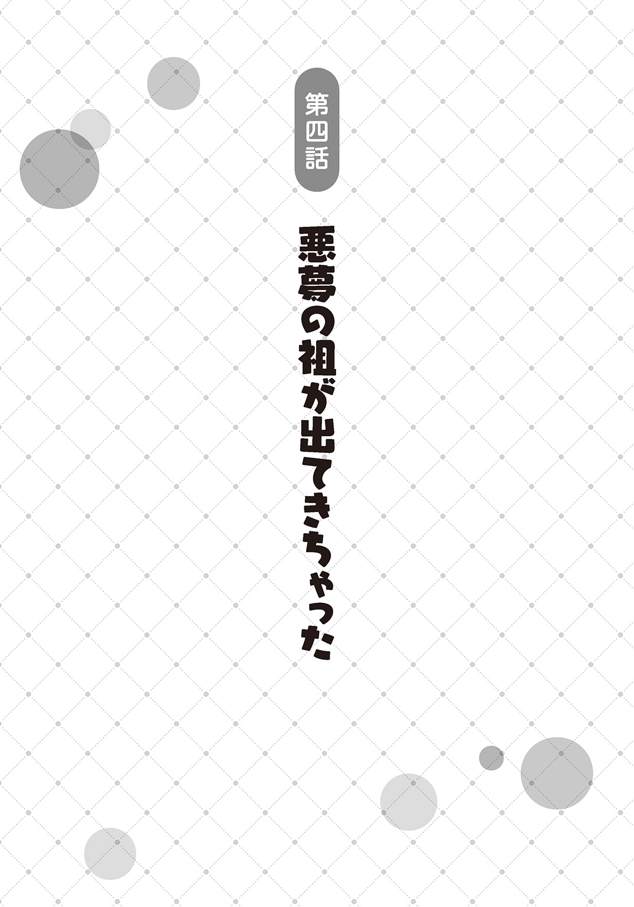

| 若者の黒魔法離れが深刻ですが、就職してみたら待遇いいし、社長も使い魔もかわいくて最高です！ | |
| 森田季節 | |
この本は縦書きでレイアウトされています。
また、ご覧になる機種により、表示の差が認められることがあります。

 ダッシュエックス文庫DIGITAL
ダッシュエックス文庫DIGITAL
若者の黒魔法離れが深刻ですが、就職してみたら待遇いいし、社長も使い魔もかわいくて最高です！
森田季節
残念ですが、貴殿は「王都白魔法検査協会」の試験の結果、落選となりました。今後のご活躍を心よりお祈り申し上げます。
「またお祈りの手紙が来たっっっ！」
俺は寮のポストの前で頭を抱えた。
これで三十四件目のお祈り......。いや、三十五件目だっただろうか。三十を越えたあたりから数がわからなくなってきた。
三件目ぐらいまでは、「相手のほうに見る目がなかったんだ。俺を採用しなかったことを後悔するぞ！」と通知を破り捨てるぐらいのメンタルの強さもあったのだが、途中から心のほうが破れた。
俺って、三十社以上がダメと言ってくるほど、価値のない男なのか......？
失意のまま、魔法学校の寮の食堂に行ったら、来年度の新生活を語る声がいくつも聞こえてきた。
「お前はどこに就職するんだ？」
「中小の白魔法工房だよ。王都の隣の町」
「いいじゃん。俺、子供向けの魔法塾講師だぜ。教職の授業なんてろくにとってないから自信ねえよ」
「そういや、隣のクラスのキリスが魔法軍の幹部職員に受かったって知ってるか？」
「あいつキャリアかよ......。将来は安泰だよな～」
くそ、どうしてリア充を爆発させる魔法が教育課程に入っていないのだろうか......。
そんな魔法を覚えていれば、今すぐ、爆発させてやるのに......。
「はい、フランツさん、そんなにしょんぼりした顔しないで、ごはん食べて元気出してください！」
俺の前にどんと顔の大きさほどもある巨大なパンと、大盛りのサラダが置かれた。
寮の食事担当をしているリーザちゃんだ。
まだ二十歳になるかならないかといった年齢のはず。つまり、ちゃん付けしてるけど、俺たちより数歳、年上だ。ただ、みんな、リーザちゃんと呼ぶのが決まりになっている。
今は食事中だからか、キャップに長い髪をまとめて入れていたけど、それもまた似合っている。
愛らしい見た目と違って、なんでもかんでも特大サイズで寮生に出してくるのが、リーザちゃんの特徴だ。
「だってさ、また落ちたんだよ......。就職先がいまだに決まってないの、俺ぐらいのものでしょ......」
「そうだね。この寮で、まだ就職が決まってないのはフランツさんだけだね」
「そこはフォローなしか......」
まあ、根拠ないのに大丈夫と言われても、納得ができるかはまた別だけど......。
「はぁ、どこも倍率高すぎるんだよ......。しかも、魔法技術の成績って、みんなそんなに大差ないから、結局面接で就職先決まるし......」
俺の所属している王都国際魔法学校は、十四歳から十八歳までの四年間の学び舎だ。ここでプロの魔法使いとしての基礎を学んで、魔法関係の仕事に就職していくのだ。
無論、超優秀な生徒は研究者や学内の教師のポストが用意されるが、そういうのは生徒の一割もいない例外的存在なので、あまり関係ない。それに超優秀な奴は王都の最高学府に行ってるはずだしな。
そして、俺は就活にずっと失敗し続けて、今に至るというわけだ。
ちなみに現在、二月。
来月に卒業式が行われるので、この寮も出る羽目になる。
学生期間は三月いっぱいだから、卒業式の後も、同月中は寮にいられはするけど、誤差の範囲だ。
「いっそ留年して、来年、『新卒で～す』と言って就活するというのはどうかな？」
「リーザちゃん、それは俺も考えた。でも、思いついた時には卒業できるだけの単位は揃えちゃってた」
「そっか、フランツさんって、学校の授業は真面目に受けられるけど、就活とかは全然できないっていうタイプの人なんだね」
「リーザちゃん、死体を蹴ったうえで火を放つタイプだよね......」
しかも、だいたい正解だから反論もできない。
「う～ん、私の案としては、ここはワンチャン、黒魔法業界に入ってみるべきだと思うな」
俺は嫌な顔をした。
「今時、黒魔法なんてはやらないよ......。キモイ・キタナイ・キケンの３Ｋ魔法業界って言われてるし。無難に白魔法のほうがいいって」
この世界には合計七色の魔法がある。
白・黒・赤・青・緑・紫・金の七色。
厳密には複数の色を混ぜた虹色とかもあるけど、色にはカウントされないから除外。
ただし、バリエーションがあるように見えても、メインは圧倒的に白魔法だ。赤魔法なんて攻撃ぐらいにしか使えないし、緑魔法もエルフぐらいしか使わない。紫魔法は人間の精神に干渉するけど、そもそも難易度が高すぎる。ほかも似た感じだ。
なので、魔法業界で働くとなると、ほぼ白魔法なのだ。
一応、黒魔法もある程度就職先はあるらしいけど、生贄を捧げたり、寿命が縮んだり、汚物にまみれたりとか、マイナスイメージしかない。偏見かもしれないけど、一般にそう思われている。
かつてはそれなりにいた黒魔法の魔法使いも、どんどん志願者も減っていって絶滅寸前だ。
「先日も王都の新聞で、若者の黒魔法離れが深刻と書いてあったよ。わざわざ危ない橋を渡りたい奴なんていないからね。文字通り、ブラックな業界なんて若者じゃなくても嫌だよ」
「黒魔法の評判が悪いのは私でも知ってるよ。でも、評判が悪いってことは倍率も低いでしょ。ためしに就職してみて、業務内容も羊の首を毎夜捧げるみたいな不気味なものだったら、辞めちゃえばいいんだよ」
「すぐ辞めたら、職歴に響きそうだな......」
「でも、このままだと一か月後に卒業して、ただの無職になっちゃうよ？」
無職という言葉の響きが重すぎた。
「わかったよ......。俺、黒魔法業界も受けてみる......。でもさ......」
ほかにもハードルがある。
「会社説明会とかでも、黒魔法の会社ってほぼ見かけないから、どこで門戸開いてるかわからん......」
大きな説明会をできるのは、大きな会社だ。だから、黒魔法会社の説明会なんて魔法学校の就職支援室の掲示にもほとんど見た記憶がない。
あるいは貼ってあったとしても、意識してなかったから、気づいてないのかもしれない。
「ああ、それなら、黒魔法の会社で働いてる女の人、知ってるよ。私のいきつけのカフェの常連さんなの。その子のところに行って相談してみようよ！」
「そんな人がいるんですか。リーザちゃんて顔、広い......」
「ここは王都だよ。黒魔法で働いてる人だっているって」
当たって砕けてみるか。
「じゃあ、アポをとってもらえますか？」
こうして、俺は黒魔法業界で働いてる人のところに相談に行くことになった。
数日後、リーザちゃんに言われた、カフェ『百の目を持つフクロウ』に行った。
内部は名前のとおりフクロウがモチーフの調度品がうじゃうじゃ置いてある。その割に、なかなか洒落た空間だった。
一番奥のテーブルに座っていればその黒魔法業界の人が来ると言われているので、黄金麦のお茶を注文してそこに座る。
黒魔法業界の女性か。きっと、しわしわの老婆みたいなのが来るんだろうな。
伝統工芸の世界みたいに、若い人間が入ってないイメージある。どうせ条件が悪いんだろう。羊の首を祭壇に並べる仕事とか、そういうのずっとやってそうだ。
あまり楽しくない想像をしながら待っていると、頭に影がかかった。
顔を上げると、犬耳の女の子がローブ姿で立っていた。栗色の髪のショートボブがよく似合っている。
年齢は俺よりちょっと若いぐらいか。十六、七あたり。犬耳ということはワーウルフかな。王都にはいろんな人種がいるから、おかしくはない。
「あなたがフランツさんですか？」
その女の子に言われた。ということは、黒魔法の会社の関係者か。そういえば、ローブが黒系だ。白魔法の業界人はこんなに黒いローブは着ない。
「はい、俺が、フランツですけど......」
「あ、あ、あああありがとうございますっ！」
いきなり手をとられて、なかば強引に握手された。
な、なんだ、この人!?
「私、ネクログラント黒魔法社の代表、つまり社長をしていますケルケルと申します！ 人材不足の黒魔法業界に来ていただいて本当に本当にうれしいです！」
「えっ？ 君みたいな若い子が代表してるんですか......!?」
どう見ても下級生にしか見えないぞ!?
「ああ、私、魔界の猟犬ケルベロスが出自なんです。この姿は仮のものなんですよ。年齢は約五世紀です」
年齢を世紀で表現する人、はじめて見た！
「いや～、助かりますよ。黒魔法ってだけで学生さんも嫌がって来ないですもん。業界の活性化のためにも、フランツさんみたいな若い方に来てもらえるとうれしいです！」
よく見ると、彼女の尻尾が後ろでやたらと動いていた。どうやら、うれしいと尻尾がぶんぶん横に振れるらしい。
「あの......まだ入るとは言ってませんよ......？ 今日はお話を聞きに来ただけで......」
「はい！ 今日は懇親会だと思っていただければ、けっこうですから！ 料理、なんでも頼んでいただいていいですよ？ まずは季節のパンケーキ一ダースほどいっときますか？」
「いえ、お茶だけでけっこうです！」
ここであんまり注文したら断りづらくなる！
そこから、ネクログラント黒魔法社について、いろいろ説明をされた。
「昔は我が社も社員数が三百に届くぐらいで、魔界を含む全国十五か所に支部があったんですが......各支部も閉鎖され、今では十人ほどでやっています」
ＴＨＥ中小企業だな......。というか、そんな斜陽の会社に就職していいのか？
「今、斜陽の会社だと思いましたね？」
ぎくり。
「いいんですよ！ 気にしないでください。むしろ業界は斜陽が進んで夜になりそうなぐらいですよ～」
「自虐ネタをかまされても、学生の立場では笑えませんよ！」
「あっ、それもそうでしたね。ごめんなさいね。もともとケルベロスなんで軽い性格なんですよ～。会社は真面目に経営していますから！」
ケルベロスであることと軽い性格であることが一致するのか謎だけど、突っ込むの面倒だし、放っておこう......。
魔界というのは魔族が住んでる世界だけど、最近は行き来する人間も少なくて詳しいこともわからない。とくに戦争状態とかにもなってないので、問題はないのだろう。
「ちなみに、どういうお仕事をされてるんですか？ 得体のしれないことですか？」
万が一、犯罪者になりかねないことをやらされるのでは困るからな。しっかり確認しておかないと。
「最近はインプやワイトを使役して、沼の掃除をしたりしてますね。あっ、最初はワイトの召喚とか難しいと思うんで、もっと簡単なことをやってもらいますから、ご心配なく」
「ほかには？」
「お墓や荒れ地の整備とか」
「......ほかには？」
「無人になった廃墟の管理とかもしてますね」
あれ、やけに地味だぞ。
「もっと、血がどばっと出たり、生贄がたくさん出たりするようなのはないんですか？」
「ないです」
即答された。
「ほら、羊の生贄とか、羊を買うのにものすごいお金がかかるじゃないですか。羽振りよかった時は別として、そういうことしてる余裕ないんですよ。もっと地道な仕事ばっかりですよ」
「寿命縮むとかそういうのは？」
「そういう魔法もあるにはありますけど、そんな危険なのは実質、不老不死である私みたいなのがやりますから、問題ありません。あと、その手のリスクって発動魔力の代わりだったりするんですよね。ゆっくり着実にスキルアップして魔力や技量が上がれば、リスクも負わずにすみますよ」
思ったよりも安全そうだぞ。
「今、思ったより安全と思いましたね」
ぎくり。
「そうなんです！ 最近の黒魔法業界って安全なんですよ！ イメージが悪いのは昔に生贄とか求めてた名残なだけで」
にっこりとケルケルさんは笑った。
「むしろ、基本労働時間は十時から十九時（その中に、休憩時間一時間含む。実労働時間八時間）で、夜に労働する場合はその分、翌日を休みにするなどで対応してます。給料も白魔法業界の倍ぐらい出ます」
「かなりホワイト！」
「懇親会などに上司が無理に誘うのも禁じてます。もちろん、好きならお店を押さえたりしますけど。黒魔法を使う者にとって、夜のプライベートの時間って大事ですからね。夜に身勝手に拘束するのはマナー違反なんですよ」
「そこもうれしい！」
上司に会社終わった後も付き合わされるという厄介な問題がないというのは助かる。
あれ、もしかして、かなりいい会社なんじゃないか。
この感じだと、断る理由もとくにないぞ。
「どうでしょうか？」
テーブルごしに座っていたケルケルさんが顔を近づけてきた。
見た目は下級生の女子なので、ちょっとどきどきする。
しかも、この人、目がくりくりしてて、小動物っぽい。リーザちゃんとカフェ友達になったのもわかる。リーザちゃん、こういう子、好きそうだし。
「試用期間は就職してからの一か月です。嫌なら辞めてもらってかまいません」
「辞めた者はどこまでも追いかけて殺すとかしませんよね？」
「これ以上、業界の評判が悪くなることをする余裕など、はっきり言ってありません。人をいじめる業界っていうのは、結局、代わりの人が来る自信がある業界なんですよ。うちは頭下げて来てもらうしかない立場です」
それは正論だと思えた。
「ちなみに、おそらく来月中に、学校の寮から出ていかれると思いますが、キッチン・ダイニングルーム・トイレ・お風呂・その他三部屋付きの社員寮を王都に押さえています。そちらに入居してもらうことも可能です！ お値段は給料から月に銀貨一枚分引くだけです！」
俺は生唾を飲んだ。
安く設定されてる学校の寮ですら月に銀貨四枚はかかったからな......。
社員寮とはいえ、世間的に見ればほとんどタダ同然の値段だ。
しかも一から無職の人間として部屋を探す手間を考えれば、無茶苦茶、楽だ。
「さあ、どうでしょう？」
もう一度、ケルケルさんが尋ねてくる。
俺は手を伸ばして、ケルケルさんの手をぎゅっと握った。
「御社で働かせてください！」
「採用します！ 卒業後は我が社にどうぞ！」
ケルケルさんも元気に答えた。
ようやく就職先が決まった！ これで心おきなく、卒業式にも参加できる！
魔法学校入学以来、最も難しい宿題が終わった瞬間と言っていいだろう。
「そうだ、この後、お時間あります？ 会社を案内しますよ」
何も知らないまま会社に行くの、たしかにハードル高いよな。
「それじゃ、お願いします」
俺とケルケルさんはカフェを後にした。俺の飲み物代も当然のようにケルケルさんが出してくれた。
途中、王都の繁華街を通る。
ケルケルさんがかわいいからか、男がちらちら、彼女に視線を向けていた。
デートしてるとでも思われてるのかな。まさか、この子が会社の社長で、こっちが新卒採用候補だとは考えないだろう。
繁華街の先には、白魔法の企業名がついた看板がいくつもあった。
きっと、クラスメイトや寮の仲間にもこのへんで働く奴がいるだろう。
「ああ、このへんの建物なんですね。魔法関係の会社が多いし」
「それがね～、違うんですよ。このあたりは地価が無駄に高いんで。もうちょっと歩きます。あ、でももうちょっとだけです」
――その後、一時間半、歩かされた。
王都は周囲を城壁に覆われている都市だ。
とはいえ厳密には壁の外にも都市は拡大して広がっているし、一時間半も歩けば、余裕で壁の外側になる。
「こんなに遠いんですか......」
「いい運動になりませんか？ それと沼とかの仕事って郊外のほうが都合いいんですよね」
いかにも王都の住民用に野菜作ってますというような畑が目立ちはじめた頃――
「ここが私たちの会社です」
ケルケルさんが言った。
『ネクログラント黒魔法社』という看板がついた石造りの堅牢な砦がそびえていた。
小高い丘の上に立っているから、入口に着くまでに五分ぐらいはなだらかな坂をのぼらないといけなそうだ。
「これ、会社というか砦ですよね......？」
社員数が十名の企業の規模じゃないぞ。最低でも二百人は籠城できるサイズだ。
「千年ほど前、まだこの国がいくつもの国家に分かれていた時、現在の王都を守備するためにつくられた砦だそうです。そこを『ネクログラント黒魔法社』が買い取ったんです。ほら、黒魔法狩りみたいなのが起きたら立てこもって戦わないといけませんから」
物騒な話だけど、黒魔法のイメージは今でも悪いぐらいだからしょうがないか。
砦の中は、ごく普通の魔法の会社といった感じだったが、全然人気がない。
「静かですね」
「事務的な仕事はあまりないから、大半の人は出払ってるんですよ。外での仕事の時は、出勤しなくてもいいですし」
なるほど。机の上で書類書くのがメインじゃないようだ。黒魔法っぽくもないし。
俺は応接室に通された。ケルケル社長（もう、俺は社員になるわけだから「さん」付けを変更）は持ってくるものがあると言って、一度席をはずした。
応接室の壁には獣の皮らしきものが吊るされていたりして、なかなか不気味だ。そこは黒魔法感があるな。
部屋の隅にある本棚には、『本当は怖くない黒魔法』『お子様でも安全安心な黒魔法』といったタイトルの本が並んでいる。
イメージ改善に努力してるんだな......。
「お待たせしました」
そこに長い木の杖を持ったケルケル社長が入ってきた。
杖はよく見ると、コウモリが頭の部分に彫ってある。かなり手の込んだものだ。
「はい、せっかく来ていただきましたし、今からフランツさんにやってもらいたいことがあります。使い魔の召喚です」
「使い魔!?」
白魔法だとまず出てこない単語だ。
「そうです。黒魔法では単純労働は使い魔にやらせることが多いんです。魔界から低級悪魔を呼び出して、契約するんですね。業界的にも使い魔もいない黒魔法使いというと、信用もされないので、まずは使い魔を出してください」
どの業界にもある暗黙のルールというやつだな。島にある会社は小船の操縦免許が必須だとか聞いたことがあるし、そういうものに近いのだろう。
「上手く使い魔を召喚できれば、就職前からフランツさんの生活をバックアップできますからね。悪い話ではないです」
なるほど、使い魔は主人に仕える存在だもんな。
「ちなみに私の使い魔は――」
ケルケル社長の手から煙が出たかと思うと、そこに羽の生えた毛むくじゃらの犬が出てきた。
「この子です。名前はゲルゲル」
犬耳の子が犬を使い魔にしてるってややこしいな......。
「こんにちワン。今日も一日がんばるワン」
犬の使い魔がしゃべりだした。
「こういう子を出してもらおうと思うんです。ちなみに、お茶くみも、借りた魔法書の書き写しもやってくれますよ。ほかにはゲルゲルは何か得意なことありましたっけ？」
「王国チェス選手権、三年前のチャンピオンだワン」
「活躍の幅、広っ！」
「チャンピオンの優勝賞金は会社の利益とさせてもらいました」
それは会社に帰属するのか......。
「もちろんチェスは例外的なものなんですが、こういう使い魔を召喚して、契約していただきます」
「使い魔って、魂とか取られませんよね......？」
目下一番の不安はそれだ。
黒魔法で、しかも契約という単語が出ると覚悟してしまう。
「大丈夫ですよ。我が社では使い魔にも賃金を払っていますから」
「給料で代用できるの!?」
「月給銀貨四十枚だワン」
「しかもけっこうもらってる！」
ちなみに魔法学校を卒業してこの王都で就職すれば、初任給は月に銀貨二十枚程度が相場だ。
これでも魔法学校卒業という箔があるだけマシだ。魔法学校の卒業資格がないまま魔法関係の職につくのは、親が魔法使いで子供の頃から鍛えられてたりしてないとほぼ無理だ。それに卒業資格がないと、収入ももっときつくなる。
「まあ、新人のフランツさんが扱える使い魔なら月給銀貨十枚といったところでしょうか。そこは使い魔さんとも交渉します」
そう言うと、ケルケルさんは本の一ページを開いて、テーブルに置いた。
黒魔法用の呪文だな。特殊な言語で書かれている。
学校の授業で軽く習うから、これぐらいなら読めなくはない。
「エンリ・バンラ・ヒルンディルケ・ギグ・ランフィ......」
「おお！ さすがですね！ この詠唱の発音がすぐにわかるだなんて、魔法学校の生徒さんでも一割いるかどうかですよ！」
「成績は悪くなかったですからね」
ぶっちゃけ成績だけなら、上の下ぐらいのものだった。
教師もなんで俺が就職できないか不思議がっていたほどだ。
だって、就活で重要視されるのはコミュ力とかだからな......。
真面目にテスト範囲を勉強するような能力はあるけど、面接で初対面の相手を感心させるようなことを言うなんて能力はなかったんだ。
そんなの、魔法使いと関係ないだろ！ コミュ力が高かったら魔法が使えるのか！ 就職に必要なら、もっとコミュ力向上の授業作ってくれよ！
しまった、ちょっとアツくなってしまった......。
「読めるようなら、やることもわかりますね。杖を持ちながら魔法陣の上でその呪文を唱えてください」
「魔法陣を描くのは慣れないと難しくないですか？」
「それなら省略ができます。この部屋のじゅうたん、魔法陣になってますから」
改めて床を見たら、たしかに円の中に目があるような不思議な紋様になっていた。
「はい、じゃあ、この杖をプレゼントします」
コウモリの杖を渡された。
「おそらく、使い魔を出すのに一か月ぐらいはかかると思いますけど、空き時間にでもやってください。採用後にまだ出せてなくても、ちゃんと雇いますからご安心を。新人教育も会社にとって必要なことですから」
「ためしに、ここでやってみていいですか？」
ここで軽くやってみて、おかしなところがあれば、社長に教えてもらうのが一番効率がいいだろう。
「おお、熱心ですね！ はい、どうぞ、どうぞ」
俺は杖を持って、魔法陣の上で動かしながら、詠唱をする。
「エンリ・バンラ・ヒルンディルケ・ギグ・ランフィ......」
すると――いきなり、魔法陣が発光しはじめた！
「えっ、まさか、一発目で成功したんですか!?」
社長が声をあげる。
「うわっ！ まぶしっ！」
俺はそんなことわからないから、杖を持ってないほうの手で目をふさぐぐらいしかできない。もっとおどろおどろしい反応があるかと思ったけど、白魔法を使った時と変わらない。
そして、だんだんと光が収まった後には――
胸がやけに強調された服を着た、悪魔っ娘が浮いていた。
胸だけじゃなくて、下半身もいろいろと危ういな......。いわゆるビキニアーマーみたいなのの、布バージョン。
「あっ、召喚されてしまいましたわね。わたくし、サキュバスのセルリアと申しますわ」
見た目と違って、礼儀正しくセルリアという女の子は頭を下げた。
「こんにちは、今、召喚したフランツと申します......」
俺も合わせて頭を下げた。
「ああ、そんなにかしこまらなくてもけっこうですわ。あなたがご主人様なのでしょう？ こちらは使い魔ですわよ」
とはいえ、しゃべり方とか立ち居振る舞いとか向こうのほうが貴族っぽいんだけど。
「フランツさん、説明しますね。サキュバスは魔界に住む魔族の中でも、かなり上級の存在なのです。とはいえ、召喚した以上はちゃんと主人に従ってくれますので」
どうやら、使い魔という立場は魔界の住人にとって恥ではないらしい。
「そうですわね。この世界で言うと、いわば学生時代のバイトぐらいの感覚ですわ」
魔界の価値観だとそうなるのか。たしかに魔族ってとてつもなく長命な存在も多いらしいしな。
「それにしても、すごいですね、フランツさん......」
社長は感心したというより、びっくりしているようだった。犬の尻尾が左右にぶんぶん振れている。
「一発で上級魔族のサキュバスを使い魔にするなんて、とてつもない才能ですよ！ 黒魔法業界に向いてますよ！」
「そ、そうなんですか......。全然気づかなかった......」
魔法学校では使い魔召喚なんてやらないからな。生徒がうかつに召喚して、魂を要求されても困るだろうし。
黒魔法は中途半端な知識でやると事故の元だから扱うなと、学校ではしつこく言われていた。なので、適性があるかどうかもよくわかってなかったのだ。
「あの、今度はこのインプを強制送還する魔法も唱えてもらえませんか？」
ケルケル社長は尻尾を振りながら、また違うページを開いた。
「幹部職員しか使う必要のない、逆に言うと幹部職員などしか使えない上級魔法なんですが」
いくらなんでも、そんなのは使えないだろうけど、やるだけやってみるか。
「ええと、リルラ・ネフ・バズズ・ラマウォガ・ヘントーラゥ......」
使い魔を出すのと比べると難易度の高い魔法だが、どうにか唱えながら、魔法陣の中で杖を動かす。本来ならこれでさらに魔法陣を描く必要があるはずだから、相当難易度が高い。
その間にケルケル社長は部屋の窓を開けていた。
すると、魔法陣が発光して、開いた窓から小柄なインプが入ってきた。
自分の力で来たというより、強引に飛ばされてきたという感じだった。
「あの、すいません。俺っち、なんかしましたか......？」
インプはきょとんとして、社長に聞いていた。
「いえ、ちょっと実験をしただけです。今日は休んでてください。あっ、休憩室にお菓子があるから食べてもらっていいですよ」
「へい！ いただきやす！ しかし、なんで呼ばれたんだろ......」
インプは変な顔をしたまま、部屋を出ていった。
そのあと、ケルケル社長が目を輝かせて俺のほうを見つめてきた。
「マジでフランツさん、すごいですよ！ あなたは業界の星になれます！」
手を握られて、ぶんぶん振られる！
「あ、ありがとうございます......」
まさかこんな簡単に褒められるとは思ってなかった。これって新人を乗せるための演技なのか？ いや、でも、社長の反応は素っぽいよなあ......。
「卒業したら、ぜひとも我が社にお出でください！ 絶対にひどい扱いはいたしませんから！」
まさか、黒魔法が俺に向いていただなんて......。
俺のリアルも社会人になってついに充実するのか？ 頼む、灰色の学生生活の分を、青春を取り戻させてくれ！
窓の外を見たら、まあまあ日が傾いていた。
そうだ。寮の食事の時間を考えたら、そろそろ帰ったほうがいいかもしれない。ここは郊外だから寮まで距離もあるしな。帰路も一時間半の道のりだし。
「じゃあ、今日は、俺はこれにて失礼しますね」
「帰るというと、フランツさんは学生寮でしょうか？」
「はい、そうです。実家は遠いので、寮暮らしです。また、卒業したらすぐに来ますから」
「はい！ お待ちしていますからね！」
「「ありがとうございました！」」
なぜか声がハモった。でも、社長はしゃべってはいない。
サキュバスのセルリアさんが一緒にあいさつして、部屋を出ようとしていたのだ。
「え、君も来るの!?」
「はい、わたくし、使い魔ですもの。一緒にまいりますわ」
「えっ......学生寮についてこられるとさすがに目立つんじゃ......」
あと、異性の立ち入りはアウトなのだ。学校は共学だけど、うちは男子寮だ。
ケルケル社長が「使い魔を隠す魔法は、疲れるので今はやめたほうがいいですね～。これは呼び出す時よりはるかに高度ですし」と無責任なことを言った。
「でも、俺、黒魔法の才能はあるんですよね？ やれませんか？」
「ちょっと魔界の特殊な材料がいるんです。今、この会社にはないので。すいません、せいぜいカラスぐらいしか召喚できないと思っていました......」
あれれ、これは困ったことになったぞ......。
サキュバスと帰宅したら、退学にならないまでもどんな噂を立てられるかわかったものじゃない。
「では、今日はひとまず我が社の社員寮に泊まるというのはどうでしょうか？」
ぱんと両手を合わせて、ケルケル社長が提案してくれた。
「まだ、社員じゃないですけど、いいんですか？」
「はい。内定は出していますから」
たしかに一度社員寮を見るのも悪くはないかもしれない。近いうちに学生寮も出ないといけないわけだし。
「ご主人様、わたくしはそれがいいと思いますわ」
二票目も入ったか。これで多数決でそっちに確定だ。
「じゃあ、そうしようかな」
◇
寮までの道のりは王都方面に徒歩で二十分ほど戻ったところだ。かなり城壁に近いところらしい。
そんなに人に出会うわけではなかったけど、かなりじろじろ見られた。
理由は明白だ。
「やけに皆さん、こちらをご覧になりますわね」
サキュバスのセルリアさんの露出度が高すぎるのだ。
ぎりぎりで大事なところはすべて見えないように設計された服を着ているが、お尻はしっかり出てるし、こういうのって見えそうで見えないほうが注目を集めるものだからな。そりゃ、素っ裸でも見られると思うけど。
「はっきり言います。セルリアさんのせいです」
「ご主人様、使い魔なんですからセルリアとお呼びくださいませ」
「はい、セルリア......」
相手の態度が礼儀正しいので、落ち着かない。オラオラ系の使い魔が来ても困るといえば、困るけど。
「これから、いろいろとご奉仕させていただきますわね」
「う、うん......。よろしく......」
美少女サキュバスの「ご奉仕」という言葉の破壊力、ヤバい。
「あっ、住所の寮はここですわね」
予想と違い、社員寮は長屋とか宿みたいな建物じゃなくて、こぎれいな一軒家だった。もしお金を出したとしたら、そう簡単に学生が住めるものではない。
学生寮に連絡入れてないけど、一日ぐらいの無断外泊ならしてる奴も多いし許されるだろう。学生が王都の友達の家に泊まるとか、割とあることではあるし。
じゃあ、来月から住む家に入ってみますか。
社員寮の中は人が住んでなかったせいで多少ほこりっぽいが、それでも、椅子もタンスもいいものが揃っている。
「悪くない部屋だな」
「そうですわね。できれば、ドクロがどこかに置いてあるともっとよいんですが、それ以外は満点ですわ」
「か、変わった趣味だね......」
サキュバスの価値観というか魔界の価値観は人間とかなり違うらしい。
「じゃあ、まずはこの部屋を掃除しようか。手伝ってくれる？」
「むしろ、ご主人様にやらせてもよいものなのでしょうか？」
そうか、使い魔って、掃除も含めて全部やるんだな。仕事の補助だけじゃないんだ。
「そこは俺もやる。借りているとはいえ、俺の家なわけだし」
「ご主人様はおやさしいんですわね。ではよろしくお願いいたしますわ」
ぱっと、煙みたいなものがセルリアの体にかかる。
その煙が途切れると、エプロン姿でホウキを持ったセルリアがいた。
「そういうこともできるんだ......」
「これぐらいの魔法は簡単ですわ」
「物質転送......？ だとしたら、かなり高度な魔法だと思うんだけど......」
多分、自分の持ち物だけとか限定があるんだろうな。でないと、物品の輸送業をやってボロ儲けできることになる。
さて、本格的に掃除するぞと意気込んでみたのだが――
セルリアのほうに目がいってしまって、あまり進まない......。
後ろからセルリアを見ると、なんか裸エプロンみたいに見える。
ちゃんと服は着てるので、別に卑猥ではない。卑猥に見えるほうがおかしいのだ。じゃあ、俺はおかしいのか!? こればっかりは男だから、しょうがない。
こんな子と一つ屋根の下で暮らすって、十八歳の男としてかなりの拷問だぞ......。
サキュバスだから、えっちなこともやらせてくれるのかな......待て、待て、そうするといろいろ吸い取られて衰弱するとか噂ではいうぞ......。
俺は行ったことはないが、王都の歓楽街でもサキュバスによる違法な店があるとかいう話だった。あんまり通うと命にかかわるとか。あくまで噂で行ったことはないけど......。
ああ、ダメだ、ダメだ。ルームメイトにいきなり下心持ちすぎだ。
ここは落ち着いて紳士的に対応するぞ！
「あっ、ご主人様、お掃除終わりましたわっ♪」
いつのまにか、部屋がリフォームしたのかというほどにきれいになっていた。
「お掃除技術は魔界の学校で習いましたから。あと、空を飛べるサキュバスは掃除の効率もいいらしいですわ♪」
いいところを見せられて、ちょっと誇らしげなセルリア。
セルリア、マジ天使！ むしろ悪魔だけど！
ああ、こんないい子に卑猥なことを考えていた俺はダメだな......。心が濁ってる......。いや、それって黒魔法使いとしては正しいのか？ よくわからなくなってきた。
「ありがとう、助かったよ。これで、住環境は完璧だね」
「じゃあ、次は『食』ですわね」
たしかに無人だった寮に食べ物があるわけがなかった。
「よし、王都に買い物に行ってくる！」
◇
セルリアには家に残ってもらって、俺だけで王都にやってきた。
理由は明白だ。王都にセルリアを連れてきたら、猛烈に目立つ。
使い魔を連れて歩いてはいけないなんて法律はないはずだけど、それでも公序良俗的な何かにも反すると思うし、あまりよくないだろう。
「よう、フランツじゃないか」
声をかけられたほうを振り向くと、クラスメイトのレイモンドが偉そうな顔で立っていた。
俺より成績悪いのに、先に内定とった奴だ。まあ、俺が卒業一か月前まで内定とってなかったのだから、ほぼすべての生徒が先に内定とってるわけだけど。
こいつは人を見下してくるタイプなのであまり好きじゃない。
「フランツは内定決まったのか？」
ほら、俺が就活に失敗してると思って、わざとこういうこと聞いてきた。けど、聞いたタイミングが悪かったな。
「それがさ、卒業までに滑り込みセーフで、内定とれたんだ」
うん、まさに今日な。
「あっ、そうかよ......」
露骨に嫌そうな顔になったな。そこは表面上は「よかったな」とか言って喜べよ！
「内定先はどこなんだよ」
「黒魔法関係の会社だけど」
すると、またレイモンドが勝ち誇った顔になった。わかりやすい奴......。
「おいおい、今時、黒魔法の業界なんて流行らないって！ オッサンが若者の黒魔法離れとか言ってるけど、キモイ・キタナイ・キケンの３Ｋなだけだっての！」
うん、俺も正直、そう思ってた。
「どうせ、給料とかも薄給でブラックなんだろ？ 心病む前に白魔法の仕事に転職したほうがいいぞ」
「ああ、給料って白魔法業界の相場の倍ぐらいらしいわ」
また、レイモンドが嫌そうな顔になった。
お前の就職先、そんな有名企業じゃないから確実にお前より多いよ。
しょうもないことでマウンティングとってくるな。自分の立場が不安定なところで偉そうな顔しようとすると、かえって痛い目見るぞ。
「そっか......。ちなみに、お前、彼女はいるのか？」
その言葉と同時に、レイモンドがちらっと横に目をやった。
少し化粧が濃い目の女の子がいる。おおかた、魔法学校の後輩だろう。そういえば、さっきから立ってた。レイモンドのことを待っているようだ。
「ちなみに、俺の彼女。レイラっていうんだ。先月から付き合いはじめた」
「あっ、こんにちは～☆ レイラで～す☆」
見た目から判断すると、けっこう遊んでる系の子だな。
多分、この子もレイモンドもお互い本気じゃないんだと思う。根拠は付き合いはじめた時期だ。レイモンドが内定決まった後なんだよな。
彼氏が社会人になったらいろいろ買ってもらえるだろうし、社会人の彼氏だと、学生の彼氏を持ってる女子に対して、自分が大人なように見せられるだろうし、このレイラって子もそのあたりを計算に入れてるように思う。
いや、もちろん純愛の関係かもしれないけど、その子のバッグ、かなり高いもののはずだ。学生が持つには実家が金持ちとかでないときつそうだから、レイモンドが買ってやったんだろう。でも、彼女に関しては俺の負けだな。いないものはいない。
「よかったな。俺、彼女いない歴更新中だから」
「まあ、黒魔法の会社で見つかるんじゃないか？ しおしおの老人ばっかりかもしれねえけど」
それがそうでもないんだよな......。社長がまず美少女だし。
やっぱ、黒魔法の業界って偏見と戦ってるんだな。でも、倍率が上がらないうちが狙い目かもしれない。
さてと、敗北感も味わったことだし、とっとと買い物に――
「あっ、いたいた！ ご主人様、探しましたわ！」
そこにやってきたのはセルリアだった。
俺の背中に両手を置いて、着きましたアピールをしてくる。
「あれ、家にいてくれって言ったよな......？」
「ごめんなさい......。でも、一人で残ってるの、寂しくてついてきちゃいましたわ......」
しゅんと悲しげな顔になるセルリア。あわてて俺は「ごめん、気づかなかった！」とフォローを入れる。別に叱ったつもりじゃない。
一方で、なぜかレイモンドが固まっていた。
「えっ......それってサキュバスなんじゃねえのか......？」
「ご主人様の使い魔をしておりますセルリアですわ」
ぺこりとレイモンドたちにあいさつするセルリア。
あっ、レイモンドの顔に「負けた」と書いてある。こいつ、彼女の顔で勝負しようとするなよ......と思ったけど、もし顔面偏差値が数値化されたら、セルリアが圧勝すると思う。
レイラって子がダメなのではなく、さすがサキュバスというか、セルリアがかわいすぎるのだ。しかも顔自体は清楚系なので、女子慣れしてない男でも好きになるタイプの顔だと思う。
化粧のことは詳しく知らないけど、ほとんどノーメイク（のはずだ）でこれだけの美貌を保つのって、人間の女性だととんでもなく難易度高いぞ。
「ちょ！ レイモンド！ なんで負けたみたいな顔してるわけ！」
彼女さんも怒った。そりゃ、そうだろう。
「わ、悪かった！」
「何か買ってくれないと納得しないからね！」
レイモンドは彼女に引っ張られて退場していった。
「ご主人様によくないことが起こってる気がして、文字通り飛んできましたわ。虫の知らせって言うのでしょうか。使い魔はご主人様のことを察する力が増すらしいですわ」
ふふふとセルリアはいたずらっぽく笑った。
「そうか、寂しくて来たっていうのは方便で、俺を助けるために......。やっぱりセルリア、いい子すぎる！ マジ天使！」
女子に助けてもらったことなんて何年ぶりだろうか！
「わたくし天使じゃなくて悪魔ですわよ。それにご主人様、わたくしは当然のことをしただけですわ」
そう言いつつ、ちょっとドヤ顔なところがまたかわいい。これは出会った初日で恋に落ちるかも......。
ただ、そこにサキュバスがいるということに変わりはない。気づいたら、思いっきり親子の視線を受けていた。
「ママー、サキュバスの女のひとがいるよー」「見ちゃいけません！」「パパがママよりかわいいって前に言ってた」「あの人ったら！」
あの子供のパパは正直すぎるぞ。
じゃなくて、しまった！ セルリアが目立ちすぎてる！
「と、とりあえず、市場に行って、大急ぎで食材買って帰ろう！」
「わ、わかりましたわ！」
俺たちは野菜と肉、それからパンを適当に買った。
夕食はとりあえず野菜中心のシチューにするつもりだった。
美味いかどうかは微妙だけど、栄養バランスを考えると、これが一番無難だ。
でも、またもやセルリアが「わたくしが料理をいたしますわ」と言い出した。
「何から何までやらせて悪いよ......」
「いえ、むしろ、使い魔は働かないとダメなんですわ。別に能力的に無理なことでもなんでもないですし」
家にメイドさんがいたとして、メイドさんに作らせないのもちょっとおかしいのか。
「じゃあ、お願いしようかな......」
調理の様子を見ていたら、無難に野菜を切って、火の魔法で点火してシチューを作っていた。
魔族だからって紫色のスープが出てきて悲惨なことになるというような展開はなさそうだ。
でも、後ろから見ると、やっぱり裸エプロンみたいに見えるからよくない。
ある意味、そういうことを考えてしまう俺の煩悩が一番よくない気もするけど、不可抗力だろう。
「セルリア、服買うか......？ どうしても意識しちゃうというか......」
「露出度の低いサキュバスなんてありえませんわ。それはサキュバスに対する侮辱ですわよ」
「なるほど、そういう価値観か......。わかった、それでお願いします......」
自分の文化に強制的に染めるのも人としてダメなことだと思うので、違いを認める方向性で。
そして無事においしそうなシチューができた。
こういうかいがいしい子の料理って、異常に不味いということがフィクションだとよくあるのだけど――
「う、美味い！ なんで、こんなにコクがあるんだ......」
材料は同じはずなのに、俺が作る予定だったものより格段にレベルが高い！
「調理時間を上手にコントロールすれば、一番おいしい状態でお出しできますわ。魔界で習いました♪」
魔界ってなんでも進みすぎだろ。
これから、セルリアと一緒に生活するのか。
こんなふうにあったかいシチューを作ってもらうのか。
悪くない、悪くないぞ！ 新社会人の生活はバラ色だ！ いや、黒魔法だから黒色のほうがいいのか？ とにかく、いい！
けど、そこで当然の疑問が頭をもたげた。
「こんなに最高なのに、どうして黒魔法って衰退したんだろ......？」
俺以外もみんな挑戦すると思うぞ。
「それは白魔法に対して、黒魔法は師匠が弟子を取ってやり方を伝えるスタイルが強かったからですわ」
セルリアはそのあたりのことも把握してるらしく、話をはじめた。
「師匠と弟子の関係がありきだとなかなか体系化できませんし、弟子になるのもハードルが高いですわよね。そこで、早い段階で学校で教えるのを基本にした白魔法に圧倒されていったんですわ」
「たしかに、画家になりたいからって、画家にいきなり弟子入りしにいくのは尻込みするもんな。でも、画家養成学校があれば、入りやすい」
「そうなのですわ。それに黒魔法の中に生贄を必要とするようなものもあったのは事実ですし。そうなると、余計に敬遠されますわよね。おかげで、キモイ・キタナイ・キケンの３Ｋと言われてしまうようになったんですわ」
そりゃ、黒魔法も消えていくだろうな。セルリアのいたという魔界ではずっと残ってるんだろうけど。
「ですが、人間の世界の黒魔法業界もこのままではいけないと、キレイ・カイテキ・カイホウテキの新たな３Ｋ職場を目指して動き出したそうですわ」
「業界も努力してたんだ！」
「キレイとカイテキはわかりやすいですけど、カイホウテキというのも大事ですわね。どうしても黒魔法というと閉鎖的なイメージがありましたから、何も怖くないですよ、就職しても安全ですよと宣伝していこうということですわ」
いつか、黒魔法業界が白魔法業界を圧倒し返す日もあるかもしれないな。
ちょうど食事も終わった。
「水が引けるなら、お風呂も火の魔法で沸かして入れるな。用意してくる」
「あっ、それもわたくしがやりますわ！ 火の魔法は使えますから」
火の魔法は最初に魔法使いが習うものなので、程度の差はあれ、ほぼすべての魔法使いが使用できる。
「じゃあ、お湯は作ってくれ。その代わり、皿洗いぐらいはするから！」
あまりにすべてやらせるのは悪いと思ったので、それで折れてもらった。
俺が入らないとセルリアも遠慮して入らないと思ったので、一番風呂をいただく。
美少女が入った後のお湯を楽しむ気だろと思われるのも心外だしな......。さすがに、そこまでヘンタイじゃないけど。
お風呂はちょうどいいお湯かげんだった。
「いや～、社員寮の暮らし、いいな～。黒魔法の生活、天国だわ」
思わず、つぶやいてしまった。風呂場だとつい独り言が出てしまう。
「――では、もっと天国にいたしませんか？」
セルリアがお風呂に入ってきた。
言うまでもなく、ほぼ裸に近い美少女がお風呂に入ってきたら、混乱する。
「え、え、え......!? お背中流します的なアレだよね......？」
しかし、セルリアは首をゆっくりと横に振った。
「サキュバスらしいお仕事もやらせていただきますわ、ご主人様......」
そう言うセルリアの顔はほてったように赤い。お風呂場の温度のせいだけじゃないだろう。
これはセルリアも求めている。
けど、このまま流されていいのかと理性が警鐘を鳴らす。
俺は真面目な顔で尋ねた。
「あのさ......これは無視できないから聞くんだけど、サキュバスとそういうことをしても無事でいられるのかな......？」
この世の中には対価というものがある、無料でおいしい料理を食べさせてくれるレストランはない。サキュバスはお金を取る代わりに、魂とか命とかいったものを取る。それが世間一般の見解だ。
命にかかわるような危険なことなら、どんな誘惑であろうと乗り越えないといけない。
それに――俺が危険になるようなことをしてくるのなら、セルリアを信じられなくなる。
それはあまりに悲しいことだ。せっかく、二人で楽しく暮らせると思ったばかりなのに。
すぅっ、とセルリアが息を吸い込む。
そして、胸に手を当てて、まっすぐ俺の瞳を見て、こう宣言した。
「あくまでも今のわたくしは使い魔！ ご主人様のために生きているのですわ！ それが使い魔というものなのですから！」
よく通る声がお風呂場に反響する。
「もし、ご主人様が死ぬようなことになれば、それこそ汚点ですわ。誰が望んでそんなこと、するものですか！」
そうタンカを切ってから、セルリアはすぐに、しゅんとした顔になる。
「わたくしはこんなふうに口でしか誓いは立てられないので、これで信じてもらえないなら何もいたしませんわ......」
もう、結論は出た。
俺は浴槽から立つと、セルリアに近づいてその手を包んだ。
「信じるに決まってるだろ。これ以上の証拠なんていらない」
これで疑うような奴はバカだ。
「俺は使い魔の気持ちもわからないような腑抜けじゃない」
「あ、ありがとうございますわ......」
受け入れられてうれしかったのか、セルリアはわずかに涙をにじませた。
その後、俺はお風呂場でセルリアといろんなことをした。そう、いろんなことだ。これ以上は深くは語るまい。
「ちなみに、無害なままこういうことするのって、サキュバス的にはいいことなの？」
「使い魔の賃金は黒魔法の会社からいただく契約なのですわ。わたくしの場合はおそらく月に銀貨十二枚から十五枚ぐらいでしょうか？」
やっぱり社長が言ってた新卒使い魔の相場よりは高いんだな。
◇
翌日、俺は昼から魔法学校の授業に出た。
最終学年の後半ともなれば、カリキュラムもほとんど残ってない。なかば参加自体が記念みたいなものだ。
とくに就職が決まってる奴は学校生活ももうすぐ終わりか......とアンニュイな気持ちにひたったりする。
別にたそがれてるからといってフォローする必要はない。
たいていの奴は「そうやってたそがれてる自分ってかっこいい！」と思っているのだ。
実際、就職が決まってる奴ほどなぜか真面目に授業に出たりするからな。
一方で俺みたいに就職先が決まってなかった側の人間は気が重いからあまり行きたくなかった......。自分が社会の落伍者みたいな気持ちになるからだ。
俺はせめてみじめと思われないように、クラスでもひっそりと生活していた。
以前の授業までは。
今回からは別の理由でひっそりと過ごしたかった。
教室に入ると生徒の視線がいっせいにこちらに向いた。
理由はわかっているので、まだ動揺は小さい。
俺の真後ろにサキュバスのセルリアがいるのだ。
そりゃ、目立つよな。これで目立たないほうがウソだよな。
「えっ!? フランツ、その使い魔はどうしたんだ！」「お前の身に何があったんだ!?」「それって黒魔法なのか......!?」
無数の質問を浴びせられた。
これも予想してたけど、ちょっと面倒くさい......。
本来は、社員寮にセルリアを残していくつもりだった。
学校に連れていくこと自体はセーフだとは思う。学則を確認したけど、使い魔を連れてくるのはＯＫだった。どんな姿をしてようと使い魔を呼ぶ魔法で呼び出して、セルリア本人も使い魔と言っているから間違いなく使い魔だ。
......でも、周囲の目というものがある。家にいてくれとセルリアに話した。けど――
「ご主人様のそばでお仕えするのが使い魔のお仕事なのですわ！ どうか、おそばに置いてください！ ご主人様が授業を受けている風景も見せてください！」
そんなふうに熱烈に懇願されたら、ダメとは言えないだろう。
このまま拒否し続けたら、セルリアが泣きそうだとなんとなくわかった。
俺には女子を泣かして平気なんて鬼畜的メンタリティはない。こうなったら、折れるしかなかった。
「うん、セルリアも来てくれていいよ」
「ご主人様、一生ついていきますわ！」
ＯＫをしたら熱い抱擁を受けた。大きな胸が思いきり俺の顔を包んだ。このおっぱい悪魔めと思った。すがすがしい朝のはじまりにはいろいろとけしからん体だ......。
――というわけで、学校にセルリアが来ているというわけだ。
「ご学友の皆様、はじめまして。わたくし、フランツ様の使い魔をつとめておりますセルリアと申しますわ。どうぞ、よろしくお願いいたします」
セルリアから答えてくれたので質問の圧力がちょっと下がった。
その分、クラスメイトの視線が、セルリアの体にいっていた。
うん、くびれた腰に、きれいなへそ、お尻のラインの絶妙なカーブ、一度ひっついたら離れないかと思うほどに絶妙の弾力性を秘めた胸。男を誘惑するために生まれたような――というかサキュバスだから、まさに男を誘惑するために生まれた可能性あるのか......。
そのくせ、顔は娼婦めいた化粧が濃いようなものではなく、深窓の令嬢といった表現がよく似合う清楚なものなのだ。
つまり、何が言いたいかというと、どんなジャンルの男も、まず夢中になるポテンシャルということだ。もしかすると、これもサキュバスの特性なのかもしれない。遊び人しか魅了できないというのはまずいからな。なので、女っ気のない俺も落とされました......。
もしもセルリアを好きになれない奴がいるとしたら、貧乳しか認めない原理主義者ぐらいのものだと思う。
「くそ......こんなことなら黒魔法を習っておくべきだった......」「白魔法だとせいぜいガーディアンかホワイトゴーレムだよな......」「くそう！ こんなところで差をつけられるなんて！」
男子たちが泣いて悔しがっている。お前ら、泣くほどなのか......。
女子からは白い目で見られるかなと思ったが、その前にみんなセルリアの胸を見ていたようだ。
「あれ、魔法で修正してるんじゃないの......？」「武器代わりなのかも......」「無条件降伏ね......」
俺は詳しく知らないけど、女子たちは胸の大きさでマウンティングをとる「習性」があるようで、そこで敗北感を受けているらしい。
空気が変になったクラスでできるだけ平常心を保とうとしていると、セルリアが小声で言ってきた。
「ご主人様、クラスでも実権を握っていらっしゃったんですね。さすがです」
「そんなバカな。俺はむしろクラスでも日陰者だぞ」
魔法学校でも、成績がそこそこいいだけでリア充でもない奴は居場所がない。そういうのを無視できるほど極端に成績が上ならまた違ったんだろうが。
けど、たしかにみんな、うらやましそうにこっちを見ていた。
セルリアが来ただけで、クラス内ヒエラルキーまで変わった感じがする。今更変わっても卒業も近いのだが。
「いや、まだだ......あいつは就職が決まってなかったはず......」「そうだ......二か月後、無職になる側だ......」
今度はそんな声が聞こえてきた。
ああ、そうか、俺に関する情報、就活失敗のままで止まってるんだな。
俺としてはこのまま黙っておこうかと思ったけど、むしろセルリアがちょっとむっとしていた。俺がバカにされるのは許せないらしい。
「ご主人様なら昨日、内定をいただきましたわ。初任給も高額ですのよ」
「なっ......」「じゃあ、もう神じゃん......」「終わった」
内定決まったら神なのかよ！ 神の価値が安すぎるだろ！
「いや、あれだ......。あんなかわいい使い魔だけど、エロいことすると死ぬとか、ほら、物語でよくあるやつだ！」「そうだ！ で、生殺しになるんだ！」
うん、俺も最初はそうかなと思った。そういうラブコメを何度か読んだこともある。しかし――
「わたくし、昨夜、ご主人様の......夜伽を......初めてつとめましたわ......。もちろん、ご主人様の魂を奪うようなことはいたしておりません......」
セルリアが顔を赤くしながら、恥じらうように、ぼそぼそと囁いた。
「サ、サキュバスとしては、み、未熟で......ご主人様がはじめての人で......その、楽しんでいただけたかわかりませんが......わ、わたくしとしては一生懸命、ご奉仕いたしましたわ......」
最後のほうは顔を隠しながらしゃべっていた。
「セルリア、恥ずかしいなら無理して言わなくていいからな？ 内容が内容だし......」
俺も昨夜のことを思い出して落ち着かないけど、それよりまずはセルリアのフォローをしないといけない。
「いえ、サキュバスなのでそこは恥ずかしくないのですが、技術のほうがまだまだ不慣れなのが......。納得いかないところもたくさんありますわ......。まだ仮免って感じですわね......」
ああ、そういう意味なのか。
「どっちにしても、無理して言わなくていいからな......？」
「だって、ご主人様が侮られるのを放ってはおけませんから......。わたくしはご主人様の使い魔ですから......」
俺はぽんぽんとセルリアの頭を撫でた。
「うん、ありがとう、セルリア。その気持ちだけですっごくうれしい」
「はい、ご主人様......。今夜はもっと精進いたしますわ」
それを見ていた男子たちが白くなっていた。
「もう、俺たちフランツに完全敗北してるよな......」「もう就職決まってない奴をバカにするのは絶対やめよう......」「でも、フランツは許さん」
よくわからないうちにクラス最大のリア充になったらしい。
ただ、まだ俺に納得のいってない奴が残っていた。
にらまれているのを感じる。
「君が呼び出しただって？ とても信用できないな！」
ドルクという、たしか田舎貴族の五男だ。
貴族の子供といっても、田舎貴族の五男ということで、実家も継げず、魔法学校に厄介払い的に入れられたって話だ。その反動のせいか、努力家で成績はかなりよかったはずだ。
「たしかに黒魔法には使い魔を呼び出す魔法もある！ しかし、魔法学校の生徒ごときが呼び出せる代物じゃない。ウソをついてるか、幻影か何かの魔法で小鳥みたいな使い魔をサキュバスに見せてるんじゃないか？」
「ドルク、それはどういうことだ？」
なんとなくケンカを売られてるのはわかったし、売ってくる理由もわかった。
偉大な使い魔を連れてきてるってことは、お前らより俺のほうが魔法使いとしてすぐれているって言ってるようなものだからな。優等生のプライドを刺激したんだろう。
俺も成績はいいほうだったけど、ドルクよりは下だった。卒業間際で俺に逆転されたとでも思ったか。
「この僕も白魔法を使って、ホワイトゴーレムを動かすことができる。ゴーレムと僕、君とその使い魔の二対二での決闘を申し込みたい！ どっちが優秀な魔法使いか決めさせてくれ」
ホワイトゴーレムというのは、名前のとおり白いゴーレムだ。操作に適した石がちょうど白さの目立つ石であることから名付けられた。
ものによっては体長十メートルにもなるものもいて、労働力・軍事力としての活躍が期待できる。
「決闘って、そんなの困る......。ペーパーテスト対決とかにしてくれよ......」
だって、セルリアを戦わせるわけにはいかない。
「いいや、受けてもらう！ 今まで僕のホワイトゴーレムはこのクラス随一のものだった。だが、君の使い魔のせいで、その地位が揺らいだも同然だ！ 君は挑戦を受ける義務がある！」
「いや、条件が違うだろ。ホワイトゴーレムは工事現場とかで活躍させるもので、セルリアはそういうのじゃないし――」
「わかりました！ 受けて立ちますわ！」
セルリアがそう宣言した。
「ご主人様、こんなにはっきりケンカを売られてしまったらそこは受けないといけませんわ」
「でも、危ないって！」
対ゴーレム用の魔法なんてものは習得してない。
俺は学校の成績は良かったけど、それは全部もろもろ含めてのことで、戦闘に特化した能力などない。人並みに火やら風やらを起こすことはできるけど、そんなものでゴーレムを沈黙させることは、無理のはずだ。
「ご主人様、恐れることはありませんわ。必ずお守りいたしますから」
「いや、セルリアが危ないんだって！ ケガしたらどうするんだ！」
セルリアはしばらく、あっけにとられたようにぽかんとした顔をしていた。それから、なぜか涙目になった。
もしかして、ひどいこと言ったかなと不安になりはじめた時にはもう胸に飛び込まれて、抱き締められていた。
「ご主人様、本当に優しいんですのね......。ご主人様の使い魔でわたくし、よかったですわ......」
「いや、おおげさだって......。そりゃ、使い魔のケアぐらい考えるって」
「数百年前の黒魔法使いの方は使い魔を消耗品程度にしか考えないことも多かったと聞いていますわ」
昔の黒魔法使いには、とんでもない奴もいただろうな。人の命も、下手をすると自分の命すら粗末にする奴がたくさんいたはずだから、使い魔だって雑に扱っただろう。
完全にこっちの空気になって、ドルクは決闘を申し込んだものの、なんかおいてけぼりになっていた。ちょっとかわいそうだ。
「フランツ、リア充だから爆発しろよ」なんて声も飛んでくる。俺もこんなにリア充になるとは思ってなかった。
「それで、ドルクさんでしたっけ？ あなたは決闘と申しましたわよね。ではその決闘に何を賭けますの？」
セルリアがドルクに問うた。
そうか、決闘には何かを差し出すルールがある。共通のものを二人が争っている場合は勝者がその権利を得ればいいだけの話だけど、今回はそういうのとも違うし。
「僕は貴族の五男で、一代限りの男爵だ。行ったこともない、ド田舎の猫の額みたいな土地だけを所有してることになってる。この権利は譲渡可能だから、これを譲ろう」
男爵は爵位では一番下で、そのままでは世襲できない。五男というドルクの微妙な立場が反映されている。
「いいですわよ。では、こちらが勝ったら............ご主人様、何かございます？」
「いや、俺、たいして金もないし、特別な家柄とかじゃないから、土地もないし」
ケチなのではなく、ないものはないのだ。
「わかりましたわ。では、一週間、ドルクさんの使い魔になるというのはいかがでしょうか？ さすがに半永久的にほかの方の使い魔にはなれませんからね」
セルリアが胸を張って、条件を提示した。
ドルクがごくんと生唾を飲んだ。
あいつ、今、絶対エロいこと考えただろ！
「わ、わかった......。では、それでいいだろう......」
外野から「ドルク、お前、ムッツリだろ！」「結局、体目当てかよ！」「貴族ほど性癖がおかしいのよね」みたいな声が響いてくる。
本人は「うるさい！ そんなこと一度も言ってないじゃないか！」と顔を赤くして言っていたけど、だいたい図星だと思う。
「なあ、セルリア、大丈夫か......？」
俺としては、とにかくセルリアのことが心配だ。
絶対にドルクの使い魔になんてできない。セルリアの身を守るのは俺の義務だ。
「結論から言えば、絶対大丈夫ですわ」
セルリアは自信満々に言った。
「それにこの決闘、受けて立つと言ったのはわたくしですし、わたくしがご主人様の名代として戦いますわ。ご主人様はあくびでもしながら見物しておいてくださいまし」
いや、負けたらセルリアがとんでもないことになるのに、あくびは無理だろ。
「じゃあ、今日の放課後、決闘だ！ 会場は魔法学校のグラウンドで！」
魔法学校にも体育の授業はあるので、グラウンドもあるのだ。魔法学校といっても、ずっと暗い部屋で、鍋にトカゲの尻尾やカエルの目玉を入れているわけではない。
「とっとと決着がつくのはいいことですわね」
セルリアもあっさりうなずいた。
もう、なるようになれ。
◇
放課後、俺とセルリアはグラウンドに出た。
セルリアが目立ちすぎるし、そうっと帰るのも無理だろう。それにここで逃げたら、きっとドルクは俺が臆病者だとずっと喧伝するだろうし。
今日決まったことなのに、グラウンドにはかなりの数のギャラリーが集まっていた。みんな、けっこう暇なのかな。ああ、卒業間近だから実際に暇なんだ。
ドルクはグラウンドの向かい側で腕組みして立っている。
「ルールは単純だ。魔法使いが気絶するか、負けたと認めたら勝負アリとする。これで異論はないだろう？」
「ありませんわ。すぐに終わらせてあげますから！」
セルリアが高らかに言った。
というか、これ、俺とドルクの決闘じゃなくて、セルリアとドルクの決闘になってるよな......。
俺としては、決闘がはじまったら、白魔法「光の盾」でもセルリアの周囲に並べるか、といったぐらいの発想しかない。
戦闘用の魔法はまったく使えないわけではないけど、軍隊に入ることを前提にしていたわけじゃないから、ほどほどにしか使えない。
審判は教師の一人が駆り出されていた。一応、決闘自体は校則で禁止されてはいないのだ。このあたり、魔法学校が自由な校風であることを物語ってると思う。
「では、これより決闘を開始する！」
頭髪がかなり後退している教師が手を下ろした。
さて、スタート。
俺はすぐに詠唱を行う。魔法使いはとにかく魔法の詠唱をしないことには何もできない。厳密には、詠唱なしの魔法もあるけど、たいてい威力が低くて使い物にはならない。
ちなみに、この魔法は魔法陣を生み出す必要もない。白魔法は、大掛かりなもの以外は、たいてい詠唱だけで発動させることができる。
黒魔法の人気がない理由の一つに、大半が魔法陣を必要としていて、面倒くさいというのもあるはずだ。魔法陣なしでできるものもあるけど、威力がしょぼくて使い道がない。
「まばゆき旭光の束よ、今こそ敵のただ中に立つ天の勇士に祝福を与えたまえ！」
天の勇士どころか、魔界のサキュバスだよなというツッコミを脳内でしつつ、「光の盾」をセルリアに唱えた。
セルリアの周囲に半透明の板状のものが発生する。これで打撃はある程度軽減できる。少なくとも塔から花瓶を落としても頭を守れる程度の防御力はある。ゴーレムの攻撃をどれだけ防げるか未知数だけど。
「ご主人様、ありがとうございますわ！ これで勇気百倍ですわ！」
「とにかく、ケガのないようにやってくれ！」
一方で対戦相手は当然ながら、すぐにホワイトゴーレムを召喚した。
「我は命ずる、正しき目的のために古より目覚めよ、ホワイトゴーレム！」
ずもももっとホワイトゴーレムが出現する。絶対に詠唱にあるような「正しき目的」じゃないだろうと思うけど、そこを検証する委員会とかはない。
ホワイトゴーレムはブロック塀を積み上げて作ったような体をしている。体長七メートルといったところか。顔に当たる部分に二つの眼が光っている。
これで荷運びでもすれば、かなり効率がいいだろう。就職につぶしが利く魔法だ。
「さあ、ホワイトゴーレム！ あのサキュバスをつぶせ！ ............いや、やっぱり、あまり傷つけないようにほどほどにやれ......」
向こうも美少女を攻撃するのは気が引けるらしい。
その命令を認識したのか謎だが、ゴーレムがその見た目からは想像できないほどの速さで、セルリアに突っ込んでいく。こいつを魔法で止める手段は俺にはない。
「セルリア、危なかったら逃げてくれよ!?」
「ご心配にはおよびませんわ。なるほど。これぐらいが関の山ですわね」
セルリアの手に杖が現れる。魔界から呼び出したんだろうか。
そしてなにやらぶつぶつと黒魔法らしき詠唱を行ないながら、セルリアは魔法陣をその場に描き出した。
「黒き淵よりその貌を見せよ。そして純粋な恐怖というものを知らしめよ......」
「つ、使い魔が魔法を唱えるじゃと！」
審判役の教師が声を上げた。
「そうか！ 使い魔といえども高位の者なら自分の意思のもと、魔法を学ぶことも可能！ つまりフランツ側の戦力は事実上二人っっっ！ 戦力面で圧倒的に優位じゃ！」
この教師、よくしゃべるな！ いつのまにか解説者ポジションになってるぞ！
だが、おかげでセルリアの意図はよくわかった。
セルリアは自分の魔法で敵を倒すつもりなのだ。
これは、主人の名誉を傷つけた敵に対する、使い魔の戦いでもあるわけだ。
セルリアの詠唱が終わった。
すると、ホワイトゴーレムの足下から何かうねうねとしたものが伸び出てきた。
それがゴーレムの足に絡みつく。
「こ、これは触手っ！」
俺も思わず叫んでしまった。
タコみたいな触手が何本も出てきて、ゴーレムを拘束していく。
「わたくしはサキュバスですわ。その魔法も性的なものほど短時間で習得できるし、通常より少ない魔力で発動させられるのです。ですから、このような恐ろしき存在も容易に召喚できるのですわ！」
どうやら、上級魔族らしき何かを「触手はえっちいことに使えなくもない」というロジックで、格安で召喚してきたらしい。
「なあ、セルリア、これって何を召喚したんだ......？」
「名前を言うと、恐怖のあまり、普通の人間は稀に正気を失いますわ。なので、口にすることはできません」
そんな危険なもの、召喚しないでほしい。
「あまりゆっくりしていると、触手を持っている本体が出てしまうので、それまでに決着をつける必要がありますわ」
やっぱり黒魔法、そこそこ怖いな......。
というより、セルリアが強すぎる。
「使い魔がさらに魔法を使うなんて、どんな強大な使い魔なんだ!?」
ドルクも衝撃を受けていた。たしかに常識はずれのことであるのは間違いない。
「それだけご主人様が偉大だということですわ！」
セルリアがすごいのなら、そのセルリアを使い魔にしてる俺がすごいってことになるのか。
俺はよほど黒魔法と相性がよかったんだろうな......。
ゴーレムも抵抗していたが、やがて触手にひきずり倒されてしまった。
なにせ、触手の数が最初は三本ぐらいだったのに、どんどん増えて十本を越すほどになっているのだ。これではいくらゴーレムでもどうしようもない。
「そんなバカな......。僕のゴーレムが触手の餌食に......」
敵のドルクもショッキングな光景に言葉を失っていた。
「次に餌食になるのはあなたですわよ」
セルリアが冷たい瞳をドルクに向けた。
「ご主人様に決闘を申し込んだ罪、その身で感じ取りなさい！」
触手の一本がドルクのほうに襲いかかって、そのまま吹き飛ばす――ことはなく、ぎゅっと締め付けた。もう、抵抗らしい抵抗すらできなかった。
「あっ、苦しい......動けな......」
そのままドルクが意識を失って、勝負はあっけなく終わった。
ドルクの気絶とともにゴーレムも石に戻っていった。触手も魔界かどこかに帰っていく。
「もっと抵抗された場合、口に触手をねじ込んで攻撃していたので、早く気絶してくれてよかったですわ」
やっぱり戦闘用の黒魔法はえげつないな......。
「ご主人様の名誉は守りましたわよ」
セルリアがいい笑顔で俺のほうに戻ってきた。
「うん、ありがとな、セルリア」
また抱きつくのは恥ずかしかったし、頭を撫でてやった。
「あうぅ......もっとなでなでしてくださいませ......」
セルリアが恐ろしいものを召喚したとは思えないかわいい声を出した。
「それと、これで男爵になれますわね。ご主人様は貴族の一員ですわ！」
そういえば、決闘でそんなものを賭けてたな......。
何の実感もないけど、もらえるものはもらっておくか。将来的に何かに使えるかもしれないし......。
◇
それから卒業までの一か月ほどの間は、学生寮でさんざん嫉妬の目を向けられた。
なにせ、学生寮は異性が入るのは禁止なのだ。
当たり前と言えば当たり前である。あくまでも魔法学校は勉強をするところであって、男女の出会いの場ではない。
とくに男子生徒が寮に女子を連れこむなど、場合によっては退学になることすらある問題事項である。
けど、俺の場合は――なんと許可が下りてしまった。
「はい、ご主人様、あ～ん」
「セルリア、さすがに俺一人で食べられるから......」
その日の朝食時も、セルリアはスープをすくったスプーンを俺に向けてくる。なお、別にセルリアの手料理ではなくて、寮の食事担当者であるリーザちゃんが作ったものだ。
いつものようにリーザちゃんの料理は量が多くて、スープもおなかがたぷたぷになるぐらいある。一緒に出されているお茶のコップもビッグサイズなので、もれなくたぷたぷになる。
「え～、いいじゃないですか。わたくしはご主人様の使い魔なんですから～」
「いや、ほら......周囲が『人を呪い殺せる魔法が白魔法になくて残念だぜ』みたいな顔をしてるから......」
もはや血の涙でも流しそうな奴までいた。
「セルリアさん、イチャラブはできれば部屋で、人目につかない範囲でお願いしますね。使い魔といえど、ここは教育機関の一部ですからね。空気は読んでくださいね」
パンを持ってきた若き寮母、リーザちゃんがセルリアに釘を刺した。いわば男子寮における太陽も同然の存在であり、セルリアが来るまでは長らく唯一の女性だった。
「そうだよ、リーザちゃん！ むしろ、こんな同棲は禁止すべきだよ！」「まったくだ！ これは退学になって、ついでに内定取り消しも受けるぐらいの重罪だ！」「うらやましいし、けしからん！」
ほかの生徒たちが一斉にリーザちゃんに同調する。
「う～ん......私も念のため寮則を確認したんだよ。でも、第十五条の『ペットの持ち込みを禁ずる。ただし、使い魔は魔法使いにとって大切なパートナーであるので、これを許可する』に該当すると思うんだよね......」
セルリアがペットかといえば、絶対に違うけど、使い魔であることは間違いない。
「ほかに使い魔に言及した箇所もないし、セルリアさんはセーフってことになると思うんだよね......。使い魔を引きはがすというのは、よくないことだし......」
そう、セルリアは使い魔だからアリだよねということになって、俺と同じ部屋で暮らしているのだ。
そんなの、ほかの生徒がうらやまないほうがおかしい。
きっと生徒がフクロウや猫といった動物でない使い魔を呼び出すという前提が寮則になかったんだろう。
俺だって、セルリアみたいな明確な人格を持って会話もできる使い魔を召喚できると考えてなかった。それって超一流の魔法使いにしかできないことで生徒がやれることじゃない。
ためしに何か出してみてと言ったケルケル社長ですら驚いていたから、本当に黒魔法に向いていたんだろう。
「でも、みんな、就職決まってないフランツさんのことを、バカにしてた節があるし、因果応報なのかな～」
リーザちゃんがそう言うと、みんな黙り込んでしまった。
お前ら、やっぱり就職決まってなかったことを陰で（あるいは実質、表で）言ってたんだな。だったら、俺もセルリアととことんイチャイチャしてやるからな！
「ありがとう、リーザちゃん。きっと、リーザちゃんがこの寮で唯一の味方だよ」
それはそれでどうなんだと思うが、この表現で正しいだろう。
「私としても、ケルケルさんを紹介して、こんなに上手くいくとは思ってなかったから、よかったよ」
そうだった、そうだった。リーザちゃんにカフェの常連であるケルケル社長を教えてもらえなかったら、俺は今頃、就職が決まってる寮の生徒たちを呪っていたのだ。まさに一発逆転だった。
「寮で唯一の味方というのは語弊がありますわね」
セルリアが俺に腕を伸ばしてきた。
「わたくしはご主人様を命に代えても守護いたしますわ。それこそ使い魔としてのわたくしのプライドですから！」
セルリア、ほんとに美少女なのに男前なセリフだ！
「俺も、セルリアのことを守るからな」
お返しにこう言った。照れるからってここで黙っていちゃダメだろう。
すると、虚を衝かれたように、セルリアは一瞬真顔になったが、すぐに瞳をうるませて――
「ご主人様、とっても、うれしいですわ！」
俺の頰に軽くキスをした。
ああ、人生長く生きてると、こんな素晴らしいイベントを経験できることもあるんだな。
「ご主人様、今からお部屋に戻りましょう！ 今すぐ戻りましょう！」
セルリアが俺の腕を引っ張る。
これ、絶対に何かえっちいことをやろうとしてる！
「いや、部屋に戻ると、授業に遅れるし......」
「今日の最初の授業は単位も揃っているし、出なくてもいいものでしたわ」
よくわかってるな......。授業も本当にラスト間近だからな......。
また、寮の連中が「お前を殺して俺も死ぬ！」みたいな顔をしてにらんできたり、逆に泣きそうな顔になったりしていた。お前らもお前らで、社会に出るの決まってるんだから、そっちに意識向けろよ！
「こほん......」
リーザちゃんが軽く咳ばらいをした。
「セルリアさん、その......朝から主人が羽目をはずす手伝いをするのはよくないですよ......。使い魔としても、あまり褒められたことじゃないんじゃないかな......」
セルリアもその言葉には得心のいくものがあったらしい。
「ですわね......。ご主人様の邪魔をしては使い魔失格ですわ......」
しょぼんとした顔になるセルリア。翼もちょっとしおれたみたいになる。
「ご主人様のことを第一に考えられないなんて、まだまだわたくしも未熟ですわね」
あんまり反省させるのもかわいそうだ。
「セルリアが俺のことを大切に思ってくれてることはよくわかってるよ。そこは疑ったりしたことなんてないから」
俺はすぐにフォローの言葉をかけた。
「セルリアの気持ちはうれしい。ただ、タイミングが悪いだけなんだ。わかってくれるよね？」
「ご主人様............」
すると、再びセルリアの瞳がうるみはじめたと思うと――
飛びつくように抱きつかれた！
「やっぱりご主人様は素晴らしいですわ！ 今すぐお部屋に戻りましょう！」
「それじゃ、何も変わってないだろ！」
当分、このイチャラブ関係は変わらないようです。
王都国際魔法学校の卒業式は、厳粛な空気のなかで行われた。
感極まって泣いている声も、ちらほら聞こえる。
はっきり言って、うちの魔法学校は超一流ではない。よく間違えられるが、魔法学校の最高学府は「王都国立魔法学校」である。国立と国際が違う。
生徒の中には女子をナンパする時に、「王都の魔法学校の生徒なんだけど」と言うらしい。たしかにウソは言ってない。
でも、王都国立魔法学校の生徒の多くが卒業後はストレートで国の各分野で働くのに対して、うちは就活をして職場を探さないといけない立場だ。そこが全然違う。
もちろん、魔法学校を卒業した実績があればなにかしらの職にはつけるし、成績がすごく優秀なら教育する側や研究する側に回れるが。
校長がベタな話をしているなか、俺はほかの生徒たちと同様、今から始まる新しい世界への船出のことを考えていた。
学生から社会人になるのだ。就職するのだ。
ネクログラント黒魔法社――そこで俺は働く。
今のところ、社長からは才能があると言われてるけど、才能があれば必ずしも社会で上手くやっていけるものでもないし、不安はある。
社長はいい人そうだけど、ほかの社員とウマが合うかは不明だし。
こっちをいじめてくるような嫌な先輩がいませんように......。みんな、いい人ばかりでありますように......。
なお、俺の使い魔であるセルリアは生徒親族席で号泣しながら、ずっと見守っていた。
「ご主人様、ご立派ですわ......」
その日もサキュバスらしい露出度の高い服（服と言っていいのかかなり怪しいが）を着ていたので、ほかの出席者はぎょっとしていたようだ。
ただし、セルリアいわく、今日のはサキュバスの礼服であるらしい。そういえば、全体的にシックな気もしないでもない。サキュバスの世界でも、そういうマナーはあるようだ。
式が終わった後、ドルクに声をかけられた。
「これを渡しておく」
それは男爵の位の譲渡に関する証文だった。
「お前、本当にこれ譲ってもいいのか......？」
「別にいい。決闘を仕掛けて、負けたからな。それに男爵程度なら、魔法使いとしての活躍次第で手に入るレベルのものだ。働いて、立派な人間になる......」
貴族の息子といっても五男にもなると、それなりに苦労もあるんだな。
「そっちはそっちで元気でやってくれ。同窓会でどっちが偉くなってるか勝負な」
すべては終わったことだし、俺はドルクに笑顔を向けて言った。
「そうだな。こっちもサキュバスみたいな使い魔を手に入れて見せる！」
いや、白魔法を極めてもサキュバスみたいな使い魔は召喚できないと思うけど......。
◇
卒業式の翌日、俺はセルリアとネクログラント黒魔法社に行った。
厳密には今月いっぱいまで学生のはずだけど、バイトとして働くなら違法じゃないし、社員寮も使いたいので顔を出した。相変わらず砦みたいな建物だ。
その日も会社にはケルケル社長しかいなかった。
「無事に卒業しました。これから、よろしくお願いいたします」
「ご卒業おめでとうございます！ 不安なことも多いと思いますが、そういうことは何でも相談してくださいね！ つらいことがあったら、早めに報告してください！ 私、カウンセリングの資格も持ってますからね！」
犬の尻尾を左右に振りながら、ケルケル社長が言う。見た目は完全に犬耳美少女だ。
「なんか、黒魔法って相談とかと無縁そうですけど、そうでもないんですね」
「大昔は、もっと秘密主義だったし、守秘義務も多かったんですよ。でもね、そういうことをやってると、やっぱり重圧でつぶされちゃう人が増えちゃったんです。それで黒魔法業界で働く人も減っちゃった部分があって......」
そりゃ、後ろ暗いこととか気味悪いことを仕事にしてたら、徐々に精神を蝕まれるよな。
「そんな黒魔法のよくないところは消していこうと私は思ってるんです！ 誰からも愛される親しみやすい黒魔法を目指します！ 目標は自分の仕事は黒魔法ですと胸を張って言える職場と社会を作ることです！」
社会にまで変革を起こす気か。この社長、意識高いな！
「さて、せっかく来てもらったので、以前にできてなかった給料のお話をいたしましょう」
そういえば自分がいくらもらえるか、はっきりとは聞いてなかった。
なお、この世界の魔法学校卒の新卒が銀貨二十枚ほどだ。
「ひとまず、フランツさんの月給は銀貨四十枚でいかがでしょう」
「本当に一般的な初任給の倍だ！ そんなにいいんですか!?」
明らかに不自然なほど高い。うれしいを通り越して一体どんなことやらせるんだと怖くなるほどに高い。
「うちの会社って社員数が少ないですから、少し多めに出しても問題ないんです。それに、安い額で人を使って、すぐに辞められるほうが損害がデカいですからね。黒魔法業界ってだけで色眼鏡で見られますし」
たしかに、人を選んでる余裕がない業界なら、つなぎとめておきたいと思うのも自然か。
「もちろん、サキュバスのセルリアちゃんにも給料はお出ししますからね。使い魔なので、銀貨十五枚でいいですか？」
「はい、何の問題もございませんわ。よろしくお願いいたします」
これはあくまで噂でケースバイケースもあると思うが、金払いが悪い業界は人もろくなのがいないから、人間関係の部分からいっても、給料は高いところを選ぶに越したことはないらしい。
ただ、金払いがいい職業の中には、危険だから高いお金が支払われているものもある。つまり危険手当だ。
黒魔法業界が危険でないことを祈る。これで安心・安全なら最高の労働環境だ。
「あとは説明することは、あっ、そうだ......。大事なことが抜けてましたね......」
わずかにケルケル社長の顔が曇る。
いったい何があるっていうんだ......？
「黒魔法って、習得する際に秘儀じみたことをしないといけない面があるんですよね」
「ああ、それはだいたいわかります」
白魔法と比べて黒魔法はオープンになってないところが多い。
とくに俺は新人も新人だから、何かそういうことをする必要があるんだろう。
「私としては無意味な秘伝要素とかは消したいんだけど、消しきれないところもあるんです。痛い系や怖い系はほぼなくしたんですけど、どうしても習得のためにはずせない部分があるんですよ......。これは苦手な人もいるんで......」
「いったい何ですか......？」
とても自分にはできないと思うようなことだったらまずいな......。
「羊でも生贄にするんですか？」
「いえ、そういうグロい系でもないです」
「じゃあ、いったい何なんですか？」
「それは............いやらしい系です」
ちょっと言いづらそうに、社長は答えた。たしかに言いづらい！
「いやらしい系、ですか......!?」
俺のほうも真顔になって聞き返してしまった。
「そ、それって、その......セルリアといいことして、朝になったら干からびてる的なやつでしょうか......？」
セルリアの前でこういうこと言うのは気恥ずかしいが、サキュバスだからセクハラにはならないだろう。
「あっ、別に命に関わる要素なんてものはないですよ。キモイ・キタナイ・キケンの３Ｋには該当しないように気をつけていますから。ただ......その......なんというか、性的なことって、人によってはその時点でキモイとかキタナイって認識されるものなので......」
社長は相変わらず説明に苦慮している。
それはそうだよな。少なくとも人前で気楽に話をして許される話題ではない。
もしかしたら、それだけで避けられたり、軽蔑されるかもしれない。
「黒魔法の一部には、使用者が伝達者に性的なことをやって継承させていくものがあるんです」
いかにもありそう。魔女がサバトの夜に裸で踊りまわってるイメージだ。
「そういうものも、別の代替手段を考えてはいるんですけど、これは身体接触がある分、生贄のようなものと比べると、代用も難しくてですね......まだ必要な部分が残ってます」
「それって、やらないとまずいものなんですかね......？」
「黒魔法の熟練者と正式な作法に則って、魔法使いがえっちいことをすれば、三十五種の黒魔法を覚えることができます」
「すごく効率がいい！」
三十五種って、魔法学校の二年目までのカリキュラムの習得魔法合計数より多い。もちろん、プロの魔法使いは百種以上使える人もいるが、それでも一度に三十五種を追加するというのは無茶苦茶だ。
「効率は私も本当にいいと思います。もともとは伝承に費やす時間を節約するために行われたものなんですけど、業界からセクハラに利用される危険が高いという指摘などもありまして、両者がはっきり合意してる時にしかこの方法はとらないことにしてます」
そこから先も社長はとにかく丁寧に説明してくれたが、以下のようなことが義務付けられているらしい。
・この方法で魔法を覚えるのを拒否したからといって給与や昇進に響くことをしてはならない。また、それを理由に解雇したりしてもならない。
・相手との継承過程について、ぺらぺら口外してはならない。
・ほかの魔法教育方法も用意しておかないといけない。
・ハラスメントについて訴えたり、相談できる場所を事前に継承者に伝えておかないといけない。
内容が内容だけに黒魔法業界も神経質になっているのは、だいたいわかった。
でも、ここまで気にしているということは、業界の風通しがよくなってきているというのに間違いはないようだ。
「こういうことなんですが、フランツさんは大丈夫ですか？ 怖いならやめておきますよ」
一応というか、セルリアのほうをちらっと見た。
使い魔ということになってるけど、俺としてはセルリアは恋人も同然だ。
「セルリアが浮気みたいなことはやめてほしいって言うなら、やめておきたいんだけど、どうかな？ 率直に聞かせてほしい」
だけど、セルリアは微笑んで、
「わざわざわたくしのことを考えてくれるだけでもうれしいですわ」
そう返事をした。
「ご主人様の成長は使い魔としても誇らしいことですわ。ぜひ、やってくださいませ」
「その言葉を信じていいんだな？」
「それにサキュバスが浮気はダメとかいうのも、どこか矛盾していますし――あっ、もちろんわたくしはご主人様の使い魔ですから、浮気なんてしませんわよ!? ご主人様ひとすじですからね！」
そのあわて方がすごくかわいかった。社長がいなかったら、キスしようとしてたかもしれない。
ここは仕事のためと割り切るか。
「わかりました。社長、俺としては、うねうねしたタコみたいな生物と変なことをしたりするとかでなければ......やろうと思います」
ゴブリンみたいな顔のインプといやらしいことをするぐらいなら我慢しよう。
「そうですか。わかりました」
俺の言葉に社長も少し緊張が解けたらしく、表情がやわらかくなった。そういう顔になると、自分より少し年下の、犬耳の女の子にしか見えない。
「それじゃ、フランツさん、よろしくお願いいたしますね」
「はい、それで、どこで誰とどういうことをするんでしょうか？」
事前に確認しておかないと、さすがに怖い。
ケルケル社長は自分の胸に左手を置いた。
「それは、私ですけど」
「ええっ!? 社長とですか!?」
声が裏返った。
「はい。この方法を使うには、教える側もそれなりの熟練者でないといけませんからね。社長である私が行うことにしています」
さっきの話だと、そうなるか。社長をやってるぐらいだから、会社内で一番黒魔法に通じているだろうし。
そこで、社長はちょっと照れたように左の人差し指で頰をぽりぽりとかいた。
「あの......こんな犬耳の、しかも五世紀生きてるような奴は嫌だっていうんだったら、そこは代役を立てるとか考えますが......私でよいでしょうか？」
「も、もちろん。むしろ、喜んで」
こんなかわいい社長がダメだなんて言う男はいないと思う。
「それと、私、胸も小さいですけど、そこもよろしいですか？ 巨乳以外認めないとかいうこともないですか？」
「いえ、全然問題ないですから！ そんなところで差別しないですって！」
「わかりました。では、夜に研修室で行いますので、それまでどこかでお茶でもして時間をつぶしてきてもらえますか？ 社内にある本でも読んでおいてもらってもけっこうですし」
社長、それは落ち着かなくて、本なんて頭に入りませんよ......。
空いている部屋で黒魔法に関する本を読んでいたけど、やっぱりあまり頭に入らなかった。
「ご主人様ってじらされるとこうなるんですわね」
セルリアが何か言いながらメモをとっていた。
「今後の参考にいたしますわ」
そんな変な部分、学習しないでほしい......。
「ですが、これで黒魔法使いとしての基礎がすべて手に入るようなものですわ。頑張ってきてくださいね」
セルリアに応援されてしまった。
◇
夜になって俺は言われていた研修室のドアをノックした。
「入っていいですよ」
入室許可がおりたので、俺はドアを開ける。
すると、部屋の奥半分が分厚いカーテンで仕切られていた。
「そのまま、カーテンの先まで来てください」
言われたままにカーテンをくぐると、そこにはやたらと透け感のある夜着を身につけている社長が天蓋つきベッドに座っていた。
色っぽい夜着が、あまり大人っぽくない体の社長と合わさって、かえって妙な背徳感を出している。もしかすると、黒魔法的にわざと背徳感が出るようにしている可能性もあるけど......。不健全で問題ない場所はわざと不健全にしている印象が黒魔法にはある。
「研修室にこんなベッドがあるんですね......」
少なくとも白魔法業界には絶対にないだろう。仮眠室や休憩室以外でベッドは普通の職場にはない。まして天蓋はついてない。
「では、黒魔法継承式を行いますね。その服も脱いでくださいね。それで一度、黒魔法使いのローブに着替えてください」
そういえば、俺のローブはあくまでも白魔法使い、つまり一般的な魔法使いのローブだった。
黒魔法使いのローブは名前のとおり、夜の闇ぐらいに黒い。
「私の指示に従ってやれば失敗はしませんから、ご心配なく。途中で疲れてくるかもしれませんが、全部終わればそのままベッドで眠ってもらってかまいませんので」
「わかりました......」
俺はぎこちなく、黒魔法のローブに着替えた。思った以上に重いな......。
「最初に魔界の王を讃える祭文を口にしますね。私の後に唱えてくださいね」
――それから三時間ほど、みっちりと黒魔法継承式は続けられた。
正直言って、なかなか濃厚な三時間だった。
具体的なことは言えないが（恥ずかしいからではなく、守秘義務的な意味合いである）、小柄な女の子に終始リードされた。
すべての内容が終わったら、裸のケルケル社長に頭をなでなでされた。
「よく最後まで頑張りましたね、フランツさん」
「至らない点があったらすいません......。俺なりに一生懸命やりました......」
「いえいえ、フランツさんはとても筋がいいですよ。これで、基本的な黒魔法は身についたはずです」
そして、俺は初めて自分の体に起きている変化に気づいた。
脳内にやたらと聞いたこともない魔法の名称が並んでいる。
・インプ召喚
・悪霊召喚
・毒サソリ召喚
・悪霊との会話
・精神支配耐性
・精神支配（軽度）
・肉体弱体化（軽度）
・生命吸収（軽度）
・恐怖心増幅
・泥炭地歩行
⇒次ページに続く
脳内にある「⇒次ページに続く」を選択してみる。
・サバトの準備
・死者との対話
・使い魔急速回復
・霊魂分離（五秒）
・疫病耐性
・虫の嫌悪感低下（常時発動）
・夜目
・地下墓地発見
・アンデッドのメンテナンス（初級）
・レイス召喚
⇒次ページに続く
このあたりでいったん止めておくか。とにかく、やたらと魔法が増えてることだけはわかる。
「魔法学校では習わなかった魔法がこんなに！ ちょくちょく変な魔法ありますけど......」
「白魔法の世界で毒サソリの召喚なんて学んでも無意味ですからね～」
「社長、むしろ毒サソリ召喚って、何の役に立つんですか？」
誰か暗殺する時ぐらいしか用途がわからない。
「毒サソリは室内にいる虫を追い出したり、調査をしてくれるんです。たとえば、中古物件に白アリがいるとか、毒グモが住んでるかといったことを確認できます」
「そんなことまでやってるんですか！」
「白魔法は悪霊みたいなのが住み着いてる物件の浄化はできますけど、自然界の生物に当たる白アリや毒グモは対処できないんですよね。こういうのは黒魔法が対策をします。空き物件の管理は、黒魔法業界の仕事の中心の一つですね」
けっこう社会に溶け込んでるんだな、黒魔法。全然気づかなかった。
「精神支配なんてのは、ろくでもないことにしか使えないと思うんですが......」
「それって動物にも効くんです。なので、荒っぽい気性の馬や牛を一時的にリラックスさせて、安全に輸送するとかいったところで活躍します。あとはヒーリング効果を得るためにも使えますね」
暮らしに役立ってるんだな、黒魔法......。
「本格的な戦争があった時代は軍事的な利用が多かったでしょうけど、平和な時代は平和な時代で使い勝手はあるんですよ。さて、もう夜も遅いですし」
また、社長はぽんぽんと俺の頭を撫でて、それから母親みたいに優しくハグをした。
社長にそうされると、むらむらするより先に安らぎが来る。本当に心から俺の幸せを願ってるんだと思えてくる。
「今夜はぐっすり寝て、回復してくださいね。寝不足はいろんなものの強敵ですよ。男の人にはあまり関係ないかもしれませんが、たとえば美容とか」
五世紀生きてきて、それだけ美少女だったら気にしなくてもいいのではと思うけど、本人は注意してるのだろうか。
「黒魔法っていうと、夜に活動してるイメージが強いですけど」
「そういう時もありますけどね。今日は夜の残業ということで深夜手当もつきますよ」
「社長とえっちいことして、お金もらうって、なんか罪悪感ありますね......」
仕事なのはわかるけど、あまりにもこっちに都合がよすぎるような......。
「フランツさんはうれしいことを言ってくれますね。じゃあ、これから我が社でしっかり働いて恩返しする、ということでいかがでしょうか」
「はい、俺、会社のためにばりばり働きます！」
こんな社長のためならいくらでも残業できるぞ。
「あっ、すいません、少し訂正します」
何かまずいところがあっただろうか。
「我が社のためじゃなくて、社会のために働くつもりでお願いします。そのほうが将来的に黒魔法業界のためになるでしょうから。社会に受け入れられれば業界も会社ももっと発展しますからね」
このケルベロスの女性、聖人君子か。
「それと、ばりばり働こうとしなくてもいいですよ。ずっとばりばり働ける人なんて、いませんからね。ほどほどでも機能するように、この会社はできていますから」
やっぱり、ケルケル社長、聖人君子だな。
「明日は使い魔のセルリアちゃんに優しくしてあげてくださいね。一日離れただけでも、使い魔の子は寂しくなっちゃうものですから」
「わかりました。セルリアは大事なパートナーですからね」
そのまま、どこに売ってるのか不思議なぐらい大きく広いベッドで社長と一緒に眠った。
そのせいか、社長とカフェで語らっている夢を見た。
この社長の会社ならきっと間違いはないだろう、そう確信できた一夜だった。
◇
翌月一日の出社日までは覚えた黒魔法を社員寮で確実にものにすること。
これが俺に与えられた仕事だった。
新入社員は四月の頭から来るのが一般的だし、それまでに自宅で魔法を使えるようになっておけというのは、ごくありふれた教育内容だ。
だいたい二週間ほどの間だったが、セルリアとイチャイチャしながら新婚生活に近い生活を送った。
「ご主人様、今日は素晴らしい干し魚が入りましたわ。焼くと脂が浮いてきておいしいんですのよ」
「おっ、いいな。俺、故郷が海に近くて、魚もよく食べてたんだ」
王都は少し内陸なので、新鮮な魚は出回らないが、干し魚はその分いいのがやってくる。
「市場の方がわたくしを見たら、いいのをサービスするといってやたらと安くしてくれるんですわ。そのあと、奥さんからつねられてましたけれど」
ああ......まあ、店主もセルリアみたいな美少女（しかも露出度高め）が来たら、鼻の下伸ばすよな。しかも、鼻の下伸ばさせるのがセルリアの仕事みたいなもんだしな......。
「セルリア、こっちの世界の料理にも詳しいな、魔界でも勉強してたのか？」
セルリアは、ふふふと頰をわずかに朱に染めた。
「ご主人様のために、勉強してたんですわ。気に入っていただけましたでしょうか？」
「あ、ありがとう......」
たまにこんなふうに、反則級にかわいい顔をしてくるので困る。いや、何も困らないけど。むしろ困らせてほしいけど。
すぐに初恋に近い感情になってしまい、ちっとも慣れない。美人は三日で飽きるということわざ（？）を作った奴は、きっと美人と会ったことなかったんだな。
「ほら、ご主人様が頑張って黒魔法の勉強をなさっているのは、わたくし、よく知っていますから......。わたくしもお料理を覚えようかなと......」
「気をつかわしちゃってたらごめん」
「いいえ！ わたくしが好きでやっていることですわ！ 全然、気にしなくていいんですからね......」
セルリアにしてもケルケル社長にしても、いい人ばかりすぎて、黒魔法業界ってどうなってるんだろうと逆に心配になる。こんないい人だらけでやっていけるのだろうか。
その日、食卓にのぼった干し魚を火であぶったものも本当においしかった。
そして、ついに正式な出社日になった。
今日からネクログラント黒魔法社の社員として働くことになる。
これまで、バイトぐらいでしかお金を稼いだことがないのだけど、上手くやれるだろうか。
相変わらず元「砦」なだけあって、ごっつい見た目の会社だ。セルリアも俺の隣を浮いて飛んできてくれるので、心強い。孤独に一人で出社するのとは天と地の差がある。
「社長以外の先輩、どんな人かな......。不安が八割、期待が二割だな......」
「不安のほうがずいぶん多いんですのね」
「だって、社長がいい人すぎる分、ちょっと問題ある人でも許しちゃってる可能性があるだろ。あの包容力のもとでしか働けないような人材が残ってるかも」
しかも人の少ない業界だから、社長も人材を選んでいられないかもしれない。目が合った瞬間、殴ってくるような奴だったらどうしよう......。
出社したら、また社長しかいなかった。
「おはようございます。今日から正式に社員ですね！ よろしくお願いします！」
元気のいいあいさつと同時に犬の尻尾をぶんぶん振る社長。
「あの、この会社、社長しか社員がいないなんてことはないですよね......？」
ここまで誰にも会わないものなのか。
「みんな、現場に出張ってしまってるんですよ。でも、本日からフランツさんにも現場に行ってもらいますから、そこの担当者とは絶対に会えます」
なるほど、徹底して外仕事なんだな。そりゃ、黒魔法が事務作業に向いてるとはちょっと思えないし。
「ここから三十分ほど歩いた森に沼があるんですけど、そこに社員がいますので、現場で指示を仰いでください。道案内はこの子がします」
社長の手から煙が出て、毛むくじゃらの犬の使い魔が現れた。たしか、ゲルゲルという名前だったはずだ。
「ゲルゲル、首くくり沼まで案内してあげてください」
「わかったワン」
こうして俺は不吉な名前の沼まで仕事で向かうことになった。
しばらく歩いていくと、たしかに森が現れて、木の影で道も薄暗くなってきた。
「ところで、ここで働いてる社員さんはどんな人なんですか？」
社長の使い魔なので敬語で応対する。
「ぶっきらぼうな職人タイプの人だワン」
げっ、俺に向いてないかも......。
そういう職人タイプの人って、人当たりがきつそうだし、ちゃんとやっていけるかな......。
不安を増大させながら森を進んでいくと、樹海と言ってもいいようなところに、どんより濁った沼を見つけた。
首くくり沼という不気味な名前が似合いそうなほどに黒い。
「あそこにいるのが社員だワン」
見ると丸太を椅子代わりにして座ってる人がいる。
見た感じは女性らしい。
「じゃあ、役目はすんだワン」
えっ、ちゃんと引きあわせてから帰ってくれよ！ 微妙にハードルが上がってしまった。
「ご主人様、こちらからあいさつに行かないと失礼になりますし、行きましょう」
セルリアの言うとおりだ。俺は勇気を出して、座ってる人の前に立った。
長い黒髪が特徴的な、落ち着いた雰囲気の女性だ。年齢は二十代半ばぐらいだろうか。
社員が少なくて大変と社長が言ってた割には若い人が多いような。この人以外、全員年寄りかもしれないけど。
「はじめまして、新たに社員になりましたフランツです！ よろしくお願いいたします！」
「同じく使い魔のセルリアですわ」
「そう............」
にぎやかな町中だったら聞き取れないような小さな声だった。
「私の名前は、ファーフィスターニャ」
「その、悪気はないんですが、変わった名前ですね。どこのご出身ですか？」
「............遠いところ」
また小さな声で、しかも話題が広がりづらい返答......。
はっきり言おう。
この先輩、ぶっきらぼうというか、たんにテンション低いキャラだ......。
熱血指導の職人気質の人よりはいいけど、これはこれでコミュニケーションがちょっと大変だぞ......。
「それで、俺は何をしたらいいでしょうか？」
よく「言われる前に動け」という言葉があるが、新人すぎて何をやればいいか想像のしようがない。
「見てて」
と言っても、ファーフィスターニャ先輩はずっと椅子に座って、安楽にしているだけだ。
一見すると、何もしてないようにしか見えない。
かといって、どうもふざけているわけでもなさそうだし、これ、どうしたらいいんだ？
「ご主人様、どうしましょう......？」
セルリアが耳打ちしてきた。俺と同じく困ってるな......。
「しばらく待とう......。まだ何もわからないし」
十分ほどすると、やっと動きがあった。
沼の奥のほうから何かが出てきた。
と思うと、ふらふらと飛んで、こっちに向かってくる。いったい何だ？
子供ぐらいのサイズの紫色をしたインプだった。沼に潜っていたらしく、藻が体にひっついている。顔はかわいいと醜いの中間ぐらいだろうか。
そして、その手にボロボロの椅子みたいなのを抱えている。
「ファーフィスターニャ様、拾ってきやした」
「うん、じゃあ、ゴミ回収場所に置いて。十五分休憩していいよ」
「わかりやした！」
また、インプはどこかに飛んでいった。
同じように、インプが今度は数人がかりでやってきた。瓦礫みたいなのを数人がかりで運んできている。
「はい、ゴミ回収場所に置いて」
「へい！」
「休憩場所にお菓子置いてるから食べていい」
「ありがとうございやす！」
インプたちはゴミを持って、どこかに消えていった。
「こういうこと」
ファーフィスターニャ先輩が静かに言った。
「もうちょっとだけ具体的にお願いします」
「インプを召喚して......その子たちに沼を掃除させてる」
そういえば、そういう仕事があると社長が以前に言っていたな。
「......私たちはインプ召喚を行ったら、それからあとは、こうやって......座って監督する。おしまい」
「え～と、気を付けることはありますか？」
「ずっと座りっぱなしだと健康に悪いので、時々立ち上がって、ストレッチしたり、沼の周囲を散歩したほうがいい」
健康面の問題かよ！
もしや、これって、とんでもなく楽な仕事じゃないか......？
だって、沼の掃除をするのはインプなわけだし。
「............今、楽な仕事だなと思った」
ぎくっ。ばれてしまった。
そう見えるけど、実はこんなところが大変なんだぞとか言われるんじゃなかろうか。
「すいません、新人なのに仕事を舐めちゃってましたね」
「ものすごく楽」
本当に楽なんだ！
「とくにコツとかいらないから、のんびりしてていいよ。社長の使い魔のゲルゲルなんて、空き時間を使ってチェスを極めちゃったぐらい」
「職務時間中に強くなったのか！」
「新入社員君は、インプ召喚の魔法は覚えてる？」
立ち上がるとファーフィスターニャ先輩は俺の顔をのぞきこんできた。
「まだの場合は、私とつながって黒魔法継承式をしてもらうけど」
「そ、それって、あの............いやらしいやつですよね......」
無表情で言われたので、念のため確認した。
「性欲を抱かなければいやらしくはない」
論としてはそうだけど、それは事実上ありえないのではないだろうか。
「インプ召喚なら覚えてますので大丈夫です......。だから、社長もここに派遣したと思いますし......」
誰と継承式したとか言ったらダメだよな。社長とやったと言いそうになるから気を付けよう......。
「もう一度、やる？」
「いえ、けっこうです！」
この人はもうちょっと自分の体を大切にしてほしい。それとも黒魔法を仕事にしてる人はそのへん、あまり気にしてないんだろうか？
「......ちなみに社員の休憩施設は裏手にあるから」
先輩の指差したほうには、たしかに小屋があった。といっても、すでに休憩みたいなものだけど。
「あそこに余ってる椅子もある。その椅子を出してきて、見張りをする。おしまい」
ここまで楽な仕事で金もらっていいんだろうか......。
「楽な仕事で金もらっていいのかって思ったでしょ」
まただ！ この人、心読むの上手いな！
「私もラッキーと思ってる。絶対転職とかしたくない」
「先輩って、いろいろと正直ですね！」
「正直で偉い？」
微妙に先輩はドヤ顔をした。威張るところか、それ。
とりあえず、変な人ではあるけど、悪い人ではなくて、よかった。
やたらと本音を言うところは職人気質と言えなくもないんだろうか？
俺は自分とセルリアの分の椅子を出してきて、先輩の横に並べた。
後は座って、ぼうっとするだけだけど、さすがに最初はちゃんと魔法を唱えないといけない。
ずばり、インプ召喚の魔法だ。
ちゃんと予習もしていたし、とくに苦戦することもなくインプ二十体を呼び出せた。
顔はゴブリンに近いな。ゴブリンより体の色がかなり濃いけど。それと、コウモリに似た羽が生えている。
このインプたちは魔界で自給自足に近い生活を送っていて、黒魔法使いが召喚魔法を唱えると希望者がやってくる仕組みになっている。もちろん無償ではなくて、対価は発生する。ただし、会社員の俺が召喚する場合はお金は会社から出されるらしい。
「大将、ご命令をお願いしやす！」
そっか、俺が監督ってことだな。
「沼に入って、ゴミとおぼしきものがあったら拾ってとってきてくれ。報告の後、あっちにゴミを置く場所があるから、そこに持っていく」
「わかりやしたっ！」
「すでにファーフィスターニャ先輩のインプがいるけど、そっちとケンカしたりするなよ」
「へいっ！ 合点でいっ！」
かなり威勢のいいのが出てきたな。
三々五々、インプたちは沼に散っていった。
次は――だらだらするぐらいしかやることないな......。
「ものすご～く、のんきな仕事ですわね」
セルリアもさすがに使い魔としてやることがないと思ったのか、椅子にぼけえっと座っていた。
「俺もそう思う」
この仕事が魔法学校で知られたら、採用希望者が殺到するだろうな。きっと世の中にはこの仕事みたいに知る人ぞ知る楽な仕事が隠されているのだろう。考えてみれば、学生時代に国のあらゆる仕事を調べ上げるなんてことに時間は費やせないからな。目立つところに就職せざるをえない。
「......ねえ、後輩君」
椅子に座ってぼうっとする仕事をしていたら、ファーフィスターニャ先輩が話しかけてきた。
「はい、いったい何でしょうか？」
「暇すぎる。雑談相手になって」
「あ、はい......」
私語禁止どころか、上司から持ちかけられた。
あまりにも夢のような仕事だから、逆にまともに働いてる奴に対して罪悪感出てきたな......。
けど、座ったままでやることもないし、話し相手になってもらえるのはありがたくはある。暇すぎるのも困るよな。
「後輩君は、王都国際魔法学校の卒業生？」
「はい、まさにそうです。先輩もそうですか？」
「......学校にいい思い出はないけど......そういうことになる」
もしかして地雷を踏んだりしただろうか？ でも向こうから聞いてきたら聞き返すよな。これが地雷だとしたらトラップもいいところだよな......。それと二人称、後輩君なんだ。
「何か嫌なこと思い出させちゃったらすいません......」
「大丈夫。先生も生徒もいい人ばかりだった。お誕生日会も開いてもらった」
「学生生活しっかり満喫してるし！」
むしろ、だったらどんな嫌な思い出があるんだ。
「ヒント、私を見てればわかる」
それ、うかつに回答すると失礼に当たるからすごく言いづらい。
「私............就活に失敗した......」
「あ、なるほど」
昔のことを思い出したからか、先輩はちょっと寂しそうだった。
「成績は悪くなかったけど......内気でのんびりした性格だから......全然採用されなかった......」
「俺もどっちかというとそうだったんで、わかります......」
白魔法の会社はやたらと面接を課してコミュニケーション強者を採用するのだ。それはそれで問題あるぞ。コミュニケーション強者であることと、仕事ができることとは厳密には違うしな。
先輩の性格だと、熱意がないと判断されただろう。俺が面接官でもそう解釈しただろうし......。
「五十箇所受けて全敗した......。もっと、はきはきしゃべれとか言われても、こういう性格でこういうしゃべり方だから、どうしようもない......」
たしかに、もう、これはキャラの一つだもんな。それを否定されても困る。
「それで、カフェでたそがれてたら......ケルケル社長が向かいに座った」
先輩の話によると、その時、社長はこう言ったらしい。
――もしかして、就活うまくいってない学生さんですか？ 私、魔法業界の社長なんですけど、話聞きます？
社長は黒魔法業界のことを包み隠さず、何もかも話したらしい。その社長の人柄に惹かれたファーフィスターニャ先輩は、ここならきっとやっていけると思い、就職を決めたという。
「その時......社長に出会わなかったらどうなっていただろうと思うと、今でもぞっとする......」
「人生って、そういうちょっとしたことで変わりますよね」
「だから、社長のために尽くすって、私は決めてる」
いい話だ。本当にケルケル社長は人格者だな。
きっと悲嘆に暮れてる先輩を放っておけなかったんだろう。
「俺も、今の話聞いて、この会社に入ってよかったと思いました」
社長が嫌な奴だったら、やっぱりそのカラーに会社全体が染まるからな。
「うん、ありがたい。今でも声かけてくれた社長の顔、昨日のことのように思い出せる。五十七年前だけど」
うん......？
なんか妙なことを言われた気がしたぞ。
「あの、五十七年前っておっしゃってませんでした？」
「だって五十七年前だから」
この人、かなりいい歳だぞ！ というか、俺が孫でも何も違和感ない年齢だぞ！
「............黒魔法でアンチエイジング」
「アンチエイジングってレベルの話ですか!?」
「......女の子は美容に気を付ける。これぐらいは朝飯前......」
年齢のことを聞かれたくなかったのか、わずかに先輩が顔を朱に染めた。
「美容って次元ではありませんよ、それ......」
この会社、まだまだ謎が多くて闇が深い。
「十年前、同窓会に出たら美魔女と呼ばれた」
「たしかに美しい黒魔法使いだけど、意味が違う気がする！」
「後輩君、美しいって言ってくれた」
あっ、勢いでそう言ってしまった。
でも、ファーフィスターニャ先輩は文句なく美女だ。ミステリアスなところのあるお姉さん。
実年齢だと七十五歳ぐらいだと思うけど、そこは考えないことにしよう。
「ありがと、後輩君」
にこっ。俺に向かって、先輩は微笑みかけてくれた。
どきっとした。
普段、無表情なのに、だからこそ笑みの破壊力がすごい。
「ご主人様、今、先輩に惚れそうになりましたわね」
すぐにセルリアにばれた。
「わたくしはサキュバスですからすぐにわかりますわ」
なるほど、隠し事できないのか......。
「惚れてくれてうれしくはあるけど............私、その使い魔さんほど胸ない」
ファーフィスターニャ先輩は、じぃっとセルリアの胸に視線をやっていた。
「あっ、言っておきますけど巨乳好きだから、おっぱい大きなセルリアを召喚したとかじゃないですからね!?」
「そういうことにしておく」
口ではそう言ってるけど、全然信用してくれてなかった。
これで社内に俺が巨乳フェチだとかいう噂、広まったりしないだろうな......。
「やはり......胸のサイズを生贄に捧げて、アンチエイジングするべきじゃなかったかも......」
なんか、衝撃的な発言が聞こえてきたけど、あまり追及しないことにしよう。
胸の大きさなんて生贄にできるのか？ 生物ですらないぞ。
「ご主人様、おっぱいのサイズは女子にとって、なかなか無視できないものですわ。男性の目線を抜きにしても、女子同士でも大きいほうが自然と大きな顔ができたりしますし」
ああ、そういうのってやっぱりけっこうあるんだな......。
「なので胸のサイズを生贄にすることもできますわ。ちなみに男性であれば身長を生贄に捧げるというのは、たまに行われますわね。背がやけに低い男性の黒魔法使いがいたら、身長を生贄にしてる可能性が高いですわ」
「なるほど......。一つ賢くなったよ......」
それぐらいだったら、たしかに生贄にしてもいいな。別に生贄と一口に言っても、致命的なものとは限らないらしい。
その後は、時折戻ってくるインプのゴミの確認などをしつつ、ぼうっとしていた。
サボってるのではなく、そういう仕事なのだ。
しかし、二時間ほど経ったある時――
やけにインプがばたばた飛んでいるのが見えた。
「......これは大きな仕事の予感」
すぐに先輩が立ち上がった。
「えっ、先輩、何があったんですか......？」
明らかにファーフィスターニャ先輩の顔つきがさっきまでと違う。......いや、顔つきに関してはさっきまでと大差なく無表情なんだけど、出してるオーラが違う。
「出てきて、モートリ・オルクエンテ五世」
ぼそりとそう言うと、先輩の目の前に巨大なフクロウが現れた。どれぐらい巨大かというと、人間の大人よりも背が高い。たしかにフクロウは猛禽類だから大きいのは大きいけど、それにしても大きすぎる！
「モートリ・オルクエンテ五世、また、シズが出た。すぐに急行する」
「承知いたし申した」
フクロウは古風なしゃべり方をしたが、案外、このほうが使い魔っぽいのかもしれない。
「では、お乗りそうらえ」
先輩は後ろを向いたフクロウの使い魔に飛び乗った。
「後輩君は空中浮遊はできるの？」
「できますけど、すごく遅いですし、道が険しくないなら走ったほうがいいぐらいです......」
空中浮遊自体は魔法学校三年の時に誰もが習うのだが、まさに「浮遊」レベルであって自在に飛び回るほどの技術を持っている生徒は、ほぼいない。
教師であれば王都の上空を飛ぶぐらいはできるだろうけど、かなりの精神集中が必要で、くたくたになるので効率がいいものじゃない。途中で落下したら命にかかわるしな。
「そっか、別にここにいてくれてもいいけど」
先輩はそう言うけど、いきなり役立たず感を出すのは嫌だな。いや、入社したばかりでなんでもできるほうがおかしいんだろうけど。
「ご主人様、わたくしが背負いますわ！ 使い魔に乗って飛ぶのは魔法使いの基本ですから！」
セルリアが提案してきた。まさにそのとおりで、ファーフィスターニャ先輩もフクロウに乗っているのだ。
「でも、俺なんて背負って飛べるのか......？」
「大丈夫ですわ。その代わり、ぎゅっと密着してくださいませ」
「ぎゅっと？」
妙な要求をされた。
「はい！ それで、できれば睦言を囁いたり、頰に手を這わせたりしてくださいませ」
「それ、精神集中できずに落下するんじゃ......？」
「わたくしはサキュバスですわよ。ご主人様と愛を深めているほうが力も出るのですわ！」
「やっぱりサキュバスの論理って独特だな！」
でも、あまりゆっくりしている時間はない。
俺はセルリアの背中に腕をかける。
「ご主人様のたくましい体を背中で感じますわ」
「魔法使いだから、そんなにたくましくないと思うけどな......」
すでにファーフィスターニャ先輩は巨大フクロウに乗って、ものすごい速度で飛んでいった。夢かと思うほどに速い！
「なんだ、あれ！ オオワシの最大速度を超えてるんじゃないか？」
「魔界の生き物ですから、オオワシの比ではありませんわ」
「魔界と戦争になったら、三日ぐらいでこの国、滅びそうだな......」
そんなセルリアもしゃべりながらかなりの速度で追いかけていた。沼の上を突っ切っていく。ここで墜落したら溺死するな――と思ってたら、セルリアの高度がちょっと落ちてきた！
「あっ、疲れてきましたわ......。ご主人様、何かわたくしを愛してくださいまし！」
言葉だけ聞くとかなり異様だよな......。
俺はセルリアの頰を右手でなぞった。
「セルリア......そ、空飛んでるお前もかわいいな......」
微妙にキザなセリフで気恥ずかしさはあったけど、どうせ誰も聞いてない。ここで堂々とキザなことを言うのも仕事のうちだ！
「俺のためだけにもっとかわいくなってくれよ、セルリア」
「ありがとうございますわ！ パワーをいただきました！」
セルリアの高度が上がって、さらに速度もアップ！ 風を切ってぐんぐんフクロウに近づく！
だけど、いったい何が起こったのか、肝心なことがまだわかってない。
もっとも、異常事態にはすぐに気づいた。
女の子が沼に身を投げようとしていた。
ジャンプ台のように沼に突き出た岩のふちに、女の子が立っている。
靴まで揃えているからすぐにわかる。こんな沼で着衣のまま泳ぎの練習をする奴はいない。
その近くで先輩がフクロウをホバリングさせている。説得を試みているらしい。
「......死んじゃダメ。悪徳ネクロマンサーにひどい雇用条件で働かされるだけ......。死ぬまでこき使われるどころか、永久にこき使われるという噂もある......」
「それでもいいわ！ 彼のためにお金稼いで借金返済に充てたのに、お金を渡した途端、蒸発しちゃったんだから！」
どうやら、悪い男に騙されたらしい。そばかすがある、どことなく純朴そうな女の子だ。
「田舎の両親からもらった都会生活の資金も全部渡しちゃったわ！ もう生きててもいいことなんてないもん！」
「......そう。じゃあ、しょうがないかな」
「先輩！ そこで説得するの諦めないでくださいよ！」
とことんアツいこと語って、なんとか思いとどまらせなきゃ！
「......この少女の気持ちもわかるから」
「共感示すのは大事だけど死ぬのを容認しないでください！」
「わたしに近づいたら、その前に飛び込むからね！ もう覚悟は決めてるんだから！」
こうなったら、強引にでも思いとどまらせてやる。事情をゆっくり聞くのはそれからだ。
「セルリア、救助を頼む」
「あの女の子をですわね？ わかりました！」
「――いや、違う」
「まさか、ご主人様!?」
俺はセルリアから腕をほどいて、沼に落ちた。
けっこう、沼の水って冷たいんだな。これ、どっかから水が湧いてるな。
「ちょっと！ なんで、飛び込んでるのよ......」
そばかすの少女が混乱した。よし、ここまでは計画どおりだ。
「飛び込めるなら飛び込んでみろ！ 一人で死なせたりしないからな！ 俺が抱きついて一緒に溺死してやる！ 知らない男とあの世の果てまで一緒だぞ？ 地獄だろ？」
「そんなの嫌よ！ 無理心中ですらないし！」
「だよな。嫌だったら思いとどまれ！」
俺は沼でばたばたもがくように顔を水面に出してしゃべる。
どうも身投げというと、静かに美しく死んでるイメージがあるけど、絶対にそんなことにはならないな。溺死というのは最も苦痛が続く死の一つと言われてるぐらいだ。どぼんと沼に落ちて、そのまま儚く散るなんて幻想だ。もがいて、もがいて、窒息して、息絶える。
そんな死の恐ろしさを俺がちょっとでも感じさせてやる！ そしたら引き返そうと思えるだろ。
それに自殺をはかるような子は心がやさしい場合が多い。この子だって騙した男に復讐しようだなんて考えなかった。
だから、自分のせいで無関係な他人が死ぬかもと思ったら、とても死ねないんじゃないか。
「どうしてわたしを止めるために、そこまでするのよ！」
少女もびっくりしているらしい。困惑が悲壮感を上回っていくのを感じる。
でも、この質問に答えるのはけっこう難しいな。まあ、溺れながらだから考えるのが難しいのは当たり前だけど。
仕事だから。いや、違うな。もっと根本的なことだ。
「死のうとしてる人がいたら助けるだろ！ それだけだ！」
少女は、はぁ......と嘆息した。
「死ぬのはやめるから、その男の人を助けて......」
なんとかなったな。体を張ってよかった。
俺はすぐにセルリアに引っ張りあげてもらった。
俺たちは小屋のある沼の反対側に戻った。その途中、巨大フクロウに乗ったファーフィスターニャ先輩に仕事の説明を受けた。
「私たちの仕事は『沼の管理』。その中には自殺の名所であるここで自殺者が出ないように止めるという役割もある。隠語でシズと呼んでいる。『沈む』からとった言葉」
「なるほど......。なかなか重い仕事ですね......」
「最終的には沼のイメージをよくして、たくさんの人が訪れる観光地化を目指してる。社長はそう言ってた」
「ケルケル社長、いろいろ考えてるんですね」
「かつて社長はこう語ってた。黒魔法というと生贄という血なまぐさいイメージがある。なら、いっそ黒魔法の会社で自殺者を止める活動をすれば、偏見もなくなるんじゃないかって」
社長が人格者すぎる。
やっぱり社長がいい人だと、会社もホワイトになるんだな。
濡れネズミになった俺は小屋で予備のローブに着替えた。
その小屋の一室で、女の子の事情を聞くことになった。
女の子の名前はクルーニャ。男に金を持ち逃げされて、ショックで何も手につかなくなったようだ。
俺もその相談の場に立ち会うことになった。こんな経験ないから、ぶっつけ本番だ。
「あのさ、その男のこと、今はもう愛してないんだよね？」
「もちろん！ わたしが黒魔法使いなら呪い殺してるし！」
「じゃあ、今死んだらそんな男のために死んだことになるよ。そいつを見返すためにも生きてやろうよ。君が幸せに生きれば生きるほど、仕返しになるって」
クルーニャさんの表情が少しやわらいだ。生きるっていう気力が湧いてきた証拠だ。
「そうね。新しい仕事を見つけて、頑張ろっかな」
「もしかして、仕事も辞めちゃったの？」
「彼に裏切られたことがわかって、しばらく動けなくて、無断欠勤が続いてクビになっちゃった。家賃を払うのも、きついかな」
生活基盤がなくなってるとなると大変だ。だからこそ、経済的な余裕もなくなって、自殺未遂ってことになったのかもしれない。
できれば、職が見つかるまではこの子を経過観察したほうがいいんだけどな。また、突発的に死にたくなるかもしれないし。
ファーフィスターニャ先輩は、うんうんとうなずきながら聞いている。じっくり聞き役に徹するタイプだな。そういう役回りも重要だけど、ここは提案もしたいところだ。
どうせ、こんなものに絶対の正解なんてないんだ。ダメ元でやってみるか。
「あの、もし時間あったら、ちょっと俺と一緒に来てもらえませんか？」
「はい、時間はたっぷりあるけど、どこに行くの？」
「会社に行きます」
俺はクルーニャさんを連れて、本社に戻った。
ひとまず、セルリアにクルーニャさんを任せて、俺はケルケル社長の部屋に入る。
「社長、今日の出来事を報告いたします」
クルーニャさんを助けたことを話すと、手をぽんと合わせて、「フランツさん、偉いです！」と早速お褒めの言葉をたまわった。
社長の気持ちは尻尾の動きを見ればわかる。大きく勢いよく動いている時ほど、喜んでいる。今回もお世辞じゃなくてガチの称賛と考えていいな。そりゃ、人助けだし、これだけ善人のかたまりみたいな社長が褒めないわけもないか。
「それで......本当に身勝手なことを言うんですが......いいですか？ 実現可能性は一回棚に上げてます」
「どうぞ、どうぞ。新入社員のフランツさんが自分の頭で考えたことなんですから、喜んで聞きますよ！」
ここは高圧的な社長じゃなくて、よかった。
「あの、この会社って部屋が多いですよね。クルーニャさんに住み込みのアルバイトで働いてもらうってできないでしょうか？」
これ、新入社員にしては出しゃばりすぎという自覚もあるので、社長の顔を見るの、ちょっと怖いな。
「魔法使いでもない人間には仕事がないってことであれば格安で部屋を貸すとかでもいいです。その......自殺を止めても、落ち着いて生きていける環境がないと、結局生きていきづらいと思うんです」
住む場所やお金は余裕を作ってくれる。
余裕というのはいろんな意味での余裕だ。経済的な余裕でもあるし、心理的な余裕でもある。そういう余裕がないと、まともに頭も働かない。頭が働かないと、再出発することもできない。
「出すぎた真似ということはわかってます。すべての自殺未遂の人にそこまでのケアが会社としてできないのもわかってます。でも、自分が助けた子を、今、放り出すのは無責任に思えてしまって......」
俺がしゃべっている間、社長はずっと俺の瞳を見ながら聞いていた。
「なかなか言いますね」
「ごめんなさい、鬱陶しい新入社員ですよね」
ケルケル社長は俺に近づくと、ぽんぽんと俺の肩を叩いた。
「あなたを採用して正解でした」
正直、ほっとした。そんなことは偉くなってから言えと言われたり、そうじゃなくても余計なこと持ち込むなよと嫌そうな顔されるかもって危惧はあった。
「フランツさんは人の苦しみや痛みをわかろう、わかろうとしていますね。決して切り捨てたりしない」
「エゴかもしれないですけどね。すべての困ってる人を助けるのは無理ですし」
「痛みをわかろうとすること、その姿勢が私たち、黒魔法業界には必須なんですよ。それがない会社はいずれつぶれます。もう、絶対につぶれます」
自信たっぷりに社長は言った。
「なぜかというと、黒魔法には生贄という概念があります。これは痛みを伴いつつ魔法を使うということです。だからこそ、痛みに無頓着な黒魔法使いは暴走して破滅するんですよ」
社長の瞳はとてもまっすぐで、何かに憤っているようにも見えた。
「実は、私が最初に就職した時、人間の同僚がいたんです。ものすごく仕事ができましたが、やがて......死にました」
少し伏し目がちに社長は言った。
こんなに感傷的な表情をしている社長を見たことがなかった。
「過労死ですか？」
「少し違います。彼は社内トップの実績を出すために、自分の命を生贄に捧げて、顧客の心を支配する黒魔法を唱えていたんです。だから、そのうち寿命が尽きたんですよ」
「自分で自分を生贄っ!?」
俺はちょっと寒気がした。まさしく、仕事の鬼だ......。
「それはあまりに本末転倒です。だから、自分でこの会社を立ち上げた時、最低でも社員の方とその家族が幸せと思えるようなものを作ると決めたんです。社員を不幸にする会社は、お客さんも幸せにしません。一時的に幸せにできても会社自体が長く続きません」
「そりゃ、不幸になる会社にずっといるなんて無理ですもんね」
社長はゆっくりとうなずいた。
「昔話が長くなりましたね。クルーニャさんのことは上手く取り計らいましょう」
「え......。ということは......」
「彼女にお仕事を提供できるかは調べてみないとわかりませんが、部屋が余っているのは確かですから、住んでもらうぐらいはできるかなと」
「社長、ありがとうございます！」
やっぱり、この社長は人格者だ！
クルーニャさんは会社の掃除をしつつ、空いている部屋で生活することを認められた。
部屋の掃除とはいっても、かなり巨大な建物なんで、それなりの時間になる。バイト代も生活を安定させる程度には出るようだ。もともと、この会社、金払いはいいしな。
住み込みのバイトをクルーニャさんに話したら、涙を流して喜ばれた。
「そんな感動するほどいい条件だった？ ちょっとくすぐったいぐらいだ」
「ううん、どっちかというと、わたしのためにこれだけ尽くしてくれる人がまだいるんだってわかってうれしかった」
ああ、それはそうかもな。
誰かが自分のために動いてくれる、つまり自分は一人じゃないってわかる。
「女性に歳聞くべきじゃないかもしれないけど、あえて聞くね。クルーニャさん、何歳？」
「十八」
同い年だった。
「だったら、どうとでもなるよ。むしろみんなが社会に出る年齢ですでに失敗を経験してるって、考えようによってはすごく有利とも言えるし」
「プラス思考のフォローありがと。うん、わたしも気持ちを切り替えられたわ」
彼女の気持ちがいい方向に転じたのは顔を見ればすぐにわかった。入水自殺しかけてた時は、目に生気が宿ってなかった。今はちゃんと光が見える。
「あのさ......フランツさん......このタイミングで聞くと、たかってるように感じちゃうかもしれないんだけど......もっと純粋な意味で聞いてるからね......。その......」
やけに前置きが長い。クルーニャさんは指と指を組んで、もじもじしていた。
「フランツさんは、今、彼女とかいるのかな......？」
うわ、想像以上の直球！
「見ず知らずの人間のために沼にまで飛び込むって、フランツさん、すごく心がきれいだよね。今度こそ、わたしも騙されないかなって......」
「それは難しいですわね」
後ろからセルリアが話しかけてきた。
「わっ！ 使い魔さん！」
クルーニャさんもセルリアが入ってくるとは思ってなかったらしい。
「わたくしはご主人様の使い魔ですから、ご主人様のお世話全般をいたしますわ。お二人が肉欲に溺れることに関しては止めはいたしませんわ。むしろ、サキュバスとして歓迎いたします」
そこで歓迎するのもどうかと思うけど、サキュバスとしてはそういうことになるらしい。
「けれど、わたくしもご主人様を愛しますわ。それがサキュバスとしての使命ですから。クルーニャさんのほうは、わたくしがご主人様にそんなことをしていたら、抵抗があるんじゃありませんこと？」
ごもっともなことをセルリアは言った。
「そ、そうね......。彼氏の横にサキュバスがいますっていうのは、かなりの大問題よね......。浮気がどうとかそういう次元じゃないっていうか......」
多分、好きになった相手に彼女がいて、彼女が自分たちの関係を認めるなら付き合ってもいいよと言っているような状況だろう。それでもいいとは普通、言えないよな。
「フランツさん、ごめんなさい......。サキュバスさんとお幸せに......」
「うん、ありがとな」
「でも、わたしがフランツさんにあこがれてるのは、本当だからね！」
そう言ってもらえるだけでもうれしい。
それにしても、黒魔法業界と関わりを持ってから急激にモテ期が来ている気がする。
モテ期という言葉なんて都市伝説だと思ってたけど、そうでもないんだな。
◇
こうして俺はしばらくの間、沼の管理をファーフィスターニャ先輩と一緒にやることになった。
沼の数そのものは、まあまあの数が王都近辺にあるので、仕事に慣れてくれば一人でほかの沼の管理に向かうようだ。
仕事自体は、はっきり言って、すっごく暇だ。
なにせ、原則座ってるだけだからな。
ただ、この時間を本当にのんびりしてたら後で響いてくると思ったので、沼を監視しながら黒魔法に関する本を読むことにした。
ずっと見張ってないとダメなんじゃないかと言われそうだが、インプとは言葉のコミュニケーションもできるし、それにセルリアも見張りを手伝ってくれていた。
「勉強熱心。感心、感心」
ファーフィスターニャ先輩に言われた。
先輩は座ってるというより寝転がってるといったほうがいい姿勢で沼を見ていた。
だらだらするのにも先輩は慣れているのかもしれない。
「これ、勘なんですけど、最初にこの仕事を任されたってことは、空き時間を使って、自主的に勉強しなさいってことだと思うんです。最初の一か月でどれだけ伸びるか試されてるんじゃないかなって」
「社長のことだから、ただ、楽な仕事から教えていこうとしてるんだと思う。けど、成長しようって心構えは評価する」
先輩はあまり顔には出さないが、温厚ですごく優しい人だ。これも褒めてくれてるんだろう。
黒魔法も一つの魔法の体系だから、学ばないといけないことは膨大にある。
もちろん、直接仕事に結びつくこととなると学んだもののごく一部だけど、その広大なバックグラウンドを知っているのと知らないのとでは、全然意味が変わってくる。
「後輩君、意識高い。じゃあ、私もちょっと秘伝の技を教えてあげる」
「えっ、それはうれしいですけど、いったい何ですか？」
黒魔法の秘伝と言われると、まだ身の危険を感じる部分はある。
「私の手を見るといい」
そう言った先輩の胸のあたりにはいくつも毛糸のボールが載っていた。
「あ、編み物？」
「じゃあ、行くよ」
先輩の手が超高速で動き出した！
もはや、自分の目でははっきりと視認できないほど！
「なんだ、これ!?」
すごい勢いで複雑な模様の靴下らしいものが出来上がっていく！
しかも、その間先輩はちゃんと沼のほうを見ている。あくまで監視の仕事はしてるのだ。つまり編み物のほうはまったく見てない！
「秘伝ってもしかしてこれですか!?」
「うん。高速編み物。これなら監視をしつつ、いろんなものを作ることが可能」
しゃべっている間に靴下の右足用とおぼしきものが完成していた。
間違いなく、人に鉄板で自慢できるレベルのスキルだ。
「たしかにすごい技術だとは思うんですけど、できれば黒魔法に関することを教えてもらいたいな～と......」
「後輩君、これはれっきとした黒魔法」
「えっ......？」
もう、一足分の靴下ができていた。もこもこしていてかなりぬくそうだ。平面というわけでもないのに、複雑な紋様がいろんな色の糸で編みこまれている。
「はい。疲労回復靴下。はいてみるといい」
そう言われた俺は半信半疑でその靴下をはいてみた。
「とくに何もないですけど」
「まだ疲れてないから。その上から靴をはいて、沼の周囲を一周走ってみて」
げっ！ 沼ってかなり距離あるんだけどな......。
上司の命令なので、俺は素直にそれを実行した。
これでウソでしたなんてことを言われたら、パワハラだぞ......。先輩はそんなことする人じゃないと思うけど......。
なんだかんだで戻ってきた時には汗だくになった。
沼の付近はぬかるんでる箇所もあるから、体力も使うのだ。
「ご主人様、大丈夫ですの？」
セルリアも心配するぐらいに俺は疲れていたらしい。
足も酔っ払ったみたいに千鳥足になっていた。
「ファーフィスターニャ先輩、こういうのはよくな――――あれ？」
足の疲れが急速に靴下に吸い取られていく！
一歩一歩、上げるのもつらかった足の疲労感が抜けている。まるで運動前に戻ったみたいだ。
「先輩、本当に回復しましたよ！ これ、どうなってるんですか？」
無茶苦茶とんでもない効果じゃないか！
俺はからくりが知りたくて靴下を片方脱いだ。
セルリアも興味があるらしく顔を近づけてきた。
靴下に顔を近づけられるのは、ちょっと抵抗あるけど......走った直後だしそんなすぐには臭くならないだろ、多分。
「まず、理屈から説明すると――それは靴下全体が黒魔法の魔法陣になってる。ちなみに詠唱内容はよく見ると、糸で織り込んである」
あれ、そんな文字みたいな部分、あったかな？
「あ、ご主人様、裏返すと、詠唱らしき糸が見えますわ！」
たしかに裏側を見ると文字が浮かび上がるようになっている。
その糸でできた文字を読んでみると、バンティ・セノ・フエンテ・オンデュワクゥイ......かなり高度な黒魔法ということだけはわかる。新入社員が扱えるものではなさそうだ。
「魔法の元になる魔力を吸収して、回復用に変換する、そういうコードが書いてある。なお、魔力は沼みたいな薄暗い場所からなら効率よく取れる。沼のあたりならいくらでも走れる」
「先輩、さらっとおっしゃってますけど、それ、無茶苦茶高度なことしてますよね？」
「うん。立体魔法陣。魔法陣を三次元的に構成することによって平面の魔法陣の乗数倍の効果を発生させる。なお、靴下を人がはいた時にはじめて魔法陣として完成して、効果をおよぼすようにできている」
セルリアが「この方、天才ですわ......」と言ったきり、絶句していた。
立体魔法陣という概念って、白魔法でもあることにはあるけど、一部の研究者が概念の説明をするのがやっとで、実用化できるレベルじゃないはずだぞ......。
しかも、先輩はただの理論屋じゃない。糸で文字を表現して詠唱の代わりにしているのだ。超絶技巧すぎる。ていうか、黒魔法の技術以前に編み物の技術がおかしい。
「後輩君も才能ある。似たようなもの。いきなりサキュバスを呼び出したのがその証拠」
ファーフィスターニャ先輩は威張るでもなく、自然体でそう言った。
俺も黒魔法が向いてはいるはずだけど、それでもこんな神業はできない。先輩も俺と同じぐらいの歳でできたってことはないかもしれないが。
「大丈夫。これぐらいなら私が教えられるから」
ただ、なんとなく予感はしていたのだが、先輩は教えるのが下手すぎて全然ダメだった......。
ちなみに俺が下手なことの責任転嫁ではないと思う。セルリアもちっともわからないと言っていたからだ。
「そこは糸を、犬を撫でるように通して、くるっとまわって卵を割るように逆から出して、牛のよだれみたいに、小鳩のさえずりみたいに編み上げるの。そこで断末魔の叫びを上げるクラーケンのように攻める」
「......先輩、よくわかりません」
とくに「断末魔の叫びを上げるクラーケン」だったらもう攻められないだろ......。
「端的に言うと、丸すぎる三角形をイメージすればよい」
「先輩、それも矛盾してませんか......？ 三角形は丸くないですよ......？」
「そっか」
先輩は「ふぅ......」と深いため息をついた。
「いまだに私の技法を習得できた者はいない。後輩君でもダメだった......」
やっぱ、教え方が悪いんだな......。
◇
ファーフィスターニャ先輩の横につきっきりで仕事する期間は無事に満了となって、俺は会社の社長のところに戻ってきた。最初の一か月目の仕事がほぼ終わった。
社長は部屋でボールを投げて、使い魔のゲルゲルに取りに行かせていた。
「おっ、フランツさん、お疲れ様です。沼のお仕事はいかがでしたか？」
社長はボールを投げる手を止める。
「お仕事自体は暇でした」
「それはよかったです。最初はこういう仕事から慣れていくのが大切だと思うんですよね。どんなものにも順序というものがありますから」
「あの、社長、最初の仕事のメインテーマって、もっと別にあった気がするんですけど」
社長の犬耳がぴくぴくと動いた。この耳、独立して動くのか。
「たとえば、すごい先輩に触れさせて、新人に刺激を与えるとか、そういうことを狙っていたんじゃないですか？」
そこまでの確信があったわけではないが、そんな気がした。
というか、この社長が新人用の簡単な仕事だから配属しました、なんて単純なことで物事を決めたとは思えないのだ。もっと策士だろ。
「いや～フランツさん、理解力がとんでもないですね。心を読まれてるのかと思うほどですよ」
ケルケル社長は頭をかきながら言った。
やはり、そうだったか。
「ファーフィスターニャさんは、黒魔法の技術者さんとしては間違いなく業界トップレベルの能力をお持ちです。もし、あの技術を多くの人が持てば、『疲れない服』なんていう、世の中に革命を起こすものが生まれますね」
自分のことのようにケルケル社長は楽しそうに語る。
「そうなんだワン。もし、彼女がもっと汎用性の高い白魔法で同じような靴下を作ったら、とてつもなく有名になってたワン。もっとも、黒魔法業界の中でも彼女は有名になる気はあんまりないみたいだワン」
社長の使い魔をしてる毛むくじゃらの犬、ゲルゲルが言った。
「今ならゲルゲルさんが――」
「ゲルゲルでいいワン」
使い魔に敬語はいらないのか。犬と言えば犬だけど。
「ええと......ゲルゲルが先輩を『職人』って呼んだ理由がわかります」
自分の技術にプライドを持ち、それで生きていく人、これはまさに職人だ。
はっきり言って、この技術を知らしめればひと財産築けるだろうに、先輩は全然そんなこと考えてない。
ある意味もったいないけど、天才ってそういうものなのかもしれない。天才がすべて意識高い系とか、積極的にお金を稼ぎに行く系というわけではないのだ。
むしろ、そういうところから離れて超然としているから天才なのだ。
「この会社、想像以上にとんでもないところですね......」
もしかして、一流どころか、超一流の人間ばかりが所属してるんじゃないだろうか......。
そういえば、鍛冶職人が多いとある都市には、世界屈指の技術を保有する町工場みたいなのが、どこにでもあるような路地裏に当たり前のように存在していると聞いたことがある。
このネクログラント黒魔法社もそれにノリが近いのかもしれない。
王都の人間もほとんど知らないけど、どう考えてもすごいことをしている。
「ファーフィスターニャさんと仕事をして、刺激を受けてもらえれば私の目的は達成されたも同然ですね」
にっこりとケルケル社長は微笑んだ。
俺はちょっとふるえた。
恐怖からじゃない。
心の中で面白くなってきたぜ、と思った。
この会社、本当にわくわくする！
給料もいいし、生活も安定してるし、しかもやりがいも感じてきた。
「私がファーフィスターニャさんを採用した理由もおわかりいただけましたよね」
「はい！ 痛いほどによくわかりましたよ！ まあ、あんな人を雇わない会社なんてあるわけないと思いま――――あれ？」
自分で言ってて、俺はおかしなことに気づいた。
社長の表情からして、社長もわかったらしい。
「たしか......ファーフィスターニャ先輩は全然採用されずに途方に暮れていたところをスカウトされたとか......」
そうだ、先輩はちっとも内定がとれずに苦しんでいたのだ。
おこがましいけど、まるで俺みたいに。
「そうなんですよ。困ったことに、あんな破格の逸材が面接態度がよくないなんて理由で落ちまくっていたなんて信じられませんよね～」
社長はにこにこした表情のまま、「はっきり言って憤りを覚える前に失笑ものですよね」と言った。
俺は社長が心の底で、何かに怒りを覚えているのを感じた。
「現在の企業の採用システムはたしかに合理的に作られていると思いますよ。明らかに問題のある人を面接ではじくことも必要なことです。企業も組織ですから、組織を乱す人材を採用するわけにはいきません。ですが――」
社長は笑ったまま、使い魔であるゲルゲルの頭を撫でている。
笑みが絶えない分、怖さがあるな......。
「――面接が不得意なだけの偉大な才能を取りこぼしまくるのは、見ていて楽しいものじゃないんですよねえ。むしろ、そういう人を見つけ出すのが採用担当者のお仕事でしょう？ 面接の上手さだけで点数をつけて合否を決めるんだったら子供でもできますよ」
た、たしかに！
この人、実は白魔法における守護天使みたいなものじゃないだろうか。
非の打ちどころもなく、完璧すぎる！
「スペシャリストというのは、たいていどこか変なものです。人当たりのいいジェネラリストもそれはそれで立派ですし存在意義もあるのですが、スペシャリストが冷遇される社会は悲しいですね」
スペシャリスト――まさにファーフィスターニャ先輩のことだ。
幸い、先輩は社長に出会えたけど、すごい才能があるのに変人だったりコミュ力が異様になかったりして、社会に出るチャンスを失って消えていった人なんて、これまでの歴史に無数にいたんだろうな......。
それを考えると、本当に怖くなってくる。
「この会社は中小企業ですし、私も社長だと威張れるほどの実績もありませんが」
社長は自分の瞳を楽しそうに指差した。
「人を見る目だけは自信がありますよ」
うわあ......いろいろ卑怯だ......。
これは惚れる......。こんなデキる社長に抱かれたい......。いや、厳密には黒魔法継承式の時にベッドで一回抱かれてるけど。
「もう、社長、社員数三千人とかにして、その理念で王都の業界全部覆ってくださいよ」
そしたら、王都で働く人の笑顔も絶対増える。
ケルケル社長はくちびるに手を当てて、思案していた。
「う～んと、それができればいいんですけど、組織が大きくなりすぎると、悪い影響が出ちゃうんですよね～。組織って生き物なんですよ。組織が大きくなると、組織のために人を使おうとしちゃうんです......」
「この組織というモンスターをいかに管理するかという問題は、ほかの魔法業界でも解決できてないワン。ひどいところではモンスターに魔法使いのほうが食い殺されてるワン」
ボール追いかけてたこの使い魔もやっぱり賢いんだな。発言の偏差値が何気に高めだ。さすがチェスのチャンピオン。
「たしかに、組織が大きくなりすぎると、不祥事を覆い隠そうとしたりしますよね。告発した奴をクビにしたりとか」
「そうなんですよね。私としては組織は人のために存在してないと無意味だと思ってますから、その価値観でやっていくには母体は小さいほうがいいということもありまして」
極論、会社に働いてる人間が一人しかいないなら、自分のためになることだけを目的に動けるもんな。
ていうか、新入社員が社長とこんな話をできるのも少人数の会社こそか。
「この会社が大きくなるように、俺も努力します」
ちょっと生意気だったかもしれないけど、ここは正しく気持ちを伝えたかった。
わずかに、ケルケル社長の顔が赤くなった。
「わ、私もフランツさんの決意に負けないように......頑張りますね......」
もしかして、照れてるのかな。だったらうれしいけど。
「あ～、私も偉そうなこと言っちゃいましたね......。そもそも、少人数なのはなにより黒魔法業界が不人気なせいなんですし......。少数精鋭の方針で徹底してるっていうのは後付けみたいなとこありますし......あ～、恥ずかしい！ 青臭いこと言っちゃいました！」
社長は両手で頭を隠すしぐさをした。同世代よりちょっと幼いぐらいの女の子の容姿によく似合っていた。年齢のほうは五世紀らしいけど。
ほんと、この会社に入ってよかった。
残り物には幸運が眠っているとかいうことわざがあった気がするけど、まさにそれだ。
とっとと微妙な会社に内定が決まっていたら、この会社に出会うことも、名前を知ることもなかったかもしれない。
「でも、フランツさん、今日はちょうどいいところに来てくれましたね。お渡ししないといけないものがあったんです」
「渡すものですか？」
なんだろう、自分専用のいい杖でもくれるんだろうか。今のところ、俺は社長からもらったコウモリが彫られてる杖を使用している。元備品だ。
「どうせならセルリアちゃんにも来ていただいたほうがいいですね。呼んできていただけますか？」
俺はほかの部屋で待っていたセルリアと社長室に戻ってきた。
いったい、なんだろう。二人でもらうものって。
セルリアもまだわかってないらしく、きょとんとしている。
「お二人とも、一か月よく働いてくださいました。今日は給料日なんです！ はい、銀貨の入った給料袋です！」
あ、そういうことか！
ケルケル社長に渡された給料袋はずしりと重かった。
「約束どおり、フランツさんの初任給は銀貨四十枚です」
相場の約二倍！
「セルリアちゃんには銀貨十五枚ですね」
それ、実質、フランツ家の収入と一括で考えたら、銀貨五十五枚か。
すごすぎて、勝ち組とかいった言葉で表現するのが馬鹿らしくなってきた。
「ボーナスってちなみに出るんですか？」
「はい。期待しててくださいね」
一年も働いたら、親に払ってもらった魔法学校の学費も余裕で返せるな。まあ、セルリアの給料を俺が使う前提で考えたらおかしいから、俺だけの稼ぎで考えるけど。
親孝行をお金で考えるのも変かもしれないが、将来的に確実に親孝行ができそうだ。
銀貨の入った給料袋の重さを俺は嚙み締めていた。お金のためだけに働くわけじゃないけど、やっぱりこれがないとね！ この重さがいい！
「我が社は原則、お金は直接お渡しいたしますので、重いですがご了承くださいね」
お金をもらった直後だからか社長がいつも以上に美少女に見える。
「はい！ こんな重さなら大歓迎です！」
「それで、もしお時間がありましたら、今晩は歓迎会を小規模にやろうと思うんですけどいいですか......？」
そういえば、そんなイベント、まだやってなかったな。言われて思い出した。
「予約などは入れてないんで、どっちでも大丈夫です。無理はなさらないでけっこうですから......。それから、会社の経費で落としますのでお金は銅貨一枚もかかりません......」
ただ、なぜか、社長の言葉が小さくなっている。表情も遠慮がちに見えた。
「あの、社長にとってまずいことでもありますか？」
原因がさっぱりわからず俺は聞き返す。
「ほら......無理に飲み会に誘われるのはストレスだって最近言われてるじゃないですか......。会社にすべてを捧げる的な考え方は時代錯誤だと思いますし......。それでフランツさんが嫌気がさして退職されたりすると大変なので......」
なるほど、そういうことか！
新人が少ない職場だからか、かなり気をつかってるなあ......。
「ちなみに、出席されるのは誰なんですか？」
「フランツさんと、使い魔のセルリアちゃん、私――」
「ワン」
ゲルゲルも出席者扱いなのか。見た目が犬だから失念していた。
「――あと、ファーフィスターニャさんと、その使い魔のフクロウ、モートリ・オルクエンテ五世......以上ですね。多分、ほかの人は通信の魔法で呼んではみますが来れないと思います」
それ、動物の使い魔を除くと美女ばっかりじゃないか。
「絶対行きます」
これで行くのを断る男はいないと思う。
もちろん、世の中にはいろんな考え方の人がいるだろうけど、美女と飲み会に行くの嫌って言う奴がいたら俺が変わってもらう。
「本当に、本当に、大丈夫ですか？ 社長に言われたからしょうがなく行こうとか思ってませんか？ 別にお断りになられても評価に反映したりしませんよ？ 無理しなくてもいいんですよ？」
「そこまで念押しされると、むしろ俺のために歓迎会開くのが迷惑みたいに聞こえるからやめてくださいよ！」
手を振って、社長がすぐに否定した、ついでに尻尾も横に動いた。
「いえいえ、貴重な新入社員の方の歓迎会ですから、ぜひとも開きたいですよ！」
「じゃあ、決まりですね！」
やっと、社長がにっこりと笑ってくれた。
「それじゃ、会のはじまりは三時間後にいたしましょう。急いでお店に連絡します。フランツさんはこの住所のところに来てください」
社長は王都の住所が書いてあるカードを俺に渡してきた。店は「王都第二外堀通り大賢者橋西詰め」にあるらしい。
たしかにそのあたりはお堀端と呼ばれる歓楽街で、飲み屋も多い。
「ご主人様、わたくし、一度帰宅して服をととのえたいですわ」
セルリアにそう言われた。基本、裸みたいなものだけど、ちゃんとセルリアなりに場所ごとに違う服に着替えてるらしい。たしかにアクセサリーとかも日によってちょっとずつ違っている。
「うん。それじゃ、家から行こうか。方角的にもあってるし」
◇
俺とセルリアは一度帰宅して、少し休んでから王都に向かった。
セルリアは相変わらず目立ってたけど、今日はシースルーの布をまとっていたので、余計に目立った。
理論上は布の枚数が増えてるのに、透けてるとかえってエロく感じるのって、よくよく考えると謎だよな......。
「やっぱり、たまには、よそ行きの服を着たいですわ♪」
「うん、サキュバスとしてはそれがよそ行きだよね......」
年中無休で男を誘うような衣装だけど、当たり前と言えば当たり前か。
「そろそろ住所の場所ですわよね」
「うん、そうだね。このへんって、王都の高官が使うような『金の兎』っていう超高級レストランがあるんだけど――――あれ、この住所ってここ？」
大賢者橋の西詰めに三階建ての巨大な城みたいなお店があった。間違いなく『金の兎』だ。政府の高官も使うからか、店の前には屈強な衛兵まで立っている。
「いや、さすがに何かの間違いだよね......。これ、一食で最低銀貨七枚は飛ぶお店だし......。きっと場所はもっと安い大衆酒場だよ......」
「ですけど橋の西詰めにはこの大きな建物ぐらいしかありませんわよ？」
きっと裏路地を入ったところにある、くたびれた店（ただし実は鳥を焼いたら王都一と言われてる、通の人たちに評判な老舗）が正解とかそういう展開だ。そのはずだ......。
『金の兎』だと期待して裏切られたら、なんか損した気分になるし、いくらなんでも自分がそこまで特別な存在だと思えないので、自主的に期待のハードルを下げることにする。
「あっ、もう後輩君がいた」
「あらあら、お先でしたか」
声のかかったほうを見ると、フクロウの使い魔に乗ったファーフィスターニャ先輩と、ゲルゲルに乗ったケルケル社長がいた。使い魔は乗り物という発想らしい。
「あの、お店ってどこなんですかね？」
「橋の西詰めって『金の兎』しかありませんよ？」
マジでこの店なのか！
「あの、ここって俺みたいな庶民が入って怒られないんでしょうか......？」
「レストランなんだから、お金払えば誰だって食べられますよ」
「もしかして、わたくしの服だとドレスコードに引っかかりますかしら？」
セルリアが今になって心配になってきたらしい。ぶっちゃけ、その可能性のほうが高そうだな......。
「それも大丈夫ですよ。このレストラン、すべて個室ですから。だから、政府高官なども密談で使ったりするんですよ」
この社長の言葉だと使い慣れてるようだ。
「あの、新入社員にこのお店のグレードは払えません......」
「このお店で、フランツさんに支払わせたらいよいよパワハラですよ。事前にお伝えしたとおり、経費で落としますから。ご心配なく」
これは何か新手の詐欺なのではないかと思いたくなったが、今日、給料でたっぷり銀貨もらってるもんなあ。種も仕掛けもなく、ここで歓迎会をやると考えるしかなさそうだ。
「全然、小規模な歓迎会じゃないじゃないですか」
経費だけでもかなりかかるぞ。
「参加人数は少数ですから」
なるほど、ウソはついてない。
「後輩君、行くよ」
どこでもマイペースのファーフィスターニャ先輩に促されて、俺は人生初の『金の兎』に入店した。
衛兵にお前は入るなとか止められるんじゃないかと思ったけど、当然そんなことなくて、むしろ丁重にもてなされた。
外側から立派なのはわかってたけど、建物の中も超高級レストランは神がかっていた。
まるで王城の中かというぐらいに一つ一つの調度品の手が込んでいる。
柱や壁には彫刻が施されてるし、置いてる壺やかかってる絵も絶対にとんでもない値段のものだろう。
なにせ、ここには大金持ちがやってくる。中途半端な価値のものや偽物をうかつに置いてるのがばれたら、店の価値が一気に暴落してしまう。
「ケルケル様ですね。こちらのお席でございます」
物腰やわらかなボーイさんに案内されて川が見える二階の部屋に入った。魔法の外灯のせいで川の様子が少しだけわかる。なかなかオシャレだ。
デートで使ったら効果的――いや、デートで一人銀貨七枚の店に連れていったら、ガチすぎて引かれるな。
「フランツさんは何か食べられないものとかありますか？」
「いえ、何も......。小さい頃は野原の木の実とかかじって腹こわしてたレベルです......」
「そうですか。じゃあ、鴨肉と子羊の肉が出てくる銀貨八枚のコースにしましょうか」
銀貨八枚！ 安居酒屋で言われたら確実にぼったくりだって叫ぶ値段だ。
「足りなかったら単品で適宜頼みましょう。それでいいですかね？」
「は、はい......。もう、いかようにでもしてください......」
庶民なのにこんなところ連れてこられたせいで、緊張して落ち着かない。
「ゲルゲルとフクロウのモートリ・オルクエンテ五世さんは別途注文します」
「かしこまりました」とボーイさんが頭を下げて出ていった。
まず、最初に供されたのはお酒だ。これ一杯で一日の食費でも追いつかないような値段がするのだ。
「それでは新入社員フランツさんの幸せを願って乾杯といきましょうか！」
俺たちはグラスをそっとぶつけていった。それからちびちびお酒を飲んだけど、ありえないほどに美味い！
なんだ、この透き通るような味は......。むしろこれまで飲んできた酒って本当に酒だったのか？ 全然違うジャンルの何かじゃないのか？
「これ、勇者の伝説に出てくる、飲むと一気に体力全回復するとか言われてるような飲み物じゃないですよね？」
「そんなものだったら、さすがに商品にできませんよ」
社長たちの態度からすると、まあまあ飲み慣れてるな。セレブたちだ。
セルリアも「この世界にもこんないいお店がございますのね」と言っている。俺一人だけ育ちが悪いようで、なんか嫌だ。むしろ、ここに俺が加わって大丈夫なのだろうか。
続いて出てきた料理も、見た目からして芸術的なほどに美しい。
味のほうは高級すぎてバカ舌では感想を言うのが難しい。とにかく、普段食べてるものとは根本的に違うとしか言いようがない。
そんな料理をファーフィスターニャ先輩は平然とばくばく口に入れていた。一口ごとにかなりの値段がする料理なのに、まるで大衆食堂みたいに......。
「先輩、もっと味わって食べないともったいなくないですか？」
「残して文句言われるならわかる。でも、私は食べている。もったいないという概念はおかしい」
それはそれで正論なんだよなあ。
俺はできるだけ口の中で楽しむことにする。今日の記憶だけでつらいことがあっても乗り切れそうだ。
あくまで歓迎会なので、ちょくちょく社長が「何か困ったことなどありませんでしたか？」と聞いてくる。
「困ったことというと、今のところは何もないですね。自分が対処できないこともまだ起きてないですし」
単純に任されている仕事が楽なせいだ。
「なら、よかったです。うちの会社でやる仕事は独特ですからね。だんだんと慣れてくださいね」
「はい、ありがとうございます」
ほんのちょっと前まで学生だったのに、ここまで人生って変わるものなのか。
セルリアも満足していたらしく、グラスを傾けて笑みを浮かべながら夜景に目をやっていた。
「また、ご主人様とこのお店でデートいたしたいですわ」
それは、家計に響くのでもうちょっと低価格帯のお店でお願いします......。
店内には弦楽器の妙なる調べが流れている。そのためにわざわざミュージシャンを呼んでいるのか。お金のかけ方が違うな。
「社長、今日は本当にありがとうございます。歓迎会というから、もっと安いお店で騒ぐのかと思ってましたけど」
「そういうお店にはそういうお店のよさがありますが、今回使うのは失礼に当たるのでやめにしました」
社長の物腰はいつもやわらかいけれど、言葉には芯があるし、たいていの場合、深い意味がある。
「それは、どういうことですか？」
なんでも聞いてかまわないというのは新入社員の特権だ。これで煙たがるような上司だったら、はっきり言ってたいした人物じゃない。
「マナー違反ですけど、質問に質問で返しますね。たとえば、フランツさんがほかの会社の方を接待することになったとします。その時、どういった店にすれば喜んでもらえると思いますか？」
「ええと......それは......高級で立派な店です」
多分、ごく当たり前の回答だと思う。
「それはなぜですか？」
また質問が来た。
「安い店では相手に失礼だからです。どんなに応対が丁寧でも、店が安ければ相手は侮辱されたと思いかねません」
「ですね。つまり、フランツさんを遇する場合もそれと同じですよ」
ふふふっと社長は微笑む。
「もし、歓迎会で安いお店を選んだら、フランツさんはたいして期待されてないと思うでしょう。口でどれだけ期待しているといっても同じことです。行為は言葉よりも多くの場合、本質を映し出しますから」
こくこくとファーフィスターニャ先輩もうなずいていた。同意するということか。
「期待が重いなあ。こたえられるかな......」
冗談半分に俺はそういった。気恥ずかしさがあったからだ。
こんな店で遇されるだけの大物に俺はなれるだろうか。
「沼の監視の時間、自主的に黒魔法の勉強をされてることは知ってますよ。熱心じゃないですか」
「えっ！ 社長、視察に来たりしたことありましたっけ......」
「私が上司として報告している」
ファーフィスターニャ先輩が子羊の肉を食べながら言った。
なるほど、俺の行動はちゃんと知られてるんだな。
「なので、きっとフランツさんはすごい大物になると私は信じてますよ。あくまで、私が勝手に信じてるだけですけどね」
くすくすと今度はいたずらっぽくケルケル社長が笑う。
「もちろん、実はフランツさんが全然使えない社員になるかもしれませんし、ほかの会社に引き抜かれちゃうかもしれません。だとしても、それはそれでいいんです。私がしてることは人への投資です。投資とは本来そういうものです」
お酒が入ってるからか、社長はいつもより饒舌なようだった。
「たとえば私も最初に入社した直後ははっきり言って使えない社員でした」
社長がダメダメな新人だった時代が想像しづらいけど、五世紀生きてれば、そんな時期もあったんだろう。
「会社に対して利益を出せたかと言えば、ＮＯでしょう。ですが、会社は当然ながら給料を払ってくれました」
「利益の分しかお金をくれなかったら、新入社員は生活できないですもんね」
「ですです。じゃあ、会社は慈善事業でお金を払ってるかというと、そうではなくて、将来その人が偉くなったら会社の利益になると考えているわけです」
「ですわね」
と今度はセルリアが真面目な顔でうなずいた。お酒を飲んだせいか、顔がほんのりと赤い。
「会社は新入社員に利益を出してくれるように教育しなければなりませんからね。会社のことを知らない新入社員が入って、いきなり会社にものすごい利益を出すという考えがまずおかしいのですから」
最近、そういう都合のいいことを考えてる会社が多い気がする。
けど、冷静に考えればそれって、ナイフで野菜を切る方法を覚えたばかりの子供にお金とれるフルコースの料理を作れと言うような無茶ぶりだ。
「ええ、この会社は、いわば魔法学校の次に当たる教育機関でもあるわけですよ」
ケルケル社長が違う表現で会社を説明した。
会社も教育機関か。その表現でいろいろと腑に落ちた。
損得だけで考えると、教育というのは成立しないからな。
「だから、ある意味ではこういうお店に連れてくるのも、社員教育と言えなくもないんですよ。だって、安いお店しかフランツさんが知らなかったら、接待でそんなお店を選んで相手を怒らせてしまうかもしれないでしょう？」
「たしかに安月給であえいでる人が突然、高級店で接待しようとしても知識がないですよね......」
「新人教育というと、基本は会社にある知識や技術の伝承になるんですけど、私はもうちょっと視野を広くとって、フランツさん自身を立派な社会人に育てたいんです」
社長の目が艶っぽく見えた。
「そしたら、将来、フランツさんが違う会社や分野で働いて成功しても、いい人を育てたって私も胸が張れますしね」
「社長の人徳って、ほんとに底なし沼みたいですね......」
こんな価値観の人、世の中にいたんだな。
全国の社長をこの人の価値観で塗り替えていきたい。
「ご主人様、本当に素晴らしい会社に巡り合えましたわね」
セルリアの目から見ても、ここが最高の環境ということはすぐにわかるらしい。
「寸分の違いもなく同感だ」
「そして、本当に素晴らしいご主人様にも巡り合えましたわ」
どきっとするようなことをセルリアが言った。
「あ、ありがと......」
「はい、フランツさんの人格的な素晴らしさについては事前に太鼓判を押してもらっていましたから」
「今度はいったいどこから......？」
俺の個人情報、けっこう漏れてるみたいだ。
「カフェの常連客のリーザちゃんですよ」
そこか！ たしかに社長とリーザちゃんは知り合いだった！
「リーザちゃんはフランツさんのことをとても真面目でいい人で、黒魔法が難しくても挫折せずに、きっと立派に成長するとおっしゃっていました。それはそれは、いろんな表現で褒めてくださってましたよ」
そんなところに俺を応援してくれてる人がいたのか。
リーザちゃんに足向けて寝れないな。
「成績についてもいろいろと伺いました。というより、リーザちゃんのほうから話してくれました。入学当初は優等生でもなんでもない平凡な成績だったこと。でも、じわじわと成績を上げていったこと。お風呂上がりに食堂で詠唱の復習をするのも日課でしたよね」
俺の顔は確実に赤くなっていたと思う。
こんな努力、何も報われないのかと就活で失敗してた頃は考えてたけど、実はその努力がつながってたんだ。
しかも、リーザちゃんが俺の就職の手伝いをしても、彼女には銅貨一枚の利益もない。
善意だけで、リーザちゃんは動いてくれていた。
ちょっと、涙ぐんできた。
就活で悩んでる時は孤独だと思ってた。でも、ひとりぼっちじゃなかった。
ぽんぽんとセルリアが俺の頭を撫でた。
「もっと泣いていいですわよ。ここにはご主人様の涙を嘲る人なんて誰一人としていないですもの」
「それもそうだな」
あまりしゃべらないファーフィスターニャ先輩もこくこくうなずいていた。
「努力とか生き方とか見てる人は見ているんですよ。もちろん、いい意味だけではなく、よくないことを繰り返していれば、それもどこかでボロが出るものですけど」
ケルケル社長が最後に締めの言葉を言った。
「俺、絶対にみんなに恩返しをします。リーザちゃんにも、ケルケル社長にも」
「私としては長く働いていただければ、うれしいですね」
入社一か月ほどのその日、俺は超高級レストランの中で強く決意した。
来月以降もばりばり働いてやるぞ！
偉大な黒魔法使いと呼ばれるぐらいにまでなってやる！
◇
超高級レストランで歓迎会を受けた翌日は休日だった。
やっぱり、こういう会は休日の前にやるんだな。とくに二日酔いの症状もなかった。高級な酒だと悪酔いもしないらしい。
学生の時はたまに密造酒じゃないのかっていうような酒を出すお店で長居して、翌日も吐いてたことがあったっけ。あれは酔ったというより、なかば毒に中たったようなものだったんだ。高い酒を飲んでその違いを実感した。
もうセルリアは起きていて、後ろからだと一瞬、裸エプロンに見えるエプロンを着て朝食を作っていた。
「おはようございますわ、ご主人様。休日ですし、もっとゆっくりなさっていてもよろしいんですのよ？」
「別に寝る時間が遅かったわけじゃないから、いつもどおりでいいよ。起きる時間を一日だけ遅らすとそれはそれでリズムも崩れるし」
うかつに休日に生活リズムを変えると、そのあとの平日がつらくなるのだ。魔法学校時代、さんざん経験した。
ちなみにネクログラント黒魔法社は完全週休二日制なので、絶対に二連休である。素晴らしい。休日出勤などというものはないのだ！
「お休みの日はどうなさいます？ どこか食べに行くにしても、昨日のお店の後だと、大変ですわよね」
セルリアの前のお鍋からはおいしそうなスープの香りがする。こういう家庭的な料理もそれはそれでいい。しかも作ってくれているのがセルリアだし。
「そうだなあ、昼前にちょっと買い物に行きたいんだ。それと学校のほうに寄りたい。あとは自由時間でもいいよ。セルリアの要望があれば、それを聞くし」
「じゃあ......」
セルリアは鍋の火を止めると――俺のほうによりかかるように抱きついてきた。
それから上目づかいで、俺の顔を見る。
「あの、サキュバスらしいことを朝からしてもよいでしょうか？ ほら......昨夜は生活リズムを優先して、何もしないまま眠ってしまいましたし......」
あっ、そのことを予想以上に気にされていた！
実は昨日はいつもと同じ時間に寝はしたものの、帰宅時間自体は歓迎会で遅かったのだ。だからか、「サキュバス的なこと」は省略した。
セルリアは何も言わなかったけど、引っかかっていたんだな。だって、サキュバスだもんな。アライグマに餌を水につけるなと言ってるようなものか。
「わかった。お昼前頃に出かけられるならなんだっていいよ」
「ありがとうございますわ」
ぱあぁぁっとセルリアの表情が花が咲いたみたいな笑顔に変わる。
純真なお嬢様なのにエロいって、絶対に詐欺な設定だと思う。まるで男の欲望そのものを具現化したような子だよなあ。それこそがサキュバスだというのはわかるけど、やっぱりズルいと思う。
「では、ご主人様、着替えるのも面倒ですし、このままエプロンでよろしいでしょうか？」
あっ、エプロンに料理以外の意味が付与されるなんて！
「はい、喜んで！」
なんだか安居酒屋の店員みたいなことを言ってしまった俺だった。
そのあと、セルリアによろしくしてもらいました。
軽くごはんを食べて、昼前に王都に出かけた。
ためしに魔法グッズ専門店に寄ってみる。
あらためて黒魔法のコーナーを見てみると、白魔法のところと比べて全然狭い。
「黒魔法は全体で見ると廃れているみたいですわね」
セルリアはちょっと寂しそうだ。
「まあ、ヤバい黒魔法使いが神出鬼没って状況よりマシなのかな......」
ちなみに黒魔法コーナーには、生贄用の干したカエルとかトカゲが置かれていた。
今のところ、会社では使ってないけど、本来はこういうの使うイメージあるよな。売ってるということは、利用者がいるってことだろう。
ほかにもなぜか首輪や手錠まで売られていた。
「これ、黒魔法、関係ないだろ......。何に使うんだよ......」
「それは多分、動物系使い魔に使用するものだと思いますわ」
セルリアが説明ＰＯＰを指差す。「暴れん坊な使い魔をしっかり止める！」と本当に書いてある。
「中には、召喚者を攻撃するような乱暴な使い魔もいるのですわ。ほかにもしょっちゅう召喚者の生き血を飲もうとする者などもいますわね。そういった使い魔をとどめる必要があるのです」
「なるほどね......。やっぱり黒魔法って本来は怖いものなんだな......」
おそらく、ケルケル社長はそういうリスクをとことん減らした労働環境を実現したんだろう。使い魔に命を狙われるような環境じゃ働けないものな。
せっかくだし、黒魔法使いらしく動物の骨から作った杖あたり買っておこうかと思ったけど、銀貨六十枚とか書いてあったのでパスした。社長からもらった備品の杖を使い続けよう......。
「職人が一本一本手作りしているので高いようですわね」
「こういうのはもっと偉大な魔法使いになってからでいいな。一年目で買うものじゃない」
魔法グッズ専門店を何も買わずに出た俺は、家庭用品専門店に入った。
「今度はいったい何をお探しですの？」
「プレゼントするものなんだけど、どういうのがいいかな......。そっか、これがいいな！」
俺が目を留めたのは、魔法設定の入ったホウキだ。
説明書きには「魔法の力で手に持つと、自動的に動いてほこりを掃き出してくれて便利！ 掃除の効率も大幅アップ！」と書いてある。
こういった魔法設定の入っているものは、微細な魔力でも反応するようにできているので、魔法が使えない人でも基本的に問題なく使用できる。
値段は銀貨五枚。そこそこするけど、プレゼントにはちょうどいいな。
「よし、これを買おう」
「ご主人様、ありがとうございますわ！ これで我が家の掃除がはかどりますわね！」
「あっ、おうち用じゃなくて贈答用なんだ......。じゃ、じゃあ、二本買う！」
出費がかさんだけど、初任給が出た翌日だ。強気にいく！
そして俺は次の目的地である学校へと向かった。
別に教師にお礼参りをするわけじゃない。成績は悪くなかったから、教師との仲はよかった。
それに学校といっても校舎に用はない。
俺は久しぶりに男子寮に行った。
ちょうど玄関前をリーザちゃんが掃いていた。
「お久しぶりです、リーザちゃん！」
「わあっ！ フランツさん、どうしてここに!?」
それは驚くよな。なつかしくて戻ってくるにしても早すぎるタイミングだし。
「実は四年間のお返しをしたくて」
サイズ的に隠せるものでもないし、すぐに渡してしまおう。
俺はリボンのついたホウキを彼女に差し出す。
「ほんの気持ちです。受け取ってください」
最初、ぽかんとしていたリーザちゃんだったけれど、だんだんと目に涙がたまってやがて泣き出した。
「もう、バカ......。これ、すごく高いホウキじゃない......。新入社員が無理しなくていいのに......」
「このホウキがもし銀貨五十枚しても、リーザちゃんへのお礼には足りないと思うけど、気持ちを伝えることにはなるかなって」
「うん、絶対にこの寮を今まで以上に、まるで新築みたいにきれいにしてみせるからね！」
力強くリーザちゃんはうなずいた。
「と、ところで......」
リーザちゃんの目がちらっと、セルリアのほうに向いた。
こころなしか、顔より胸を見ている気がする。やはり、そこが気になるか。
「確認したいんだけど、これはプロポーズって意味じゃないんだよね？ フランツさんにはその子がいるもんね？」
もしや、俺が求婚してるとでも思われただろうか？ それだと重い男だと認識されるぞ！
「違います！ あくまでも寮時代の感謝の意味だから！」
「うん、そうだね。わかってるよ」
なぜか、リーザちゃんが残念そうな顔になった気がするけど、おそらく勘違いだろう。
その日の帰り、セルリアにこう言われた。
「ご主人様、あそこで好きだと言えば、結婚できましたわよ。就職して一か月とはいえ、もったいなかったかもしれませんわね」
いやいや、それはありえない。だいたい、俺にリーザちゃんへの恋愛感情がなかったのに、勢いでプロポーズするなんて不誠実極まりない。
「いいんだよ。俺にはセルリアがいるし」
ぼそっと、俺は言った。俺としては事実を口にしただけだったんだけど――
「ご主人様、その言葉一生覚えておきますわ！」
なぜか、その夜のセルリアはいつも以上に激しかった。
「いいな？ 一班はこの畑、二班は真ん中の畑、三班は一番奥の畑を耕すこと。雑草のうち、この牛泣かせ草というのは、薬の材料になるから別に集めてくれ」
「「へいっ！」」とインプたちが一斉に声を上げる。
「ちなみにすでに話したとおり、最初に終わらせた班にはたっぷりのお菓子、次の班にはそれなりのお菓子、最後の班には残念賞のお菓子をやる」
「「へいっ！」」
威勢よく彼らは持ち場についていった。
「次はこっちが勝つからな！」「俺たちの二連勝だ！」
そんな声がインプたちから聞こえてくる。
インプを使った畑仕事を俺はやらされている。ちょうど畑に種を植える時期なのだ。
王都の外側では近郊農業をやっている農家も多い。
輸送費が安いので、小規模な畑地でも生計を立てられる農家が割といる。農地を休ませてる時期は、王都に働きに出ることもできるので、効率は悪くない。
ただ、中には高齢化している農家などもあり、畑の維持や準備だけでも大変だ。かといって、人間を何人も雇うと経済的に割に合わない。
そこでインプを使った畑の手入れをするわけだ。
「これ、かなり上手いビジネスだよなあ」
俺もせっかくなので雑草を引っこ抜きながら感想を漏らす。
こういった仕事を見つけてくるのはすべてケルケル社長だ。
黒魔法の復権を本気で考えてる社長だけど、会社である以上まずは儲けが出ないと意味がない。かつ、黒魔法が忌避されないような仕事でなければならない。
まさにこの畑仕事はそこをよく考えていると思う。
しばらく雑草を抜いていたら、農地を持つ老夫婦がお茶を持ってやってきた。
「ありがたいねえ。最近はやると腰が痛くなって大変だったんだよ。雑草の中には奥まで根を張るものもあるしねえ」
おじいさんのほうが言った。いい歳の取り方をしたなと、その穏やかな顔でわかる。
「いえいえ。こちらとしても我が社をご利用いただけてありがたいです」
「黒魔法の会社がこんな仕事をしてると聞いて、最初はおっかなびっくり頼んでみたんだけど、お願いしてよかったよ。インプの子たちも熱心に働いてるしね」
「今回のインプたちはチームで動いてて、いろんなことで競ってるんです。そういうインプのチームが魔界にはあるらしくて」
なのでこの畑を耕す仕事もチームの勝負の一環らしい。
「せっかくなんで、賞品にお菓子をつけたら、さらに頑張ってくれてます。遊び感覚で働いてもらえたら、労働意欲も落ちないし、ちょうどいいですね。あっ、もちろん畑のほうはしっかり整備させていただきますからね」
「へえ、あんた、若いのにベテランさんかね。落ち着いてるし、インプとも仲良くやってるみたいじゃないか」
「いえ、まだ入社二か月ですよ」
ウソをつくのは悪いので事実を話す。
「わずか、二か月！ とてもそうは見えんよ。だとしたら、よく学校で学んでおったんでしょうな」
学校で真面目にやってたのは本当だと思うけど、それが今回の仕事に役立ってるかは謎かな......。もちろん褒められて悪い気はしないけど。
インプを監督していたセルリアが「真ん中の班が一位ですわ！」と手を挙げて宣言していた。
入社二か月目、俺は一人でやれる仕事を徐々に任されていた。内容も黒魔法についてだんだんと詳しくなれるようなもので、ケルケル社長は教育者としても素晴らしいと思う。
けど、いまだに社長以外の社員はファーフィスターニャ先輩しか知らないんだよなあ。
ほかの社員はどこで何をしてるんだろ。
そんなことを考えながら、俺は休憩用のテーブルにたんまりクッキーが入ったお皿を置いた。
クッキーはセルリアが作ったものだ。魔界にいた頃からクッキー作りが趣味だったらしい。
おいしいんだけど、一度おいしいと言ったら、はりきって十人分ぐらいをまとめて作られて、さすがにこれは食べきれないとギブアップをした。
一度作ると妙に量が多い人っているよな。寮母のリーザちゃんもおいしいけどいつも大盛りだった。
そこで発想の転換で、セルリアにインプ用の褒美クッキーを作ってもらうことにしたのだ。
一斉に最初に終わった班のインプがやってくる。
作業してくれたのに、たとえ方が悪いかもしれないけど、ハエがぶわっとたかってくるみたいだった。
「うめえ」「うまい」「うまっ！」
セルリアのクッキーはインプも喜ぶんだな。そこは全世界共通だ。
「ご主人様が愛想でおいしいと言ってくれたんじゃないとわかって、ほっといたしましたわ」
セルリアもその様子を見ていて、うれしくなったらしい。
「俺はセルリアにウソついたり、隠し事したりなんてしないよ」
「もう！ また、ご主人様を好きになっちゃいますわ～！」
まだ老夫婦がいるのに、セルリアに抱きつかれた。一応、まだ業務中なんだけど......。
「ばあさんや、若い頃を思い出すねえ」
「じいさんや、あの頃は眠る暇もなかったねえ」
あっ、経験者だから理解がある！
◇
そんな感じでその日の仕事を終えて、俺とセルリアは会社に戻った。
社長室に行くと、またケルケル社長がゲルゲルにボールを投げて取りにいかせていた。
チェスのチャンピオンがやるようなことじゃないとも思ったけど、ゲルゲルは犬だから別にプライドが傷ついたりはしないのかな。
「社長、今日の仕事、終わりました」
「ありがとうございます。こういった仕事を覚えつつ、黒魔法も覚えていってくださいね」
社長は俺のほうを見ながら、ゲルゲルのくわえてきたボールを取って、また遠くに投げた。もはや、そっちは見なくても対応できるらしい。
「はい、早く即戦力になれるように成長します。人数も少ない会社ですしね」
俺の言葉に社長は少し含みのある笑みになる。
「実は、次の仕事として、フランツさんに初の出張をお願いしようかと思ってるんです」
「出張ですか」
出張。この言葉を聞くと、いかにも会社員という気になる。
「場所はずっとずっと西に行ったスーマンという海辺の都市です。距離として八百キーロほどありますね」
「そんなところまでですか！ それ、歩いたら二十日かかりますよ！」
思った以上に遠い土地でびっくりした。
「ああ、ご心配なく。歩くわけではありませんので。十二時間ほどで着きます」
一日以内に着くのか。
「けど、それってドラゴンに乗るぐらいしないと無理じゃないですか？」
「よくわかりましたね。実はドラゴンに乗るんです」
「へえ、なるほ............えっ、ドラゴン............？」
ドラゴンなんて、そんなの当然ながら人生で一度たりとも乗ったことないぞ！
「ていうか、ドラゴンって黒魔法と関係ないイメージがあるんですけど......。ドラゴンに関する魔法って赤魔法が担当する分野だったような......」
赤魔法は攻撃関係の魔法に特化しているが、暴力的な破壊力を誇るドラゴンの使役や管理に関する魔法も扱っている。もちろん、赤魔法の中でも一部の魔法使いしか使用できないだろうけど。
「さすがフランツさんは優等生だっただけあって、よくご存じですね。ドラゴンに関する魔法は『原則』は赤魔法です」
「つまり、例外があるということですか......」
精神支配に関する魔法も黒魔法の中になくもないから、そういうのを使うんだろうか。
だけど、ドラゴンを勝手に操ったら多分犯罪だし（悪用すると危険すぎる）、ドラゴンはデカいのですぐにバレそうだ。
「ドラゴンに乗るのは怖いですわね......」
セルリアもびくついてるぐらいだから、魔界でも恐ろしい存在なんだな。
「もちろん、怖くないドラゴンですよ。そこはご安心ください。風通しも抜群です」
なんだ、風通しって。
「いえ、いくら社長が請け合ってもそこは納得できませんよ。怖くないドラゴンなんていないはずです。炎でも噴かれたら、それだけでこっちは昇天ですよ......」
もちろん、俺にドラゴンを飼いならす技術なんてない。
そんなの魔法学校の卒業生の誰一人として持ってない。
モンスターテイマーはまったく別の職業だ。王都の郊外にモンスターテイマーの学校もあったはずだけど、それでもドラゴンとなると困った顔をするんじゃないか。
「まあ、本物を見ていただいたほうが話が早いでしょう。担当者である我が社の社員がもうすぐここに来ますので、そっちに任せましょうか」
ドラゴン担当者の社員!? そんなとんでもない人までいるのか......。やっぱ、この会社、人材が豊富だな......。
「時間的にはそろそろだと思います。あっ、来ましたね」
ケルケル社長の机に置いてあった水晶玉が青く発光した。これで連絡を取っているらしい。
俺は窓からドラゴンが飛んでるか見てみたが、空を覆い隠すようなものは何も飛んでいなかった。ドラゴン自体はここには来ていないんだろうか。
セルリアも「ドラゴンいませんわねえ」とつぶやいている。じゃあ、俺だけ見つけられてないってわけじゃないな。
そんな感じで数分ぼうっとしながら待っていると、とたとたと足音が聞こえてきた。そして、ドアが勢いよく開いた。
「社長、お久しぶり！ 荷物運んできたわ！」
入ってきたのは女子にしてはけっこう背の高い子だった。見た目年齢は俺ぐらいだけど、絶対に本当の歳はもっといってるな。
というのも、その子がダークエルフだったからだ。エルフ族はみんな長命だ。
よく日に焼けた子供みたいな褐色の肌をしている一方で、髪はきれいな白銀だった。髪型はいわゆるツインテールだ。
「お疲れ様です、トトトさん。やっぱり速いですね」
社長が笑顔でねぎらう。エルフだからか、名前も独特だな。人間だとまずない名前だ。
「今回は遠方でしかとれない野菜を運んできたからね。鮮度が命なんでとくに飛ばしてたの！ ワタシにかかればこれぐらい楽勝だけどね！」
腰に手を当てて、トトト先輩はドヤ顔している。ファーフィスターニャ先輩と比べると圧倒的に感情表現がわかりやすいな。
そのトトト先輩の顔がすぐに俺とセルリアのほうに向いた。
「あっ、あなたが新入社員の子ね」
そうだ、あいさつをしないと。
「お疲れ様、ワタシ、ダークエルフのトトト！」
先輩は元気よくあいさつをしてくれた。
セルリアのほうに。
そっか、黒魔法の会社なら新入社員はそっちに見えるよな......。
「いえ、わたくしは使い魔のセルリアですわ......」
「俺が新入社員のフランツです......」
誤解が続く前に自分もあいさつをした。
トトト先輩の目が大きく見開いた。かなりびっくりしてるらしい。
「へー、若手を採用するって聞いてたけど、本当だったのね。ちなみに何歳？ ワタシは先月、九十三歳になったわ」
やっぱり無茶苦茶、年上だった。
「まだ、十八歳です」
「十八歳で働くの？ それって違法なんじゃ......。あ、そうか、人間はその歳でも大丈夫なのね」
ほんとにエルフと人間の間には感覚のズレがあるな......。
「じゃあ、よろしくね。ばしばし鍛えていくから！」
さっと手を出して、俺の手を握ってきた。もしや、体育会系の人だろうか？ だったら話合わなそうだなあ。
というか、ドラゴンの担当者なんだから絶対体育会系か。あんな生物、おどおどしながら従わせることなんてできないだろうし。
いやいや、最初から苦手意識を持ったらどんな人とも仲良くできないぞ。もっとオープンマインドで接しないと！
まずは会話することで苦手意識を克服するか。
「そうだ、トトト先輩、ドラゴンはどこにいるんですか？」
「ドラゴン？ ああ、本社の前に停めてるわよ」
停めてる？
「空にはドラゴンいませんよね」
あらためて窓から空を見る。
「なんで空にいるのよ。地上を見てみなさいよ」
そう言われて窓に近づいて本社の前を見た。まさかドラゴンを歩かせてきたのか？
獰猛なトカゲみたいなものの姿は見えない。ただ、何かドラゴンに似た形のものが目についた。
それは骨でできたドラゴン。いや、ドラゴンの骨だ。あれ、まさか......？
「そうか、ドラゴンスケルトンかっ」
それなら黒魔法でも使用できるかもしれない。スケルトンを使役するような魔法もあったはずだし。
しかも、ドラゴンスケルトンをよく見ると、骨の中には格子状の部屋がいくつもあって、そこに荷物らしき箱がいくつも入ってるのがわかった。
「もしや、ドラゴンスケルトンの中に荷物を満載して運んできたんですか？ というか、空飛べなそうだから走って......？」
「そうよ、あの子は空は飛べないこともないけど、それだと翼に何か張らないといけないわね。そんなことするより時速八十キーロ出して爆走するほうが効率がいいのよ」
「とんでもない使い方してた！ そして風通しがいい意味わかった！」
肉がないからな！ 風が吹けば吹き抜けるよな！
「これが我が社のお仕事の一つ、ドラゴンスケルトン運輸ですよ」
にこにこ顔の社長が教えてくれた。
「大量の荷物をドラゴンスケルトンに入れて、それを走らせるんです。人の手だととても運べないような大荷物も簡単に移動させることができるので、多くの企業と提携していますよ」
「たしかに、ドラゴンの骸骨だから、相当な荷物が入りそうですね......」
でも、他人事のように言っている場合じゃなかった。
「今回の出張では、ドラゴンスケルトンを運転して、スーマンという海辺の都市まで荷物を運んでいただきます」
「え、運転......？」
「はい、フランツさんは三十五種の魔法を覚えた時、すでに『死者との対話』という黒魔法も習得されています。それを使って、ドラゴンスケルトンを操縦してください」
無茶ぶりの仕事来た！
たしかに魔法の一覧にそんなのあったけど......。なんというか、人生って上手くできてるな......。社長とあんなことやこんなことをした帳尻あわせがここに来て発生している気がしてならない。
「あの、時速八十キーロでドラゴンスケルトンは走るんですよね？ そんなの、万が一操縦間違って村にでも入ったら村を踏みつぶすじゃないですか......。動かすのなんて怖くてできませんよ......」
一歩間違えたら村が消滅してしまう。
「そんな失敗をしないようにワタシが横にいてあげるのよ。あなたは堂々とドラゴンスケルトンを運転したらいいの」
トトト先輩は俺が辞退するのを認める気はないようだ。この人は態度からしてもベテランの運転手（？）なんだろうな。
「そうですよ、トトトさんは我が社で一番ドラゴンスケルトンの運転が得意なんです。二十年以上やってもらっていますが、いまだに無事故ですからね」
「社長もああ言ってるでしょ。余裕よ、余裕♪ 寝ながらだって運転できるわ」
「居眠り運転は本気で危ないのでやめてくださいね！」
しょうがないか。人数が少ない会社だし、運転だってどこかで覚えないといけない。これは一種の通過儀礼だろう。
「わかりました......。なんとか慣れます......」
「じゃあ、明日の朝九時に出発ね。最初ってこともあるし、明日は時速もそこまで出さなくていいから練習のつもりでいて。それと、できるだけ厚着で来てね。こっちも多少は用意してるけど」
トトト先輩の指示を受けて、俺とセルリアはともにうなずいた。でも、向かうのは別に寒い地域じゃないはずだけどな。
その日はセルリアと二人、お風呂で不安を打ち明けあった。
「上手く乗れるかな......」
「わたくしも未経験なのでなんとも......。もし、岩肌にぶつかりそうになったりしたら、ご主人様をつかんで、空に脱出しますから！」
「死者が出なくてもドラゴンスケルトンが壊れたら、すごい損害になりそうだし、慎重にやるよ......」
翌日、俺は出発時間より三十分早く出社した。
ドラゴンスケルトンの前に行くと、トトト先輩が立っていた。下着姿で。
繰り返すが、下着姿で。
「えっ！ なんで、そんな格好なんですか？」
セルリアで見慣れてるとはいえ、やっぱり異様だ。
「ああ、これはドラゴンスケルトンを洗ってるの。愛車だからね。洗ってる途中にぬれちゃうから」
たしかに水をふくんだタオルをトトト先輩は持っていた。それでドラゴンスケルトンの骨を丁寧に拭いていく。ああ、なるほど、意味がわかった。
「グググ、グググ、ググ......」
うなり声みたいなのが響く。
「あっ、喜んでるみたいね。ちなみにこの子の名前は天翔号って言うのよ。もう、五十年以上の付き合いね」
その言葉を聞いて、ふとひっかかった。
「じゃあ、入社前からこのドラゴンスケルトンと走ってたんですね」
「そうよ。この子はワタシの黒歴史であり、白歴史でもあるの」
トトト先輩はなぜか遠い目をした。
「トトト先輩、俺も拭き掃除、手伝います」
「ありがと。掃除じゃなくて、行水って呼んであげて。この子だって生きてるんだから」
ドラゴンスケルトンって生きてる......のか......？ 骨だぞ......。
ぽんぽんと俺の肩を叩いて、セルリアが耳打ちした。
「スケルトン系のモンスターを利用してらっしゃる方は死んでると言うと怒る場合もありますわ。ツッコミを入れたい気持ちはわかりますけれど、ここは流してくださいませ」
「あ、そうなんだ......。助かった......」
生物学的な意味だけにこだわってはいけないということだろう。
行水が終わると、いよいよ運転をすることになった。
ただの骨でしかないように見えるけど、よく観察すると、ドラゴンスケルトンの内部はいくつもの部屋に分かれていたり、階段みたいなのが設置されていたりして、機能的な骨組みだ。
階段をのぼっていくと、椅子もあるケージみたいな小部屋に上がれた。ドラゴンが生きていたら脳が入っているあたりになる。足下の骨はかなり細かく通っているので、落下するという危険もない。
そこに船の舵みたいなものがついている。舵の下には魔法陣が描いている絨毯が敷いてあった。
「これを握って運転するの。黒魔法についての素養がなければ反応もしないわ。あなたがこの仕事を任されたということは、ちゃんと扱えると社長は判断したということだわ」
トトト先輩は下着の上からコートみたいなのを羽織ってるけど、逆に言うと、それしか着てない。もうちょっと着てほしい。下着姿なのは水仕事のせいだと思ったけど、そもそもこの人、やたらと薄着なのだ。目のやり場に困る。
いやいや、集中だ。しっかり運転するぞ。ケルケル社長を裏切るわけにはいかない。
「動かす時の詠唱は今から教えるわ。一回しか言わないから、よ～く聞きなさいよ」
「げっ、一回ですか......」
「それぐらい気合い入れて覚えろってことよ」
その詠唱はなかなか長かったので、気を抜くと忘れてしまいそうだった。
「――ハナヴェ・オーコォフォンダ......これで合ってますかね？」
「グウウウウウウ」
またうなり声が聞こえる。
「お見事ね！ ちゃんと天翔号が反応したわ！ さあ、走るわよ！ 舵を持って！」
俺は舵に力を込める。
ちゃんと動いてくれよ......。
すると舵が発光して、ドラゴンスケルトンが動き出した。
「よーし、今のところ順調よ。最初は時速三十キーロぐらいしか出せないものだけど、慣れてくれば今日中に六十キーロぐらいまでは出せるようになるわ。そこから先は天翔号との相性と黒魔法の実力によるけど――あれ？」
走り出した天翔号はどんどん加速する。
三十秒もすると、生きた心地がしない速度になった。
郊外でろくに建物もないけど、農地を一瞬のうちにビュンビュン通過していく。
「ねえ、どうなってるの！ これ、時速百八十キーロは出てるわよ！」
「俺もはじめてやるのでわかりません！」
「グググググググ、グウウウウウウウウウウウ！！！！！！！」
ものすごく大きなうなり声が響く。
「天翔号がすっごく喜んでる！ あなた、相性がよすぎるうえに、黒魔法の才能もありすぎるんだわ！ それしかありえない！」
「それは光栄ですけど、この速度、ヤバくないですか？」
先輩が急に真顔になった。
「そうね......岩壁にでも当たったら即死するわね......」
血の気が引いた。
「トトト先輩、どうにかして速度ゆるめてください！」
「そんなこと言われても、ワタシも最初から速度出すぎるケースってはじめてで指導方法がわからないわ！ 普通は力を抜けば勝手に速度は落ちるから......」
そんな！ 無責任な！
「速度落ちろ、落ちてくれ......」
けど、天翔号は矢のように平野を駆け抜ける。
「もう！ なんでこんなに才能あるのよ！ これじゃ、ドラゴンスケルトンの走り屋じゃない！ もっと才能落としてよ！ 教習も難しいわ！」
「そんな要求されても無理ですって......。そうだ、先輩が運転を代わってくださいよ！」
それならなんの問題もなく、速度を落とせるはずだ。
けど、先輩は首を横に振った。
「いいえ、せっかくの機会だし、あなたが操縦方法を理解して」
指導が厳しすぎるとツッコミ入れる前にトトト先輩が俺の後ろにぴたっとくっついた。
そして、俺の腕をつかむ。
「いい？ 気持ちを落ち着けて。運転手はパニックになるのが一番ダメだから。深呼吸して、ワタシのやり方に合わせて」
「は、はい......」
とはいえ、落ち着けと言われても、この姿勢、先輩の胸が強烈に背中に当たってるんだけどな......。しかも、これ、下着からの感触だし......。
「あっ、胸が当たってますわね。サキュバス誘惑四十九計の一つですわ」
後ろでセルリアが変な解説をした。今はそういう話はやめてくれ！
「雑念はどっかにやって。おっぱいぐらい、あとでいくらでも触らせてあげるから、まずは運転に集中して」
今、さらっとトトト先輩が爆弾発言をした気がするけど、たしかに運転を無視していい状態じゃなかった。
「わかりました」
空気を鼻で吸って、口で吐く。空気というか、俺の体にぶつかる風って感じだ。
少しずつ、速度が落ちてきた。安定して走れる速度になっている。
「よし、いい感じ」
先輩の声がやわらかくなった。
「あなた、才能のかたまりね。でも、今後も気をつけないと才能のせいで事故を起こすからね。注意するのよ。召喚魔法で、誰も対処できない『名状しがたき悪夢の祖』を召喚したりとかしないでね」
その名前は聞いたことはないけど、とにかく扱えないものを呼び出すなってことだろう。たしかに黒魔法はうかつに出したら取り返しつかない悪魔とか召喚できちゃいそうだからな。
「わかりました......」
黒魔法で才能ありすぎるのも考えものだ......。
背後からトトト先輩に密着されながら、運転方法を教わること、三十分。やっとドラゴンスケルトンも安定して動かせるようになってきた。
今の速度は時速八十キーロぐらいかな。これぐらいなら恐怖心もさほど抱かずにすむ。
もちろん集落の中なんか突き進んだら悲惨なことになるけど、原野を走る分にはとくに問題はない。
王国にはぽつぽつ都市が点在しているが、その周囲はほとんど何もない荒れ地が続いてる所が多い。もちろん、街道に関しては整備されたりもしてるけど、あくまでも街道は線だからその外側は大半が原野だ。
でなきゃ、ドラゴンスケルトンによる輸送業なんて成立しない。
けっこう誰でも思いつきそうな職業だけど、多分ドラゴンスケルトンを走らせられる黒魔法の使い手が限られているんだろう。
俺のほうは運転は慣れてきたけど、慣れたら慣れたでほかの問題が出てきた。
「あの、先輩......あんまり胸押しつけないでもらえますか......。運転に余裕ができてきたせいで、かえって気になりだしたというか......」
「でも、密着したほうが指示は出しやすいんだけど。まっ、いっか。あなた、習得が早いし」
やっとトトト先輩は胸を離してくれた。
この先輩、俺が男ってことに無頓着すぎるんじゃないだろうか。間違いが起きたらどうするつもりだ。
いや、自分から間違いを起こすような気持ちはないけど、勢いで変なことになるケースだってないとは限らないし......。
あと、これはダークエルフの特徴なのかもしれないけど、エルフよりは露出度高めの格好の人が多い気がする。女騎士の中には隠すところだけ隠してる通称ビキニアーマーの人もいるし、下着プラスアルファぐらいならいいってことなのか。
今の先輩も九十代とは思えないプロポーションだ。二の腕に余分な肉がついてないし、足もエルフらしく、引き締まっている。普通の人間の九十代では、まずありえない。
でも、次の問題はすぐに来た。
「これ、ものすごく冷えますね......」
そう、ドラゴンスケルトンはもちろん骨だ。つまり、隙間風が入り放題なのだ。むしろ、みずから高速で移動することで風を作っているとすら言える。
「そうよ。だから厚着してきてって言ったじゃない」
ああ、たしかに言われたはずだ。寒冷な土地に行くわけでもないと思ってたけど、こういうことか......。
「そういう先輩もかなり薄着ですけどね。それ、下着の上から羽織ってるだけですよね......」
「ワタシは慣れてるけど、あなたはまだきついと思うわ。キャリアが違いすぎる。ふふん」
キャリアはあまり関係ないと思うけど、俺の横でトトト先輩が得意げな顔してるので、まあ、黙っておくか。ドヤ顔の先輩、かわいいし。
それにしても、社長が女性だからというのもあるかもしれないけど、この会社、女子率高いな。しかも、みんな容姿がハイスペックだ。
社員一同集まって就職説明会を開いたら、きっと魔法学校の男子は応募しただろうに。でも、それだと女子と飲み会開くことばかり考えてる層が来ちゃうからダメか。
それと、この車内には俺より寒さの影響をモロに受ける人間がいた。
「うぅ......寒いですわ......」
露出の多い格好のセルリアにとってこの風は拷問だった！
「セルリア、何か着たほうがいい！ それじゃ冷えるのも当然だ！」
「そうよ。そんな裸みたいな姿してたら、凍えるわよ」
いえ、トトト先輩もまあまあ露出度高いですけどね。
「後ろに毛布も置いてるわ。輸送中に荒野でこの子を停めて仮眠とることもあるからあらかじめ入れてあるの。それでもかぶって、もこもこになってなさいよ」
たしかにそれは有効だと思う。
「お、お気持ちだけいただいておきますわ......うぅ、寒い......」
なぜかセルリアは断った。
「遠慮しなくていいわよ。別に毛布もきれいにしてるし。それとも、あなた、潔癖症だったりする？」
「そうそう、セルリア、使わせてもらえって。まだまだ先は長いし」
「いいえ！ こればっかりは譲れませんわ！」
今日のセルリアはやけに強情だな......。
「ちなみに何か理由はあるのか？」
「露出度の低いサキュバスなんて、あってはなりませんからっ！ まだまだ半人前とはいえ、わたくしも一人のサキュバスなんですわ！」
セルリアの熱い主張が響き渡った。
「な、なるほどね......。サキュバスらしいわね......」
トトト先輩も理解したという顔をしていた。ちなみに、俺もちらちら後ろを振り返って見てるけど、あまりわき見運転はよくないので、大半は前を向いている。
「サキュバスたるもの、いつでも男性を誘うような姿であるべきなのですわ。毛布などかぶってしまいましたら、体のラインも外からまったくわからなくなりますわ」
「意味はわかるけど、ここに男はあなたの主人しかいないし、妥協できないの？」
「これはポリシーの問題ですわ」
ううむ、いくらポリシーとはいえ、セルリアが風邪をひくのは困る。
速度をゆるめるか？ だけど、使い魔の都合で輸送が大幅に遅れるのもどうかと思う。
ここは俺が説得するべきかな。
「先輩、運転を一時的に代わってもらえませんか？」
「いいわよ。あなた、何かするつもりね」
俺はすぐに、体を自分の腕で包むようにして寒さに耐えてるセルリアのほうを向いた。
「セルリア」
「わたくしのことはお気になさらないでください。つらいのは最初のうちだけで、繰り返していくうちにどうにかなるはずですから......くしゅん！」
セルリアはくしゃみもかわいい。でも、風邪はひいてほしくない。
俺はセルリアの肩に手を置いた。
「毛布でもこもこになってるセルリアも絶対にかわいいよ。だから、その姿、俺に見せてくれないかな」
「え......？ ほ、本当ですの？」
「だって、セルリア自身がかわいいんだから、どんな格好でもかわいいよ。それと厚着してる子はそれはそれでよさがあるんだ。冬に厚着してる子に男は惹かれるし、その......厚着の子が服を脱いでいくのも、ぐっとくるものがあるから......」
後半は経験がないので、なかば妄想だけど、そんなにずれてないと思いたい。
セルリアの目にハートマークが浮かんだように見えた。
「承知いたしましたわ。ご主人様のためになら、わたくし、裸も諦めて、何枚でも服を着ますわ！ 毛布をかぶる覚悟だってありますわ！」
明らかに脱ぐことより着ることに羞恥心を感じている！
こうして、セルリアは毛布を体にぐるぐる巻きつけて転がることになった。ミノムシみたいと言えばいいだろうか。
「これはこれで面白いですわ、ご主人様」
「うん。よかったよ。転がって、酔ったら言ってくれ。介抱するから」
「ご主人様、ほんとにやさしいんですのね」
「その......なんていうか、セルリアの体は、もうセルリアだけのものじゃないっていうか......。変な意味じゃないんだけど......違うか、そういう意味でしかないか......」
「は、はい......。ありがとうございますわ......」
セルリアが顔を赤らめる。ちょっと、キザだったかもしれないけど、聞いてるのは先輩だけだからいいかな......。
「ほんとにあなたたちラブラブね～。まるでワタシと天翔号みたいだわ」
使い魔の危機も乗り越えて、ドラゴンスケルトンは順調に海辺の都市、スーマンを目指す。
◇
ドラゴンスケルトンの天翔号は西へ西へと走る。途中、何度かトトト先輩と運転席を交替した。今は俺が運転している。もう一人でも危なげなく運転ができる。
「一人の運転手で二時間以上走るのは、会社のルールで禁止されてるの。その場合、強制的に天翔号が停止することになってるわ」
「そのあたりも厳密にやってるんですね、この会社」
あのケルケル社長がブラックなことやるわけないもんな。
「長時間運転は集中力も途切れるし、それと眠たくなってくるしね。街道から離れたところを走ってたら、景色も代わり映えしないから余計に眠くなりやすいの」
「それはわかります。この国って平野が多いですしね」
「いつもは二時間ごとにそのへんで天翔号を停めて休憩したりしてるんだけど、今日は運転手が二人だからすごく効率がいいわ。これなら、予定到着時間よりはるかに早く着きそう！」
先輩も上機嫌だ。声でわかる。先輩は感情が割とストレートに表に出るタイプらしい。ファーフィスターニャ先輩とは真逆だな。どっちがいいというものでもないけど。ファーフィスターニャ先輩が「イエーイ！」とか言ったら怖い。悪霊がついてる恐れがある。
「あ～、まるでドライブみたい。こんなにリラックスした気分になれるのは久しぶりかも。ずっと、ろくな運転してなかったもんな～」
俺の横に座っている先輩はたそがれているように見えた。
「先輩も過去にいろいろあったクチなんですか？」
「それ、うちの会社、問題児ばかりだったみたいな言い方ね」
「あっ、そういう意味ではないんですけど......俺もファーフィスターニャ先輩も就活ミスってたところを拾われた人ですし......」
「ぶっちゃけ、あなたたちよりワタシのほうが問題の次元は大きかったわ。しかも、自業自得だったしね......」
ちょっと踏み込みすぎたかな。どうも、俺は踏み込む癖があるらしい。
「あのさ、このあたりに泉があるはず。一度、休憩で停めよっか」
「え、あ、はい......」
俺は泉を見つけると、速度をゆっくりゼロに落としていった。
しかし、よくこんな代わり映えしない地形で先に泉があることがわかったな。
泉には、野生動物もけっこう集まっていて、自然の休息スポットと言ってよかった。
俺たちはドラゴンスケルトンから降りると、「う～ん！」と伸びをした。
「まあまあ肩が凝りますね......」
「運転って無意識のうちにストレスたまってるからね。だって、こんな巨大なものを相当な速度で動かしてるのよ。もし、何かにぶつかったらどうしようとか頭で考えてるわけ」
物を運ぶのってもっと楽な仕事だと思ってたけど、全然そんなことないな。
荷物を運ぶというより、人の命を扱ってるという気持ちになってくる。
「じゃあ、そろそろごはんにしようかな」
トトト先輩は弁当箱を取り出した。げっ、食事の用意なんてしてないぞ......。
「昼食って現地調達じゃなかったんですか......。てっきり、町にでも入って、そこのお店で食べるものだとばかり......」
通過するナルグルって町だと、高温の油で揚げた、揚げ物料理が名物らしくて、そういうの食べられたらいいなと思っていたんだけど。
「あ～、町に入ると、速度も落とさないといけないし、町の手前でこの子を停めないといけないしで、ずいぶん時間がかかっちゃうのよね......。田舎走ってるほうが事故も少なくて気楽だし」
「たしかに、こんなのが町を闊歩したら、大変なことになりますよね」
物を運ぶのに便利なドラゴンスケルトンにもデメリットはあるらしい。
「じゃあ、これ、あげるわ。ワタシはパンもあるし」
弁当箱を俺のほうに渡してくるトトト先輩。
「いえ、それはいくらなんでも恐縮しますよ！」
「いいんだって。天翔号の中に食べ物はけっこう積んでるから。お湯をかけると食べられる干しパスタまで入れてるし」
干しパスタとはそのままだと硬くて食べられないけど、お湯を適量入れて三分ほど待つと、パスタになっているという携帯食料だ。
ただし、本物のパスタと比べると味では劣るし、そこまで安いというものでもないので、長旅もしないし、寮で料理も出ていた俺には買う習慣がなかった。それと栄養価があまりないので、そればっかり食べると体調を崩して倒れるという都市伝説みたいなのもある。
「ご主人様、ここはお言葉に甘えさせていただきましょう。わたくしたちがおなかすかせたままでいるというのも、トトト様に変なプレッシャーを与えますわ」
「なるほどな......。じゃあ、お言葉に甘えて、いただきます」
「そうそう。後輩なんだから甘えていいのよ。あと、使い魔のセルリアちゃんにもあげてね。足りないならパンをあげるわ」
俺たちは泉のそばの木陰に腰かけて、少し遅めの昼食をとることにした。
トトト先輩のお弁当はものすごい女子力の高いものだった。
自分用なのに、色とりどりのおかずを並べて、上から見るとウサギの顔に見えるようになっている。品数もかなり多いし、野菜率も高い。
「これは、はっきり言ってわたくし負けていますわね......」
まだ、ここまでハイスペックなお弁当はセルリアは作れない。家庭の料理は上手なんだけど、お弁当にはまた違うこだわりなどが必要になってくる。
「わたくし、いろいろ修業が足りませんわ。ご主人様の胃袋をつかむ努力もしないといけませんわね......」
「ま、まあ......まずは先輩のお弁当、おいしくいただこうよ......」
味のほうも高いレベルで仕上げてきていた。髪型もツインテールだし、男ウケのよさそうな人だよな。
ただ、先輩は寂しげな顔で、パンをもしゃもしゃ食べていた。会話もほとんどはずまなかった。
まさか、お弁当食べられてショックってことはないだろうし、いったいなんだろう。
「少し散歩に出てくるわ。あなたたちはゆっくり食べてて」
そう言うと、先輩は小さな森のほうに入っていく。泉が湧いているってことはこのあたりの土地は水も豊富にあるわけで、そこそこの森もあるのだ。
だけど、先輩の行動に俺は引っかかった。
俺は簡易版の地図をポケットから広げた。前日に移動ルートなども調べておいたのだ。地理がわからないと運転にも支障をきたすからな。
「はっきり言ってこのへんはあまり治安がよくないんだ。盗賊多発地帯で注意するようにと地図にも書いてある。あんな美人の先輩が一人で散歩に行くのはちょっと危ない」
休憩にちょうどいい場所ってことは、休んでいる商人とかを狙う奴にとっても都合がいいってことだ。
弁当はまだちょっとだけ残ってるけど――
「ここは探しに行ったほうがいいと思う」
俺は立ち上がる。
「わかりましたわ。追いかけましょう！ わたくしはご主人様にどこまでもついていきますから！」
俺とセルリアは先輩を探しに森に入っていった。
森はそんなに深くはないからすぐに追いつくと思ったけれど、厄介な点があった。
ただの森なので、道すらない。
「これ、うかつに進むと、どっちに行ったかわからなくなるやつだな......」
不安のせいで進む速度も自然と遅くなる。
すると、セルリアが俺の手をぎゅっと握った。
「大丈夫ですわ、ご主人様。わたくしがついていますから」
「セルリア......」
「それに、肝試しでも男女で手をつないだりいたしますでしょう」
「意味はわかるけど、魔族にも肝試しって概念あるんだね......」
どっちかというと、出てきておどかす側な気がするけど。
「ああやって手をつなぐのって、不安を相手への気持ちと勘違いさせるための手段なんですわ。だから、ご主人様は不安をわたくしへの愛だと思ってくださればいいんですわ。そしたら、恐怖心もやわらぐうえに、愛も深まってウィンウィンの関係ですわよ」
「何かが違う気がするけど、プラス思考は大事だし、それでいこう！」
愛が深まっても迷ってしまうと意味がないんだよな......。早めに先輩のところに着かないとまずい......。
「この森は小さいですし、大型の野生動物もたいして棲んでないと思いますわ。ですから、悪漢以外の危険はたいしてないですわ」
「的確な分析、助かるよ」
森に入った時の対策なんて、魔法学校では習ってないからな。
ていうか、王都の会社に就職した同級生の中にはほとんど一生王都から出ないで働く奴もいるんだろうな。それはそれで寂しい気もする。もちろん、だからといって森で迷うべきだとは思わないけど......。
ちょうど目の前に大きな蜂の巣があった。
「あっ、これは厄介だな......」
迂回するか？ いや、もっといい技術を俺は持っている。
「セルリア、杖を出して」
ぽんとセルリアの手にコウモリの彫り物が先端についた杖が現れる。運転中はとくに使わないので、セルリアに保管してもらっていた。
これでさささっと魔法陣を描いて、詠唱を行う。
そして、杖を蜂の巣に向ける。
すると道をふさいでいた蜂たちが巣のほうに戻っていった。
「『精神支配（軽度）』を使った。蜂ぐらい小さな虫なら、よく効くからね」
「さすがですわ、ご主人様！」
虫を操るぐらい、入社二か月目でもわけないけど、これって蜂みたいに攻撃に使える虫に唱えればけっこう便利かもな。攻撃魔法としての役割を持つかもしれない。
そのまま俺とセルリアは先を急いだ。ぎゅっとセルリアと手を握りながら歩いているので、場違いにもロマンチックだ。
けど、そんな気持ちもかき消えた。
先輩の声が聞こえてきたからだ。
「......土の下、根の国、夢の川、体は静かに遠き地へ。その古き石は苔に包まれている。友よ、また桃と蘭が香る国で相見えん」
すぐに先輩のところに踏み込むことはできなかった。
「これ、弔歌だよね......」
「そうですわね......」
先輩は小さな石の墓の前で、死者を慰める歌を歌っていた。
やがて歌が終わると、先輩はすぐにこちらを向いた。もう気づいていたらしい。
「散歩って言ったのに。けど、理由も先に言っておいたほうが心配させなかったかな」
「あの、言いたくないなら黙っててもらっててけっこうですが、このお墓は......」
見てしまった以上は無視することもできない。
「これはね、友達の墓。ワタシが暴れてた時代のね」
「暴れてた？」
「そうよ。ワタシはドラゴンスケルトンの走り屋だったの」
「走り屋............って何ですかね？」
「あっ、そうか......。今時、走り屋なんてあまりいないわよね......。しかも、王都は都会だから余計にいないわよね......。走りようがないもんね......。うわ、なんか世代間ギャップを感じて恥ずかしいわ......」
先輩は顔を赤らめた後、がさごそと羽織ってる服のポケットから、手のひらほどの面積しかない小さな絵を取り出した。
「これ、走り屋時代に町のかけだし肖像画家に描いてもらった絵なの。割と似てるわ」
そこには髪を垂直に逆立てた先輩が描かれていた。
髪をおっ立てたダークエルフはほかにも描かれてもいるけど、まずは先輩に目がいく。
「ワタシ、長らくグレてたの。今みたいにツインテールにしたのは、走り屋を卒業してからよ......」
「別人すぎますよ、これ！」
しかも着てる服に「参上！」とか「喧嘩上等」とか刺繡してあるし。
キャラ崩壊とか、そういう次元じゃないぞ。
「こんな服、どこに売ってるんですか？」
「ぶっちゃけ売ってるところには売ってたわ。でも、基本的には自分で作ったわね。自分で作ったほうが魂入る気がして。出来合いのもので済ましてた奴はぬるいって言われるわ。髪の毛は馬の油で固めてた。けっこう臭くてきついのよね......」
ツッコミどころが多すぎてツッコミを全部に入れられる自信がない。
「それで、この走り屋というのはどういうことをする職業なんですか？」
こんなの、王都で見たことないからわからない。
「ああ、走り屋ってぐらいだから公設じゃない馬車みたいなものですか？ あれ、運転手が荒っぽいってけっこう問題になってたりしてますよね」
「マジで？ まだわかってもらえないの？ これ、自分の口で説明するの、超恥ずかしいんだけど！」
「ご主人様、今、トトト先輩の心に鈍器で殴るようなダメージが蓄積してますわ......」
かなりひどいことをしているようだけど、わからないものはわからないのだ。すみません。まだ十八歳なんです......。
「走り屋というのはね......こういう格好をして、ドラゴンスケルトンに乗って原野を走る連中のことなの。なんで走るかっていうと......楽しいから？ 危険な運転もわざとやったりしてね、そういうことをしてたの」
「でも、ドラゴンスケルトンを入手するってそんな簡単にできるんですか？」
「そういうのは中古ドラゴンスケルトン屋で安く買って、あとは改造するのよ」
そんな店もあるのか。俺、まだまだ世間知らずだな......。
「ちなみに職業ではないわ。むしろ、社会に出ることを拒んでグレた奴らがこういうことをしてたの。ワタシも見事にグレた側だったわ。でも、社会の除け者同士が集まって、あれはあれで青春してたのかもね」
先輩はとても遠いところを見ているような目をした。
もしかしたら、亡くなった友達の顔でも見ているのかもしれない。
「このお墓の人が親友だったんですね」
「そういうことよ。マブダチっていうやつだったわ」
トトト先輩は布でお墓を拭きだした。それ、ドラゴンスケルトンの掃除で使ってたやつなんじゃと思ったけど、お墓に入ってる人もそういうのに乗ってた人ならむしろ本望なのか。
「ワタシの暮らしてたところは、ド田舎中のド田舎でね、仕事の種類も少ないし、男も女も四十歳ぐらいでもう結婚するのが当たり前ってところだったの」
四十歳ってけっこう歳いってるぞと思ったけど、エルフ的には俺より若いぐらいなんだろうか。
「親は二人とも頑固でね、ワタシはずっと反発してた。あの頃は、あらゆるものが敵に見えたわ。そんな時、ワタシの前に現れた唯一の味方が――」
この子だった、とトトト先輩はお墓を見つめながら淡く微笑んだ。
「同じダークエルフとして先輩の苦しみがわかったんじゃないですかね」
先輩の横に並んで描かれているその子は、いかにも似た者同士に見えた。
「いいえ、この子、普通のエルフよ。肌は黒く焼いたらしいわ」
日焼けで対応できるものなのか......。
「あの頃はすべてに対して自分たちは無敵って感じてたわ。未来もよくわからなかったけど、その瞬間は楽しかった」
俺は真面目に王都の魔法学校で勉強してたので実感があるとは言えないけど、先輩の語る言葉にウソも飾りもないことぐらいはすぐにわかった。
「でも、このへんをチームで走ってる時に事故が起きたの」
トトト先輩の話によると、友達のドラゴンスケルトンが岩を踏んだ勢いで転倒し、友達も帰らぬ人になったという。
「悲しんでたのはチームのメンバーだけだったわ。田舎のエルフってとことん閉鎖的だから、あの子の親族も身内の恥だとか葬式で言ってた。走り屋もろくでもない連中の集まりだけど、人の死を恥で片づける奴らよりはマシだって思った」
人に歴史アリだ。とても感想を言える雰囲気でもないので、俺もセルリアもじっと聞いていた。
「それで地元にもいづらくなって、王都に出てきたの。天翔号も王都では必要ないから置いてきた。最初はまともに就職するつもりだったけど、全然採用されなくてね......」
そうなんだよな、新卒でないと急に難しくなるんだよな......。俺は新卒でもきつかったけど......。
「安酒場でお酌して生活してたけど、決していい暮らし向きじゃなかったし、何度か死のうって思ったこともあるわ」
先輩のいう安酒場というのは、若い女の子がお酒を出して話を聞いてくれる系のお店だろう。カウンター越しに客の話を聞くだけで、とくにいかがわしくはない。
夢も希望もない状態で生きていくのって大変だもんな。
実は魔法学校でも数年前に、就活で失敗しまくった生徒が自殺した。
就職できないこととその先の人生が闇であることはイコールでもなんでもない。それでも、生徒にとって就活の成否がものすごく大きな意味を持つのも事実だ。俺も就職先が決まらなくて、人生そのものを否定されたみたいな気分になっていた。
「そういう時、何をしていいかわからなくなるんですよね。無気力になって、趣味に時間を使う余裕すらなくなるというか」
「あっ、そうか、あなたもまあまあ困ってたクチよね」
「まあ、当然エリートコースではないですね......。このまま、たいして面白くもない会社に就職して、たいして面白くもない仕事をだらだらやって一生終えるのかなって思ってました。社長に拾ってもらって本当に助かりましたよ」
「じゃあ、ワタシたち同じね」
その先輩の言葉ではっとした。
またも、ケルケル社長がキーマンになるのか！
「安酒場に偶然、あの犬耳社長が来たの。それで、すぐにこう言われたわ。あなた、こっちの悩みを聞く側というより悩みを聞いてほしそうな顔になってるって」
ほんとに困ってる人間のところには、ケルケル社長の影がちらつくな。この表現だと、困ってる人を食い物にビジネスしてる人みたいだけど......。
「最初はだらだら不幸自慢みたいな話をするのはよくないと思ってた。でも、あの社長といると、いつのまにかしゃべっちゃってるのよね。走り屋で、誘ってくれた友達が死んでからそれもやめてここで働いてるって」
きっと、その時は悩みを話してすっきりする程度の意味しかトトト先輩も感じてなかっただろう。
でも、そろそろ俺もわかってきた。社長はそこで同情して終わりってことには絶対しないのだ。
「そしたら、社長はこう言ったの。じゃあうちで働きませんかって。ドラゴンスケルトンを動かしてたってことは黒魔法も多少は使えるはずだからって」
「社長なら、そう言いますよね」
その様子、まざまざと想像できる。
「ワタシ、ほんとに運転ぐらいしかできないって言ったのよ。そしたら、運転を使ってできる仕事を考えればいいってさ。順序、逆でしょ、それ」
「何から何まで社長だ......」
確かにあの人なら、まず雇って、それからその人ができそうなことを考えると思う。多分だけど、今、会社でいろんな仕事をやってるのも、人に合わせて仕事を設定していったからなんだろう。
そんなことで上手くいくのかって思うけど、上手くいってしまってるんだよな......。
「それで、ネクログラント黒魔法社にドラゴンスケルトン運輸部門ができたの。社長に迷惑かけたくないし、走り屋時代みたいな暴走はしてないわよ」
気づいたらセルリアが泣いていた。
「いい話ですわぁ......。目頭が熱くなりますわ......」
「別に泣ける話をしたつもりはないんだけどね」
先輩もちょっと困惑していた。
「先輩、いよいよ、俺、この会社が好きになりました」
「別に会社なんて好きにならなくていいわよ――社長ならそう言うと思うわ」
確信を持ったようにトトト先輩が言った。俺も同意したい。
「幸せになるためにこの会社を使え、会社が幸せになっても社員が幸せでないと意味がないから。そう言いますよね、社長なら」
「そうそう、そういうこと」
俺たちは天翔号目指してもと来た道を引き返した。
「先輩、仕事でこの道通る時、いつも墓参りしてますよね」
「そうだけど、なんでわかったの......？」
「泉があるって、ぱっと出てきましたから。これだけ代わり映えのしない地形であっさり場所を特定するなんて、いつも意識してないと無理ですよ」
「そうね。ワタシもまさか、こんなありふれた道で事故が起きるなんて信じられなかったわ。すべてはスピードを出しすぎたせいよ」
森に入っていく時と比べると先輩はさばさばした顔をしている。
「あの子がどうしてるかわからないけど、精霊にでもなってこの道を守ってくれてたらいいなって思うわ」
いい話で終わって、何事もなくまた出張を続ける予定だったんだけど、そうはいかなかった。
先輩の目つきが鋭くなる。
「なにか、来るわ。一般人とは違う空気を感じる！」
「野生動物でも来るってことなんじゃないですか？」
「もっとヤバい奴よ。ワタシ、ヤンチャしてたからそういうのはよくわかるの。だてに『喧嘩上等』って刺繡してなかったわよ」
「もしかして不良の方が来るんですの？ わあ、不良の方と話すのはじめてなんで、ときめきますわ！」
セルリアがよくわからないところで感激していた。
けど、先輩の動物的本能というか、動物的勘は正確だった。この場合、むしろはずれてくれたほうがよかったんだけど。
森から現れたのは、見るからに人相の悪い男の集団だった。
なかには、さっきの先輩の小さな肖像画みたいに髪を逆立てた奴もいる。
数は四人ぐらいかと思ったけど、いつのまにか後ろからも仲間がやってきた。これ、十人以上いるな......。
「ヒャッハー！ いい現場に出くわせたぜー！ 俺たちはここをシマにしてる盗賊だぜ！」
分かりやすい説明がきた。ということは不良よりヤバいな。
「ドラゴンスケルトン停めて、あっちでいいことしてたんだろ？ 女たちのその格好見ればわかるぜ！」
なんか、誤解されている!?
「違うぞ！ 二人とも全般的に露出度高いけど、とくにそういうことはしてないぞ！ むしろ、泣ける系の話をしてたからな！」
名誉のために一応抗議した。
「ふざけんな！ そっちの女、サキュバスじゃねえか！」
「それは、そうだけど......とにかく特に何もしてない！」
「まっ、そんなことは俺たちにとっちゃ、どうでもいいんだよ」
集団の中でも一番ガタイのいい禿げ上がった男が一歩前に出てきた。
「せっかく上玉の女が二人もいるんだ。売り飛ばせばいい金になる。そっちの男は............月給がたったの銀貨八枚しかないブラック企業に売ってやる」
「月給が銀貨八枚って法律違反じゃない！ 正社員待遇なら、最低でも倍はもらってないとおかしいわよ！」
先輩、キレるところ、そこなんですか？ その前に先輩も売り飛ばすとか言われてますよ......。
セルリアが俺の後ろに隠れた。
「あの人たち、いかにも粗野で怖いですわ......。あそこまで露骨に獣の目を向けられるとつらいですわ......」
「セルリア、俺が守るからな」
「ふざけんな！ なんでサキュバスがエロい目で見られてビビってんだよ！」
男の一人が吠える。
「サキュバスを人格として尊重しない人間はお断りですわ！ どう見てもものすごく乱暴に扱われそうですもの！」
俺としては当然、絶対にセルリアと先輩の二人をこいつらに傷つけさせるわけにはいかない。
何か攻撃用の魔法でも詠唱しようと杖を動かしはじめたところだった。
盗賊の一人がムチみたいなものを振るう。
そのムチが俺の杖を絡めとる。
気づいた時には、もう盗賊の手に杖が収まっている。
「げっ！ 持っていかれた！」
「俺たちは盗むことにかけてはプロなんだぜ！ 魔法使いの杖は高値で売れるんだよ！」
ムチを使った男が叫ぶ。たしかにこいつら盗賊だもんな......。俺も甘かった......。
「ご主人様、ここはわたくしの召喚魔法で蹴散らしますわ！」
セルリアの手に新しい杖が現れる。そうか、ゴーレムを倒した時にタコの触手みたいなのを召喚したよな。
あれなら、こいつらぐらい簡単にやっつけられるだろうけど――
「セルリア、ここは俺にやらせてくれ。今後もこの程度の危機ならあるかもしれないし」
俺も黒魔法でメシを食ってるんだ。盗賊ぐらい退治できないようじゃ話にならない。
「それとセルリアの召喚魔法は威力が強すぎる。きっと、この森が荒れる......」
ここはトトト先輩にとって大切な土地だ。そこが無茶苦茶になるのは避けたい。
ちなみに、トトト先輩はじっと突っ立ったままなので、何を考えているか不明。戦闘を前提にしてなかったから、とくに連携プレーの話もしてない。ひとまず、俺とセルリアで敵を排除することを考える。
「ご主人様、でも杖がないんじゃ、黒魔法も限界が――」
「手ならある！」
俺はがりがりと靴で地面に魔法陣を描いていく。
これが石畳の王都だったらできない戦法だった。舗装されてなくて助かった。
ここで使うとしたら、『肉体弱体化（軽度）』か『生命吸収（軽度）』あたりだな。弱体化のほうが魔法陣は楽か。
けど、途中で思わぬ障害物があった。
「線が根っこにぶつかって描けない！」
そう、魔法陣作成にはある程度の平坦な地面がいる。森のせいで、それだけの空間が作りづらいのだ。
「ヒャッハー！ いつもいいことしてるせいで運が向いてきたぜ！」
リーダーとおぼしき男が叫ぶ。ウソつくなよ。どう考えても人の役に立つようなことしてないだろ！
刃物を持った男たちが近づいてくる。
これは時間との勝負になるな......。なんとか、魔法陣が描けそうなところまで移動して描くしか......。
しかし、敵はザコっぽい発言を繰り返す割には、堅実だった。
「いいか！ みんな、魔法陣は消せ！ まず、あの男をつぶすぞ！」
地面に描いた魔法陣はその都度、がしがし消されていく。
これはまずい。人海戦術をとられると、圧倒的に不利だ。
トトト先輩はいまだに逃げ回っているだけで攻撃に入ろうとしない。今の先輩はほぼ手ぶらだし、魔法陣も描けないか。
セルリアに手を貸してもらうのはギリギリまで待ちたかった。
俺の手でトラブルも解決していかないと、いつまでたっても成長できない。
成長することが目的じゃないんだけど、優秀な社員になって社長に恩返しがしたかった。
俺の人生が今、楽しいとしたら、それは社長のおかげだから。セルリアと出会えたのも、すべては社長に出会えたからだ。
まだ、俺は魔法陣を描こうと森を走る。
社長だったら、こういう時、どうするかな。あの人だったら、「この森で使えるものが何か考えてみましょう」なんて言うんだろうな。
この森で使えるものか。
いいひらめきが浮かんだ。
なんだ、すでに種はまけていたんだ。
俺はその場にじっと立ち尽くす。
「ヒャッハー！ 諦めたな！ まずはお前を捕まえて人質にしてから女も投降させるぜ！」
俺を拘束するため、ぞろぞろと盗賊が集まってくる。
思うつぼだ。
俺はにやりと笑った。
盗賊たちも異変に気づいたらしい。
そう、俺の背後には無数の蜂が群がっている。
さっき、森を通る時に蜂にかけた『精神支配（軽度）』はまだ効いている。
「蜂たち、やれ。とことん目の前の敵を刺せ」
命令を受けた蜂たちが一斉に盗賊に突っ込んでいった。
一気に形勢が逆転した。
「うあああああああ！」「助けてくれえええええ！」「逃げろっ！」
蜂の攻撃にさらされた盗賊は統制もとれずに、大混乱に陥った。
もう、こうなったらどうってことはないな。こいつら一人一人にはたいした戦闘能力もないだろ。
あとはこの間にじっくり魔法陣を作ればいい。あるいは今のうちに逃げるか？ いや、杖はちゃんと返してもらわないとな。あれは社長からもらった大事なものなんだから。
だけど、そんなことをする必要はなかった。
ゆっくりとトトト先輩がやってくる。
心なしか、ツインテールが吊り上がってるように見える。端的に言って、ものものしいオーラみたいなものを感じた。
「テメーら、ふざけてんじゃねえぞっ！」
そして、だいぶ悪そうな言葉づかいとドスの利いた声を出しながら、盗賊を思いきり蹴り飛ばした。
その一撃で盗賊が木に叩きつけられる。
「えっ、なんか、ものすごい威力だったような......」
「ワタシに盾突いて勝てると思ってんのか？ これでもエルフ界隈のレディースの走り屋ん中じゃ最強勢力だったんだよ！ テメーらみたいな半端な男に負けるわけねえだろ！ ワタシは『癒愚怒羅獅琉』のトトトだぜっ！」
「なっ！ あの伝説の!?」「ヤバいぞ！ 軍隊よりもっととんでもないのに当たっちまった！」
盗賊たちの顔が青いのを通り越して紫になっている。そんな有名なのか、その走り屋グループ......？
「一生悪いことなんて思いつけもできねーようにしてやんよっ！」
そのあとも先輩はガシガシ盗賊を蹴って、撃破していった。
ていうか、黒魔法は使わないんだな......。物理攻撃で全部倒した。
最後のほうは、盗賊たちが号泣していた。見てはいけないものを見たという顔になっていた。
「ごめんね、フランツ君。君がどれぐらいできるのか、せっかくだから見ようと思って、じっとしてた。てへっ」
わざとらしく、先輩はかわいく言った。明らかに、敵を蹴ってた時と口調も声の高さも違いますよね。
「先輩、なかなか恐ろしいですね......」
「そりゃ、走り屋なんて二日に一回ぐらいほかのチームとケンカしたりするから、大変だったわ。最盛期だとワタシと友達の下に五百人ぐらいいたんじゃないかしら」
それ、国から討伐受けるレベルだぞ......。
「横で見ていましたけれど、鬼気迫るものがありましたわ」
セルリアもすごいものを見たという顔をしていた。でも、すぐに俺のほうに顔を向けて、
「ですが、わたくしのことを案じてくださったご主人様も素晴らしかったですわ！ わたくし、ますます好きになってしまいましたっ！」
俺の頰に軽くキスをしてくれた。
こういう短い時間のキスも、これはこれですごくいいな......。青春って感じがするっていうか。
これで一段落ついたな。一時はどうなることかと思ったけど――って、トトト先輩が何もない森のほうに顔を向けていた。
まさか、また盗賊が来るのかと考えたけど、そうじゃなかった。
「なんだよ、わざわざ出てこなくていいんだぜ」
トトト先輩は走り屋時代の口調でしゃべっていた。
何もないはずの森に向けて。
「また来るぜ。お前がいなかったら、今のワタシもねーんだからな。お前がワタシを育ててくれたんだ。無駄なもんなんて何もねーよ。ワタシもお前の命を背負って、これからも荷物運んでいくぜ。そこで見守っててくれ。お前の分まで長生きしてやっからな！ それがワタシの存在理由だろっ！」
みんな、それぞれの人生を生きてるんだな。ある意味、当たり前のことなんだけど、そんなことを今更のように実感した。
心のないモブなんてこの世界には一人もいない。
「もし、お友達の事故がなければ、トトト先輩の人生はまったく違ったものになっていたと思いますわ」
セルリアが俺のそばで、そうつぶやいた。
「ですが、お友達が生きている世界を生きなおすことはできませんわ。わたくしたちはこの一回きりの人生を生きるしかできないんです」
「だな」
「だからこそ、わたくしもご主人様との出会いを大切にいたしたいですわ」
セルリアが俺の肩に頭をあずけた。俺もそっとセルリアに腕を伸ばしながら、先輩の後ろ姿を見ていた。
◇
盗賊はトトト先輩の『肉体弱体化』の魔法で動けなくしたうえで、警察に連行した。
荷物を届けるのがちょっと遅くなるけど、今回の輸送は俺のドラゴンスケルトン運転の練習を兼ねていたので、少し時間に余裕があるスケジュールだったらしい。途中までは俺がハイペースで飛ばしていたし、挽回することもできるだろう。
天翔号は無事に時間内にスーマンの手前にある集積場に到着した。
荷物を降ろす作業を終えるとちょうど夕方になった。
その日は、トトト先輩が「ワタシのおごりよ！ どんどん食べてね」と言ってくれたので、港町の居酒屋でとことん飲み食いした。
港町だけあって、たくさん魚料理があったのが新鮮だった。
「こんなにおいしい焼き魚って食べたことないですよ！ 魚の名前は知りませんけど」
「これはタイって名前の魚ね。あまり王都では食べられてないんだけど、お米っていう穀類と焼いたタイの身をいっしょに炊いたタイ飯というのが、もっとおいしいわ」
言われたとおりそのタイ飯というのを注文してみると、本気で美味かった。
「これ、いいですね！ どっちかというと、締めに食べる料理かもしれませんけど」
「お酒の飲み方にルールなんてないわよ。どんどん飲んで食べなさい」
セルリアはそんなに大食いじゃないけど、どの料理も少しずつ口をつけて「とってもおいしいですわ」と笑顔で口を動かしていた。
「あと、細長いソードフィッシュって魚も焼くとおいしいわ。まだまだ食べられると思うし、そっちも注文しましょうか」
こちらは塩の効いた銀色に光る魚だ。タイと比べると、ふっくらしている。これもお酒に合いそうだ。
大きな貝の殻をそのままお皿代わりにした豪快な料理もおいしい。貝のエキスが殻の皿にしっかり残っている。
ほかにもイカを高温で揚げた料理もかなり酒が進む。
「それにしても、このお店、お酒の種類多いですね」
「このあたりはいい湧き水が出てるらしくて、お酒作りも盛んなの。そのお酒を王都に向けて運ぶのもドラゴンスケルトンの大事な役目よ。ほら、お酒って液体だから大量輸送が大変なのよ」
なるほど。ドラゴンスケルトンのおかげで物流も変わっていくんだな。
「きっと、天翔号もかつてはドラゴンとして大空を我がもの顔で飛んでいたと思うわ。その死体をどこかのネクロマンサーが最初に使役した。それが巡り巡って、今、こうやって国の物流を支えているわけ」
ドラゴンにも歴史があるんだな。
会社員の楽しみの一つ、出張先でのご当地料理をしっかり堪能できた。
けど、そこでふっと酔いが醒める。
「そういえば、今日ってどこに泊まるんですかね？」
まだ宿を決めていなかった。大きな町だし、宿がまったくないってことはないはずだけど、先に宿をとってなかったのはまずかったかもしれない。もし、どこも満室だったら厄介だぞ。
「それだったら、何も問題ないわ」
トトト先輩が酔った赤い顔で言った。
「この町にはワタシの住んでる社員寮があるから、そこに泊めてあげる」
女性社員の寮に泊まるってどうなのかと思ったけど、セルリアもいるし、別にいいのかな。
トトト先輩はそのあともけっこうお酒を入れて、赤い顔をさらに赤くしていた。
「おいしい......やっぱりお酒はおいしいわ......。嫌なことは全部忘れられる......」
「あの、大丈夫ですか？ 寝落ちしないでくださいね？」
今、先輩が眠ってしまうと、俺もセルリアも先輩の住む社員寮がわからないので、途方に暮れることになる。
「心配しないふぇ」
「ちょっと呂律まわらなくなってますよ！」
「ワタシはまだまだ正気よ。むしろ、家に帰って、飲みなおすつもりだから」
「それ、本気で言ってます......？」
「本気も本気よ。酒場のおじちゃん、お勘定～」
三人で銀貨一枚と銅貨三枚かかった。そこは先輩が気前よくおごると言って支払った。
これだけ先輩が酒を飲みまくった割にはけっこう安いと思う。俺もセルリアもおなかいっぱいまで食べてるし。
王都近辺の飲食店はテナント料が高いので、割高と聞いたことあるけど、本当にそうらしいな。
「トトト先輩、足取りはしっかりしてらっしゃいますわね」
最初、セルリアは支えようとしてたけど、まったく不要と判断したらしく、俺の横に戻ってきた。
「たしかに千鳥足でもなんでもなくて、きびきび歩いてるな」
二十分弱ほど歩くと、三角屋根の建物にたどり着いた。
俺の住んでる建物よりも少し広そうだ。庭では野菜らしきものが栽培されている。弁当に入っていたのはここの野菜かな。
「はい、ここが社員寮。会社で借りてる建物ね」
「酔いつぶれる前に着けてよかったです」
俺としてはそこが一番心配だった。もう、あとは寝るだけだ。
でも、ある意味、業務時間外に大きな問題があった。
「よーし、帰宅したわよー！」
先輩は中に入ると、すぐにコートを脱ぐ。そこまではわかる。コートは普通室内では脱ぐ。
けど、それから下着も脱ぎはじめた。
あれ......？ どうもおかしなことが起きているような......。
一言でいうと、全裸になった。
「うあああああ！ 何してるんですかっ！」
視線を背けるべきかもしれなかったけど、誘惑に負けて、まあまあ見ていた。向こうから脱いだんだから、罪には問われないだろう。
下着に近い格好で動いてたから知ってるけど、やっぱりよく締まった体をしている。おっぱいもすごく形がいい......。
「何って、自宅に帰ったら、とりあえず全裸にならない？」
先輩の表情は素だった。からかってるわけですらない。
「た、たしかにそういう習慣の人もいますけど......今日は俺もいるんですよ......」
「別に気にしないわ。それに、中途半端に隠すほうがいやらしいのよ。こうやって丸出しだったら卑猥な感じにもならないでしょ？」
どーんと胸を張るトトト先輩。
健康的でいやらしい感じがしないというのはわからなくもない。
「本当ですわ。煽情的な要素がそこまでありませんわね」
種族上、エロにはたいへん詳しいセルリアもそれに同意していた。
とはいえ、俺にとっては目に毒なことには変わりないんだけど......。
しかしエルフって極端に若く見えるというか、老化が遅いよな......。あらためて見ても人間の二十代半ばにいくかいかないかの容姿だ。肌もすごく張って、つやもある。
「お風呂沸かしちゃうね。二人で入る？」
「それじゃ、お願いできますか？ ドラゴンスケルトンで風を受けてるんで、割と体に砂がついてるんです」
「そうそう。それは職業病みたいなもんよ」
俺とセルリアは先輩の家のお風呂に入った。こう、人の家のお風呂って妙に落ち着かなくなるな。
「ご主人様、どうされます？」
割と値段のする石鹼で体を泡だらけにしているセルリアに聞かれた。
これは、つまり、サキュバス的なことをするかという質問だ。
「人の家でそういうことをするのは変だし今日は控えておこう。先輩が全裸とはいえ、それとこれとは話は別だ」
「ですわね。人の家だからこそ興奮するかもと思ったのですが、それで会社の先輩に不興を買ってはいけませんわ。ご主人様に従いますわ」
「そこは、サキュバス的思考なんだな......」
俺とセルリアは浴槽でゆっくりぬくもった。
バスタオルを肩に載せてお風呂から出たら、先輩は部屋でちびちびお酒を飲んでいた。本当に帰宅後も飲むんだ......。
「ふふふ......家飲みもまたよしね......」
「あの、今更言っても無意味かもしれませんけど、飲みすぎには注意してくださいね」
「ここで酔いつぶれても安全でしょ。あっ、今日はソファで寝るから、ベッドを使って。大きいから二人で寝れるでしょ」
「客人といえば客人かもしれませんけど、いいんですか？」
「ぐでんぐでんになって、ソファで寝るのもオツなものなのよ」
もう、何を言っても無駄だし、とっとと寝よう。
ベッドはふかふかで、ぐっすり眠れそうだった。
セルリアが「いつもと違う寝室でムラムラしてきましたわ。ご主人様もそうじゃありません？」と言ってくる。
「セルリアの気持ちはわかるよ。俺もセルリアと抱き合いたくはある。でも、ここは............耐えよう。理性との戦いだ」
「はぁい。業務時間外とはいっても、出張ですものね。真面目なご主人様も大好きですわ」
こうして、俺は昂る気持ちを忘れるようにして、ベッドに体をうずめた。
しかし、もうすっかり夜中という時間に、異常事態が起きた。
ドアが開いた音がした。
俺もそれで目を覚ます。
「ふあ～あ......飲みすぎたわ......明日にはお酒も抜けてるかな......」
この声、確実に先輩だ。
そのまま先輩はベッドに入ってくる。
これ、酔ったせいでソファで寝るの忘れてるな！
「あれ、クッションがベッドに入ってるわね。まあ、いっか......」
そのまま先輩は俺に抱きついてきた。
そう、もちろん全裸のままで。
これを我慢しろっていうのはきつい！
「あっ、ちょうどいい抱き心地ね......」
先輩はこっちに足を絡めてくる。胸もほどよく当たるし、この状態は強制終了するしかない！ こっちが変になる！
「先輩、起きてください！ 寝ぼけてますよ！」
大声で伝えたら、先輩の目がぱっと見開いた。
「あっ......。ごめん、フランツ君！ ソファで寝るの忘れてたわ！」
「よかった。すぐに素面に戻ってくれましたね......」
だけど、先輩はあらためて、俺の顔をまじまじと見た。
「あのさ......フランツ君、このままお預けっていうのは、その......けっこうきついよね......？ 一番元気な世代だしさ......」
俺はごくりと生唾を飲んだ。
「本音を言うと、そうですね......」
きれいな先輩に裸で抱きつかれて、何の感情も起こりませんというほうがおかしい。
「ワタシならいいけど？ 裸で抱きついたのはワタシの責任だし」
「ただ、セルリアにもそういうことはしないって言った手前、先輩とだけっていうのは......」
それじゃ事情を知ったセルリアが後で怒っても文句を言えない。セルリアに言ったことと自分がやってることが違うことになってしまう......。セルリアはサキュバスだからそういうことには寛容そうだけど、俺のほうの道徳の問題だ。
「別にいいですわよ、ご主人様」
セルリアがむくりと起きてきた。
「もしや、全部聞いてたのか......」
そのにこやかな表情からして、間違いない。そりゃ、人が部屋に入ってきたら起きるよな。
「ただし、条件がありますわ」
人差し指をぴんとセルリアは立てた。やけに熱っぽい瞳をして。
「三人でということで。わたくしも交ぜてくださいませ」
俺はごくりともう一度生唾を飲んだ。
「サキュバスだもんね。ワタシはいいけど」
「じゃ、じゃあ......俺もお言葉に甘えて......」
そのあと、三人でサキュバス的なことをしました。
時間がかかって、翌日の業務に差し支えが出ないか心配になったぐらいだ。
翌朝、トトト先輩に謝られた。
「ごめんね、ダークエルフがみんな好色ってわけじゃないからね。ちょっと張り切っちゃっただけだから......」
「いえ、全然いいです。俺も楽しかったんで......」
やっぱり三人でというのは、体力を使うのだなと人生で初めて知った。
「ご主人様、お疲れの様子ですわね。やっぱり出張って知らないうちにストレスもたまりますわよね」
セルリアのほうは朝から元気だった。そういう理由じゃないと思うと言おうとしたけど、ここは黙っていよう......。
いろいろあったけど、初の出張はおおむね、いい感じに終わりました。

その日、出勤するとクルーニャさんがハイテンションで歌を口ずさみながら掃除をしていた。そのまま空でも飛んでいってしまいそうだ。
クルーニャさんは悪い男に騙されて、自殺しそうになったところを俺が止めて、再出発のお金がたまるまでは会社に住み込みで掃除のバイトをしてもらっている。社長の理解があって助かった。
「どうかしたんですか、クルーニャさん？ 元カレが病死でもしました？」
「違うわよ、フランツさん、元カレが死んだらちょっとうれしいかもしれないけど」
うれしいのか。なかなか怖い発言だな......。
「バイト先が決まったの！ 王都のレストラン！ 一日六時間で時給銅貨一枚よ！」
「あっ、思ったよりいいバイト代ですね」
だいたいバイト代レベルだと、銅貨より下の単位の小銅貨八枚とか九枚ってことが多い。小銅貨十枚で銅貨一枚だ。
「そうなの。ここで、しっかり働いて、自活できる状態になって、この会社を円満に卒業してみせるわ！」
「そっか。新生活を送れること、ほんとに祈ってますよ。じゃあ、そのうちお別れか。それは寂しいけど、あくまでここは仮の場所ですしね」
「まっ、バイトのほうが安定するまではここから通うけどね。今日の昼から初仕事なの！」
すごく楽しそうにクルーニャさんはホウキを動かしている。なんか、魔女っぽさすらあるな。
「新しい生活に夢を馳せる若人、素敵ですわね」
そんなこと言うセルリアも相当若いだろと思ったけど、サキュバスは人間よりはるかに長く生きてるのか。
「ある意味、今が一番楽しいのかもしれないな。働いてみると愚痴りたいことが多くあったりするしね」
「もしかして、この会社もまずいところがありますか？」
背後にケルケル社長が立っていて、俺は「わっ！」と声を上げかけた。
「そんなことはないです！ あくまで一般論ですから！ この会社にはいいことしかないです！」
「いいことしかないって表現だと逆に褒め殺しな気がして不安ですけどね～。お気づきの点があったら何でも言ってくださいね。問題点を改善できないような会社はつぶれちゃいますから」
ケルケル社長はにこにこ笑ってるし、これは本心なんだろう。問題点を指摘してキレるような性格の人じゃないし。
「じゃあ、見つかったら相談に来ます。でも、本当に何もないんですけど」
「では、そういうことにしておきましょうか。はい、ご注文の本、届いてましたよ」
ケルケル社長が俺のほうに本を差し出した。
「あっ、来てたんだ！ ありがとうございます！」
書名は、ずばり『黒魔法使いの基礎知識 新社会人応援編』だ。
黒魔法業界で働く新人の心得がびっしりと書いてある――らしい。まだ読んでないので細かいところはわからないけど。
ただ、買わないという選択肢はありえなかった。それというのも――
「『新社会人応援編』は一冊持っていると便利ですよ」（ケルケル社長）
「あれ、『新社会人応援編』買ってないの？」（トトト先輩）
「『新社会人応援編』はマストアイテム」（ファーフィスターニャ先輩）
「ご主人様は『新社会人応援編』を買わないんですの？」（セルリア）
と、社員と使い魔からことごとく勧められたのだ。これで買わないというのは気まずい。
それだけみんなが言及する本なんだから、絶対にためになると思って購入した。
「その増刊号は毎年人気で、新社会人じゃない黒魔法使いもよく読んでいますよ。私も保存用と合わせて二冊持ってるほどです」
「そこまでいい本なんですね。期待がふくらみます」
「はい、ぜひ、しっかり読み込んでくださいね！ 社長として応援しています！」
俺は早速、その日の休憩時間から本を開いた。
また、小さな池のゴミ拾いをインプを召喚してやっていた。
きっと、黒魔法使いのノウハウが詰まってるような本なんだろうな。立派な黒魔法使いになるぞ！
......無茶苦茶、ゆる～い本だった。
「なんだ、これ......。冒頭から、『今年入社した美少女黒魔法使いのイラスト』ってコーナーが十ページ続いてるんだけど......」
そこから先も「使い魔は第三次黒猫ブーム！ もふもふ系黒猫で一人暮らしもハイクオリティ！」とか「こんな上司がいる会社は地雷」とか「流行の杖は、樫。女子はリボンつけて甘いコーデ！」とかゆるすぎる記事の見出しが並んでいる。
「その本、面白いですわよね」
セルリアとしては、この内容に違和感はないらしい。
「これ、本を間違えてないかな。読んでも黒魔法使いとして成長できる気しないんだけど......」
「ものすごくライトでポップですわよね」
「うん、ライトでポップすぎて引くぐらい......」
「それ、黒魔法業界がイメチェンを意図してる証拠なんですわ」
「イメチェン？」
こくこくとうなずくセルリア。
「ほら、本来の黒魔法業界って閉鎖的で暗いってイメージが付きまとっていて、それが新入社員を全然取れない理由の一つでしたの。白魔法と比べてもわかりづらい要素が多かったのは確かですわ。本も堅苦しくて、読んでも五行で寝るほどでしたわ」
本当に五行で寝たとしたら、多分睡眠導入に関する魔法の記述とかだと思うけど。とにかく意味はわかる。
「しかも、黒魔法は白魔法と比べて徒弟制が強くて、師匠の言葉が絶対でほかの価値観が入ってこなかったんですわ。となると、師匠の言ってることが変なのか、それともそれが黒魔法では普通なのか、判断ができませんわよね。なので、新人の方は業界の常識を知りたかったんですわ」
「そっか。それでこんな本ができたんだね」
言われてみれば、黒魔法についての常識や慣習から、これは時代遅れだからやめたほうがいいということまで、ほとんどぼかさずにきっちり書いていた。
たしかにケルケル社長みたいにオープンな人だけが上に立つわけじゃないだろうし、俺の言葉にだけ従えばいいって人が上にいると、正しさがわからなくなるよな。
となると、本で情報を仕入れて理論武装するしかないのか。
「とことん敷居を低くして誰でも入れるように工夫している本ですわ。それでいて黒魔法使いとして成長できるように、気をつけてもいるんですの」
「へえ......セルリアがそこまで言うってことはよっぽどなんだね」
「たとえば、このへんとかですわね。『召喚魔法に自分らしさをプラス。かわいい使い魔を召喚しちゃえ！』とありますわ」
やっぱりずいぶんやわらかい見出しだ......。
「これ、簡単に書いてありますけれど召喚魔法に独自要素を入れるってかなり大変なんですわ。でも、それを成功させたらステップアップになりますから。さも、楽しいからやってみたほうがいい感を出してるんですわ」
「すごくよく作られてるんだな......」
けど、セルリアの言ってることはまっとうだ。オリジナル要素を少し足して、角が一本多い使い魔を呼び出すなんてことは、まずできない。それは新人の力量を超えてる。
「『超怖い魔族を召喚!? こんな大物が眠っている......』って記事、気になるな」
開いてみたら、しっかり呪文も魔法陣も書いてある。こんなの詠唱しても成功しないだろってことか。
『貪欲なる深淵の夢』『名状しがたき悪夢の祖』『死を喰らう者』、そんな名前が並んでいる。
この真ん中のやつ、トトト先輩が口にしてたことあったな。危険な魔族の代表格の一つなんだろう。
「そこはこんな高度な黒魔法もあるんだと新人に教えるためのコーナーですわね。もっとも、とても新人の方では成功しないような召喚魔法ばかりですわね」
「うん、どれも難しいけど、真ん中のやつは比較的できそうかな」
それぞれの魔族についての説明はほとんど何もない。本には「目にした者もこの数百年、いないとさえ言われている。真相は大魔法使いになってから向き合ってくれ。少なくとも君には無理だ」などと書いてある。
こういう書き方されると挑戦したくなるのが人間というものだ。
「せっかくだし、ためしにやってみるか」
俺は杖を持って、詠唱しながら魔法陣を描く。
「ケトレ・ノルフ・バンラ・バンラ・ゴナ・デジョーン・ヒョョョョッキラ・ノハハ・イルマ......」
発音難しいな......。これでは成功しないはずだ。読み方が怪しい言葉もあるし。もっと修練を積んでから再チャレンジだな。きっと詠唱すら正確にできてないだろう。
けれど、詠唱と魔法陣を描くのが終わった途端――
魔法陣が急激に発光した。
それも怖いぐらいに強い光だった。間違いなく、これまでで最大級の何かだ！
まぶしくて、その場から逃げ出したくなるけど......足がすくんで動けない。
「もしかして成功しちゃった......？ まさか、違うよな......？」
「大変ですわ！ 『名状しがたき悪夢の祖』の召喚魔法が成功しちゃってますわ！」
セルリアが悲鳴をあげた。
「初心者が召喚なんてできないだろ!? 何かの間違いだろ!?」
だけど、反応があったのは事実なのだ。
そして、魔法陣の中に何者かが現れる。それは――
ベビードールを着た悪魔の少女だった。
コウモリみたいな翼が生えていて、腕にぎゅっと枕を抱き締めている。
髪はつややかだけど、ちょっと寝癖っぽいのがついている。あるいはこれってアホ毛っていうものなんだろうか。
頭には大きなリボン。見た目の年齢は俺より四つぐらい下に見える。だいたい中学生ぐらいだろうか。
「わらわの眠りを妨げるのは、貴様か？」
ぎろっと、その四歳ぐらい年下の悪魔少女ににらまれた。魔法学校一年生ぐらいかな。
見た目はそんなに怖くないけど、恐ろしい悪魔なんだよな......。
「はい、そうです......。あなたが『名状しがたき悪夢の祖』さんですか？」
「うむ、わらわが『名状しがたき悪夢の祖』である。わらわを呼び出すとは相応の覚悟があると見えるな............このしゃべり方、面倒だから普通にしよ......。うん、わらわがその『名状しがたき悪夢の祖』だよ。人によってはナイトメアって呼んでるかな～。ということで、メアリとでも呼んでよ」
なんか、だいぶフランクだぞ！
「メ、メアリさん......」
「メアリでいいよ。腐っても、君が召喚したんだから、そこは呼び捨てでいい。君の名前は？」
「フランツです、メアリ......」
どうやら、礼儀とかこだわらないキャラらしいけど、偉い悪魔だけあって態度は全体的に尊大には見える。
「ったく、百年ぶりぐらいにぐっすり眠れそうな感じだったのに召喚するんだもんな......。わらわは不眠症なんだ......」
ふああ、とメアリは長いあくびをした。
「悪夢の祖って呼ばれてるのに眠れないんですか？」
「わらわが眠ると、すぐに悪夢見ちゃって目覚めるからね」
お前が悪夢見るのかよ！ とツッコミ入れたかったけど、怒りを買いそうなので必死にこらえた。
「悪夢の祖なのに、悪夢見るんですわね......。面白いですわね......」
おそるおそる触れていいか怪しいところにセルリアが触れた。
「わらわが眠ると、いろんな世界の悪夢が生まれるんだよ。だから悪夢の祖なの」
だったら、迷惑なんで、ずっと寝ないでほしい。
けど、この悪魔、そこまで危なそうなキャラじゃないな。これなら適当にあしらって帰ってもらえるかな。どこから来たのか、いまいち魔界が謎なのでよくわからないけど。
「さてと、それで、どこなの？ とっとと終わらせて帰りたいんだけど」
きょろきょろとメアリが周囲を見回している。
「すいません、どこって何の話ですか？」
「わらわを召喚したってことは、君、どこか滅ぼしたい町の一つや二つあるんでしょ？ 滅ぼすから教えてよ。わらわの六万六千六百の軍勢で砂と灰だけにしてあげるよ」
これ、マジで恐ろしいやつだ！
「あの、すいません......。ノリで出しちゃっただけなんで、滅ぼしたい町とかとくにないです......。むしろ、滅ぼさないでください」
「まさか～。だって、わらわをノリで呼び出す人なんていないでしょ。ハイレベルの黒魔法使いが集まって、厳重な警戒のもとで召喚するもんなんだから」
冗談やめてよといった顔でメアリが笑った。
「あれ、けど、たしかに君しかいないな......」
「この本に書いてあったの、試してみたら出てしまいました......」
『黒魔法使いの基礎知識 新社会人応援編』を見せた。
しばらく、メアリは本をぱらぱらめくりながら、首をかしげていた。
「あのさ、君ってもしかして、これの対象読者、つまり新社会人だったりするの？」
「入社してまだ三か月目です」
「マジかーっ」
ものすごくびっくりされた。その声で飛んでいたインプの数体が落下したほどだ。
「ちょっと、ちょっと、ちょっと......。新社会人に召喚されるって、わらわ、そんなに安い女じゃないのに......。そういうの困るって......」
「俺もまあまあ困ってます」
「呼んでおいて、それはないよ～！」
おっしゃるとおりだよな......。軽はずみな行動でえらいことになってしまったかもしれん......。
◇
事情が事情なので、残りの仕事はインプに任せて、会社に至急戻った。
なお、メアリはちゃんとついてきてくれた。常に浮いているから、移動は楽らしい。
ケルケル社長ですら「あんなものを呼んだんですか！」とすごく驚いて、最初はカーテンの後ろに隠れたぐらいだった。やっぱり呼んではいけないものだったんだ......。
「しょうがないですね......。会議室にて緊急の会議を開きます......」
大事になってしまった......。うわあ、これまでは堅実に勤めてたのにな......。
会議室は全体的に薄暗いが、これは演出上のものらしい。メモをとったりするのには不便なので、結局ロウソクの灯りがともされている。
「――というわけでですね、フランツさんは黒魔法の才能がずば抜けていまして、とても新入社員という次元ではないんです。とくに召喚魔法は相性がいいらしく、いきなりサキュバスのセルリアちゃんを呼んだほどなんです」
社長がメアリに説明する。
「そうはいっても、新卒のペーペーなんだよね？ 新社会人に召喚された伝説上の災厄とか、わらわの名前に傷がつきまくりなんだよね。これ、どうしてくれるのかな。今後、絶対ネタにされるからね？ 余裕で一万年とかネタにされるからね？ わかってる？」
なんだか、有名な芸術家や文化人を激安で招いてしまって、相手が怒るみたいな状態になっていた。
「つい、出来心でやったら、召喚してしまいました。ごめんなさい」
俺も謝っておく。召喚した相手に頭下げるって異例だなと思うけど、向こうの都合を無視して呼び出したので、しょうがないか。俺もトイレ入ってる時に違う世界に呼ばれたら怒るだろうし。
「ていうか、なんで新社会人が詠唱できたの？ 発音できないでしょ？ 知らない単語とかたくさんあったでしょ？」
「何箇所か勘に頼りました」
勘といっても、知識を元に類推はできたんだけど、勘は勘だ。
「マジか――――っっっ！」
やっぱり悲劇が起きる時って、いろいろと想定外のことが連なるんだな。
「わかった。ひとまず、君は『千年前に国家滅亡を企てて処刑された伝説的な黒魔法使いの末裔』――ということにするので、よろしく」
「いえ、ごく普通の庶民の息子です」
「そこは、設定を盛って......。でないと、出てきちゃったわらわの立つ瀬がないから......。顔を立てて。お願い......。こういうのってイメージも大事だからね......」
なんか、メアリが怒りながら懇願してきた。
「はい......。もし、出自を聞かれたら『千年前に国家滅亡を企てて処刑された伝説的な黒魔法使いの末裔』と書いてある系図が家の納屋にあったような気がしないでもないと答えておきます......」
「ひとまずはそれでよし。あとでわらわが強そうな設定を考えておくから」
なんか尾ひれとか背びれとかいろいろつけられそうだな......。
「では、これで一件落着ですね」
にこやかにケルケル社長がぽんと手を叩いたけど、その顔は微妙に引きつっていた。社長でも怖いんだな......。
「じゃあ、ゆっくりとお帰りくださいね～。お疲れ様でした～」
どうにかして、このまま帰らせようとしている！
「いや、出てきた以上、何か役目を果たさないと帰れないんだよね。ほら、何もせずに帰りました～ではブランドに傷がつくでしょ。こっちも名前で売ってるわけだしさ」
このメアリ、ちょくちょく業界人ぽい発言してくるよな。
「なので、小さいところでいいから二箇所ぐらい教えてよ。滅ぼしたい町。土から完膚なきまでに腐らせて、向こう三十年は呪われた土地ってぐらいにはするから。仲間の魂とか命は要求しないから気楽に選んでよ」
「それはできかねます！ 我が社はキレイ・カイテキ・カイホウテキの３Ｋの職場なんですから！」
ケルケル社長もこれには反論した。
「そっか......。じゃあ、当分帰れないけど、我慢するよ。久しぶりに人間世界を観光できると思ってプラス思考で生きていくから。こっちの世界に安眠できるいい枕もあるかもしれないし」
枕を抱いたまま、メアリはうなずいた。
「わらわは人間と比べて長く生きてるからね。ちょっとした旅行気分で暮らすよ」
よかった、割とやさしい性格らしい。
「ご迷惑おかけしました」
「いいよ、いいよ。こういうのも時間が過ぎればオモシロエピソードとして使えたりするもんだから」
ひとまず、なんでもかんでも町を滅ぼすわけではないらしいので、俺が犯罪者になる恐れはないようだ。
今後から召喚のご利用は計画的にいこう......。
「というわけで、召喚したフランツだっけ。面倒見てね。今日から君の家、泊まるから」
そう来たか！
「いえ、俺の家、ごく普通の一軒家ですし、偉大な魔族の方をもてなすには向かないかなと......」
「わたくしも、ほかのところをお勧めいたしますわ......。メアリさんが住むにはもっと古城みたいなところがふさわしいですわ......」
セルリアと一緒に、来ないでほしいアピールをする。そしてセルリア、さりげなく会社に住まわせようという意図が見える発言だ。やり手だな。
「いや、そこは召喚したんだから責任持ってよ。男の甲斐性ってもんでしょ」
マジで？ そういうものなの？
「こほん......フランツさん、メアリさんと接することで学べることもあるかもしれませんし、ここは同居ということでよろしいでしょうか？」
ケルケル社長がこっちに振ってきた......。
「フランツさんがこんな厄介な......いえ、偉大なる魔族を召喚してしまうほどの才能をお持ちなのは事実ですし、超上級の魔族の方と生活しながらいろんなものを理解してスキルアップをはかるのもいいかなと」
なるほど。
一理あるけど、今、社長、「厄介な」って言いましたよね......。
「心配しないでも、わらわもムカついたから村一つ、人の住めない土地にしました～みたいなことはしないから。わらわもそのへん、丸くなったからね」
よかった。思ったより話がわかりそうだ。
「ナイトメアとしてデビューした直後は、けっこう荒れてて、暴れてナンボみたいなところあったし、召喚した側も一生呪われるぐらいのほうが勲章みたいに思ってる感じだったけど、ナイトメアやるのも長くなってきて、もうちょいまともになったよ。『近頃おとなしいですね』って言われるのもイラっとくるけどね」
ほんとに、なにやら芸術家みたいな発言してくるな。
「見た目も昔はもっと派手だったし、わざと爪から血を流したりとかしてたけど、最近は普段着で召喚に応じてるしね。そのあたりも含めてお利口でしょ？」
こっちから見ると年下の容姿だけど、だいぶベテランの空気漂うこと言ってる。
「というわけで、あなたの家、連れていってね♪」
不本意ながら、メアリと暮らすことになりました......。
◇
メアリはずっと枕を抱き締めながら浮いてやってきた。歩かなくていいの、便利だな。
「枕が替わると全然眠れないんだよね。一応、いろんな枕を試してるんだけど、結局、低反発のこれに落ち着くんだよ」
「たしかにマイ枕を持ちながら旅する人っていますね。そういうやつですか？」
「うん、そうそう」
「それと、その姿は普段着なんですか？ 寝る時用なんですか？」
メアリの服装はいわゆるベビードールなのだ。
しかも、服が透けているタイプで、肌とかうっすらと見える。これ、もし、枕を抱くのをやめたら、下着が見えちゃうんじゃないだろうか。
メアリはまだ子供っぽいから別にいいのかな。
いや、むしろ、危ないのか......。
変な趣味の男が寄ってくると困るな......。メアリが危険なのではなく、ムカついたメアリが、じゃあ、王都を滅ぼしますとか言い出すと困る。
見た目年齢としてはぎりぎりで大人の仲間入りもできるってあたりだから、余計にヤバい。いっそ、十歳とか六歳とかなら、まだよかった。
「正解は普段着でもあるし、寝る時用でもあるの。わらわはいつでも眠れるように生きてるから、常にこの格好なんだよ」
「なるほど。できればその上から、もう一枚ぐらい着てもらえるとうれしいんですけど」
「ダメ。わらわは長年の経験則で、これが一番眠るのに最適と判断したの。そこは譲れない」
俺の知ってる女子って、露出度高い子が多いんだよなあ。セルリアとか、下着の上からコートを羽織って活動してるトトト先輩とか。
まあ、偉大な魔族が王都で買い物するとか言い出さないなら、そこは大丈夫だろう。
「ところで......君、いいにおいがするね」
「え、まだ体臭がきつくなる歳じゃないと思うんですが」
まあまあショックな発言だ。これでも十代だぞ。もうすぐ十九歳になるので、十代もラストに近づいてるけど。
「いいにおいって言ったの。ちょっと、お兄ちゃんぽいかも」
こんな危険な魔族にも家族っているんだな。どんな家庭だったのか謎だ。
「あの、せっかくですし、今日はメアリさんの歓迎会を兼ねて、王都の立派なお店で食べませんか？」
いきなり王都行くフラグが立った！
そっか、メアリよりはるかに露出度が高いセルリアはメアリの格好に違和感を覚えないのか。
「セルリア！ まずは家に慣れてもらうのがいいんじゃないかな......？」
もう、夕方に近い時間だし、この姿であまり王都に行ってほしくない。俺がヘンタイだと思われる。
「ふうん、王都ね。それじゃ、行こうかな」
げっ、行く流れになってしまった！
王都に着いた頃にはほぼ日も暮れていた。
セルリアの姿に関しては王都ではかなりみんな慣れてきたらしいのだが、メアリがいるせいで、また視線を浴びることになった。
「あれ、夜の商売なのかな？」「いや、寝る時の格好で出歩いてるんだろ」
こんな声が聞こえてくる。どうにか変な誤解は受けずにすんでいるらしい。
ちなみに翼のほうはそんなに気にされてなかった。王都はいろんな種族がいるからな。
「王都か。それなりににぎやかだね、お兄ちゃ......な、なんでもない」
メアリは首を小さく横に振った。そんなに兄に似てるのか？
「あとで寝具置いてる店も行ってみたいな。もう閉まってる時間かな」
幸い、まだ開いていた。
メアリはものすごい真剣な顔つきで、枕を一つずつチェックしていた。匠の目をしていた。
店主から「有名な枕職人の娘さんでしょうか？ あの眼力は素人のものではないです」と聞かれたぐらいだ。
「う～ん、惜しいんだけどな。これじゃないんだよな。まだ、マイ枕を超えるものにはなってないね」
メアリは店主とも話をしていた。店主が「勉強になりました！」と頭を下げていた。『名状しがたき悪夢の祖』が枕に詳しいなんて、絶対世界中のどの本にも書いてないだろうな......。
メアリが羊料理が食べたいと言ったので、羊とヤギで有名な店に連れていった。王都近辺だけで四店舗も営業している人気店だ。
そこで、意外な再会があった。といっても、せいぜい十時間ぶりだけど。
「あっー！ フランツさん！ 奇遇だね！」
なんとその店でクルーニャさんがバイトをしていたのだ。しっかりと給仕服に身を包んで、ヤギのカチューシャみたいなのまでつけている。
「いや、ほん、ほんと！ こんなこともあるんだね......」
「それでその......そちらの方は？ 妹さん......？」
今、ちょっと遠慮して彼女さんとは言わなかったな......。お前、ロリコンかよって言ってるようなものだからな......。
「お兄ちゃんはこんなんじゃないよ。そりゃ、においは少し似てるけど......。わらわは、ちょっとした大物ってだけ」
ものすごく雑な説明だな、それ。
「あ～なるほど。ですよね。大物オーラ出てますよね～」
面倒そうだから受け流すことを選択したな、クルーニャさん。気持ちはわかる。
「メアリって言って、インターン的な制度で働くことになったんだ」
正体を丁寧に教えるとクルーニャさんだけじゃなく王都がパニックになるので、ウソをつくことにした。心苦しいが、これぐらいのウソはいいだろう。クルーニャさんもうなずいてるので、納得したらしい。
「今日から初出勤だけど大変？」
「大変だけど、しっかり働くからね！」
クルーニャさんの全身からやる気のある新人ってオーラが出ていたし、きっと大丈夫だろう。
ちなみに、料理のほうも悪くなかった。メアリは見た目よりはるかによく食べた。
「なかなかおいしいね。うん、合格、合格！」
それなりにメアリの機嫌がよくなったので、よしとしようか。
あとは帰宅して眠るだけだ。
空いている部屋はまだあるし、生活にはそんなに問題はないだろう。
メアリは「まあまあの部屋だね」と言って、こっちがメアリ用ということに設定した部屋にあっさり入っていった。
「ベッドは明日買ってこようと思うんですけど、それでいいですか？」
今日は時間的に運んでもらうのが無理だった。
「ああ、いらない、いらない。枕があればそれでいいから」
偉大な魔族の割に、そのあたりはあまりこだわらないらしい。
「思ったより、生活を脅かされることはないようですわね」
セルリアもほっとした顔をしていた。ちなみに二人でお風呂に入っている時の会話だ。セルリアに背中を洗ってもらっている。
「うん。社員寮が広くてよかった。やっぱり独立した部屋だけで三部屋もあるのは助かるな」
「せっかくですし、あの方からいろいろ学べればと思っていますわ」
そして、風呂から出て俺とセルリアはいつものように眠った。メアリはお風呂に入ってないけど、寝てるみたいだし、起こさずにおくことにした。起こしたらすごく怒りそうだし。
――だが、夜中、ゆさゆさと誰かにゆすられた。
目を開けると、メアリが横に立っている。
「やっぱり寝つけない......。すぐ悪夢がやってくる......」
これ、本人にとっては厄介な能力だな。
「それで、ちょっと試したいものがあるんだけど......」
「ああ、ベッド使いますか？ 別にいいですよ」
「ううん、そっちじゃなくて」
ぽんぽんとメアリは俺の膝を叩いた。
「フランツが膝枕やってみてよ」
「ひ、膝枕......？」
まったく考えてもいない言葉がやってきた。
「そうだよ。だって、『膝枕』というからには枕的な意味があるということでしょ。やってみるだけの価値はあると思うんだよね」
ものすごく真剣な顔でメアリは言っている。ふざけている様子はまったくない。
「別にかまわないですけど......膝枕って、基本的に愛し合う者同士のいちゃつき的な意味しかないというか......安眠のしやすさなんて要素は考慮されてないものですよ」
だって、膝だからなあ。絶対にメアリが持ち歩いてた枕のほうが安眠には効果的だろう。俺、そんな自分の膝に自信持ってたりなどしないぞ。それと、俺も疲れそう。
「それぐらいの知識はあるって。でも、眠ることにかけてはわらわはいろいろ追求してるんだから、そこもおろそかにはできないのさ。なんとか悪夢を見ない枕を探したい」
「ちなみに悪夢ってどういうやつですか？ 魔界が滅ぶとかですか？」
「よく見るのは、家族や友達が死ぬ系」
「ガチできついやつですね......」
悪夢っていうと、自分が死ぬものが多いけど、家族とか友達が死ぬタイプも割と重いよな。子供の時、母親が死ぬ夢を見て、相当つらかったの、まだ覚えてる。ちなみに母親は元気にしてます。
「ご主人様、大変だとは思いますが、やっていただけませんか？」
同じように目を覚ましたセルリアもメアリに同情を示していた。
俺としても断るつもりはなかった。俺が呼び出しちゃったわけだしな。
「うん、俺でよければ。場所はベッドの上でいいですかね」
床だといくらなんでも枕側の俺がきつい。
「うん、それでいいよ」
ぴょんとメアリがベッドに乗ってきた。ベビードールがふわっと揺れる。俺はベッドの隅に腰かけるようにして座る。
「はい、どうぞ」と言いながら、ぽんぽん膝を叩いた。
「うん、よろしくね」
メアリの頭が膝に載る。思ったよりも軽い。最初だけちょっと髪の毛でこそばゆかったけど、すぐに慣れた。気分で言うと、わがままな妹をあやしてる感じだ。
五分もしたら、全然ダメとか言うんだろうな。それぐらいの時間なら耐えられるか。下手をすれば召喚者がいきなり命を奪われてもしょうがないような魔族なんだし、これぐらいは我慢できる。
セルリアは主人だけ起こしているのは悪いと思ったのか、見守ってくれている。数分ですむことだし、別にいいか。
寝つきだけはいいらしく、一分ぐらいでメアリの意識はなくなった。
「くぅ............くぅ......」
寝息かわいいな。不覚にも、こんな妹がいたら守りたいと思ってしまった。妹じゃない女性を妹っぽく感じて守りたいと思う感情って、なんて呼べばいいんだ？ 父性ではないし、兄性？
――十分後。
「くぅ......すぅ............」
あれ、意外とよく寝てるぞ？
セルリアが小声で「見た感じ、悪夢でうなされているようにも見えませんわね」と囁く。
「だよなあ......。まあ、そんな露骨にうなされる悪夢ばっかりじゃないかもしれないけど」
『名状しがたき悪夢の祖』をこっちから起こすという選択肢はないので、このまま続行。
――三十分後。
「すぅ............お兄ちゃん、そそっかしいよ......」
今、お兄ちゃんって言ったな！ 夢でお兄ちゃんと会ってるのか!?
けっこう、膝がきつくなってきたけど......起こすのは悪いし、膝がきつくなったら起こすなんて断りも入れてないから、ここは耐えるだけ耐えるか......。
あと、かわいいから許せるという部分も、はっきり言って、ある。
「セルリア、この子、なかなか起きないな。あと、だんだんとこの子が本物の妹であるように思えてきた」
「少しわかりますわ、わたくしもこの方が妹に見えてまいりましたわ。本当に天使のような寝顔ですわね」
天使じゃなくて『名状しがたき悪夢の祖』なんだけどね。
――二時間後。
「............お兄ちゃん、あったかい......すぅ......」
起きないな。
むしろ膝枕で二時間眠れるものなのか？ 三十分が限界だと思ってたけど。むしろ、俺の膝がかなり限界だ......。感覚がマヒしてしびれている......。
「ご主人様、眠くありませんか？」とまたセルリアが囁く。
「言うまでもなく眠いけど、起こすのかわいそうっていう気もあるんだよな」
「では、こうすればいいんではありません？」
セルリアは俺に背中を当てて、腰を下ろした。
「こうすれば、お互いに背中で支え合う形になって姿勢を崩さずに眠れると思いますの」
「なるほど！ セルリア、名案だ！」
こういうのって、恋愛感情とは違う、もっとあたたかくてやわらかな気持ちになれる。
きっとセルリアとの信頼関係があるからなんだろうな。
セルリアの息づかいが聞こえてくるようだなと思っていたら、自然とまどろみの中に落ちていった。
朝日が部屋に入り込んできて、それで目が覚めた。
「あぁ、朝か......。けっこう寝れるもんだな......」
いつもよりも少し睡眠時間は短いけど、これぐらいなら充分に動けるだろう。
「起きられました？」
後ろからセルリアの声がする。ああ、起きても俺の重心が後ろに来てたら、セルリアは動けないよな。
「うん、こっちは大丈夫。そして――いまだにメアリは寝てるか」
もちろん途中で起きて、二度寝、三度寝したという可能性もあるが、見た目からは不眠症という様子もない。
ぱちり、とその瞳が開いた。
「ああ、おはようございます。眠れましたか？」
至近距離のメアリにおはようのあいさつ。
ゆっくりと起き上がったメアリは、なぜか、すぐに目に涙を浮かべた。
「あれ、もしかして、また悪夢を見てました!?」
泣きたくなるほどつらい夢だったんだろうか。
でも、メアリの行動は俺の考えてるものじゃなかった。
ぎゅっと、メアリが俺の胸に飛び込んできた。
「すごくよく眠れたよ！ ありがとう！ 感動的なぐらいだった！」
「まさか、膝枕にそんな効果があったとは......」
まったく想定外のことだった。かといって、今後もずっと膝枕を強要されるとちょっときついんだけど......。
「膝のかたさもちょうどよかったけど、なによりフランツ......眠って確信した。やっぱり君はお兄ちゃんと同じにおいがしたんだ」
「そ、それは、なんていうか光栄です......。多分お兄さんもすごい魔族なんだろうし......」
「お兄ちゃんに膝枕されたり、抱き締められたりしてた時は、とても心地よく眠れたんだ。あの頃のことを思い出せた。それで、自然となつかしくて涙が......」
魔族が人間と似てるのかという気もしたけど、メアリのことを妹のように感じた俺がケチをつけるのはおかしな話だろう。
それに記憶ってあいまいなものだし、メアリがそう認識してることが大事なのかもしれない。
「よかったですわね......。わたくしもうれしくなってきましたわ......」
情に厚いセルリアはもらい泣きしている。
俺としてもメアリの役に立ててよかった。
「ねえ、お兄ちゃ......フランツ」
「はい、なんですか」
「今後は膝枕じゃなくていいから、わらわを抱き締めて眠ってくれない？ 不眠もそれで解消すると思うんだ」
言われている意味がよくわからない。いや、すごくシンプルな要望だからわかるんだけど、それはいろいろとまずいんじゃなかろうか。うん、まずい。
「言われている意味がよくわかりません」
「ウソついてるでしょ！ わからないほど複雑なこと言ってないし」
顔を少しだけ離して、メアリが恨みがましく見つめてきた。すねてる妹みたいで、相当かわいい。もともとかなりかわいいので、そういう仕草は困る。
「抱き締めながら寝るんだったら、君でもできるでしょ？ 君の安眠妨害にもならないと思うし。それに、わらわもぐっすり眠れるからウィンウィンの関係だよね？」
俺は普通に寝れるだけだからウィンじゃないだろと思ったけど、美少女と抱き合って眠れるのってウィンだな......。でも、さすがにそのことをメアリは指してないと思う。
「あの、率直に申し上げますね。俺だって年頃の男なわけです。それで女の子と抱き合いながら眠るって、こう、いろいろとムラムラきちゃうかもしれないんですよ。そりゃ、本当の妹なら何もしないと思いますけど、どっかでオオカミになったら大変なので......」
もっと極端に幼いならそういう趣味の人でない限り大丈夫だと思うのだけど、メアリの見た目は普通の男から見てもストライクゾーンに入ってもおかしくない範囲なのだ。
たとえば、魔法学校とかの女子生徒とやけに付き合いたがる大人の男とかいるけど、あれも女子生徒の年齢なら恋愛対象と認識しているがゆえだ。
俺だって理性のある人間だし、相手を傷つけるようなことはせずに今まで生きてきたと思う。けど、もしかしたら酒で酔ってる日もあるかもしれないし......。
あるいは我慢できたとしても、冷静でいられず眠れないかもしれない。しょっちゅう、寝れなかったら健康にも悪いし、仕事にも差し支える。
「本当にどこまでもお兄ちゃんみたいなことを言うんだね......」
俺から離れたメアリはベッドに腰かけると、足をぶらぶらさせた。
「あんまり素直に思ったことを言っちゃダメだって知ってたはずなのにな......。わらわは全然勉強できてないや」
メアリは笑っていたけれど、それはとても疲れた笑い方だった。長く生きてきた大人の笑い方だ。メアリは長生きだろうけど、その姿には似合わない。
「お兄さんと何かあったんですね」
俺はメアリが座ってる前に立つ。今は向き合わないといけないと感じた。
「うん、実は、わらわが悪夢で全然眠れなくなったのも、そのせいなんだ」
「お兄さんは、その......亡くなられているんですか？」
これだけ兄を気にしてるってことはそうじゃないだろうか。
「ううん、お兄ちゃんは『闇より黒き冥界の鳩』っていうんだけど、今も魔界で元気にやってるらしい」
あれ......じゃあ、このこだわり方は何なんだ？
「わらわ、実はお兄ちゃんにお慕い申し上げてますって気持ちを伝えたことがあるんだよね......」
起床直後から、けっこうなレベルの爆弾が降ってきた。
「それ、禁断の恋ってやつですよね......？」
こくりとうなずくメアリ。なお、セルリアが「きゃー！ 燃えますわー！」とたぎっていた。サキュバス的にはテンションあがる話題らしい。
「わらわは本気だったよ。愛があれば、乗り越えられると思ってたんだ。でも、お兄ちゃんはわらわのところから去っていった。妹の教育に悪いから、もう近づかないって......。ちゃんとした男と恋をしてるってわかるまで会わないって......」
魔族でも、教育とかそういう概念あるんだな。まあ、セルリアがいいとこのお嬢様っぽい空気を出してるし、おかしくはないか。
「わらわが余計なことを言ってしまったから、かえってお兄ちゃんと離れちゃったんだ......。それで、お兄ちゃんのこと考えてるとすぐ悪夢で目が覚めるようになって......。その悪夢を拡散させちゃって、『名状しがたき悪夢の祖』って呼ばれるようになったんだけど......」
昔のことを俺で思い出してしまっているからか、メアリはやけに感傷的だった。まさに初恋に破れた少女みたいに見えた。
俺、こんな時に慰めた経験なんてないけど、それでも言うしかないよな。
「あの、こんなこと言うのおかしいかもしれませんけど――後悔する必要はないと思います」
「どういう意味？ 後悔するに決まってるじゃない」
むすっとした顔でメアリがこちらを向いた。
「じゃあ、その気持ちをずっとお兄さんに伝えなかったとして、幸せだと思えますか？ 想いを秘めたままでいるほうが幸せだったって、本当に思えますか？」
俺はメアリの目を見ながら、そう問うた。
メアリははっとしたような顔になる。
「そんなわけない......。だって、想いを伝えなきゃ、わらわがお兄ちゃんと一緒になれる可能性なんて、どこにもない......」
それで、答えは出た。
「そうなんです。かなうかどうかは別として、その気持ちは伝えるしかなかったんですよ！ それは必然なんだから、後悔したってしょうがないじゃないですか！」
恋愛に正しいも間違いもない。もちろん、なかにはかなわぬ恋もある。でも、だからって、好きになったら、それは、そういうことだと受け入れるしかない。好きでないことにはどうせできないんだから。
最初からメアリに選択肢はなかった。
だとしたら、終わったことを悩んでも意味なんてないんだ。
「だから、これからのことを考えるべきなんです」
今度は自分からメアリを抱き締めにいった。姿勢的に座ってるメアリをそっと包むぐらいだったけど。
それが今の自分にできる、最大限のことだと思ったからだ。
「俺はお兄ちゃんじゃないですけど、そっちから見たらものすごく短い時間しか生きてないかもしれませんけど、お兄ちゃんの代わりに抱き締めるぐらいならできますから」
「お兄ちゃん！ お兄ちゃん！ もう、どっかに行かないでね！」
ぽかぽかとメアリは感極まったように、俺の胸をゆるく叩いた。本当にゆるくだ。でないと、多分、俺が死んでるから。それぐらいには恐ろしい魔族なのだ。
「わらわのところにいてね......。お願いだからね......」
「俺でよければ」
「頭、なでなでして......」
あおぎ見るようにして言われた。
恥ずかしかったけど、それを理由に断るのってひどいよな。
なでなで、なでなで。
しばらく後、「ふぅー」とメアリは息を吐いて、俺から離れた。
「フランツ、ありがとう。ちょっと気持ちが落ち着いた」
「こんなことでお礼を言ってもらえるなら、楽なものです。何かすごい魔法をかけたわけでもないですし」
「ううん、君にすごい魔法をかけられた気分だ。君は偉大な黒魔法使いだよ」
はにかんだようにメアリは笑った。我ながら慣れないことをやったけど、成功したらしい。
「やっぱり、たまには君に抱き締められて眠りたいな。安心してぐっすり眠れるのは事実だし」
「でも、その......生殺しってまあまあ拷問なんですからね......」
照れたように、メアリはちょっと目をそらした。
「じゃあ......そこでオオカミになっても大目に見てあげるよ......。どうしてもって時は......いいから......。わらわは君の人生を百倍しても足りないぐらい生きてるはずだし......」
えええっ!?
「あの、そういうことは軽々しく言ったらダメですよ......。豹変する男とかもいますし......」
「わらわに勝てる男はこの世界にはほぼいないよ」
言われてみれば、そうか。
「女の子に抱きつかれたら、男がどういう気持ちになるかぐらいはわらわも知ってるよ......。多分、お兄ちゃんもだんだんわらわとの接し方がわからなくなってきて、離れていったところもあるし......」
かわいい妹が迫ってきたら、兄としてはものすごく困るよな。物理的に逃げるって最終手段に出たわけか。
「だ、だから......しょうがない時は、わらわもそういうこと、してあげるから......。ムラムラするのが困るからひっつくなって言われると、わらわも悲しいし......それで眠れなくなっちゃうのも嫌だし......」
セルリアがそっと耳打ちしてきた。
「ご主人様、ここは『うん』というべきですわよ。女の子にこれ以上言わせるのはいけません」
でも、こんな経験は当然ながらないから、対応の仕方がわからないというか......。
「メアリさんがなんの好意も抱いてないなら、こんなこと言うわけありませんわ。これは告白みたいなものですわよ」
本当なんだろうか。とはいえ、突っぱねるのも絶対に違うと思うし、だとしたら答えなんて最初から一つしかない。
「わかりました......。できうる限り、我慢しようと思いますが......」
「う、うん......。元の世界に戻れないけど、ここで安眠できるなら来てよかったよ」
あれ、気になる言葉が。
「戻れないっていうのは、その、召喚されたのに役目を果たしてないからとかいったことですか？」
「そうだよ。ある程度はなんか滅ぼさないと契約完了にならないんだ。少なくとも君の召喚魔法は、ただ呼ぶだけじゃなくて、呼んで滅ぼせってものだから」
そうだった。その問題を解決することも呼んでしまった俺の責任なんだ......。
◇
その日、俺は出社すると眠そうな顔のクルーニャさんにあいさつしてから、ケルケル社長のところに向かった。
「どうですか？ メアリさんと仲良くなれましたか？」
少し不安そうな顔で社長に尋ねられた。そりゃ、とんでもない魔族と一日過ごしたわけだもんな......。
「社長、滅ぼすとみんなが喜んで感謝されるものってないですかね？」
「それは、なぞなぞですか？」
たしかに変な質問に聞こえるよな。
「たとえば、戦争中であれば敵を滅ぼせば国からは感謝されますけど、今は戦時下ではありませんし、メアリさんを使うのはやりすぎですよねえ。大義のない戦いと言いますか」
「ああ、俺もそういう血なまぐさいのは考えてはないんですけど......」
俺はメアリが元の世界に戻るには破壊活動が必要であることを告げた。
さすがに社長もライバル会社を滅ぼしてくれと言うわけにもいかず、答えを出せずにいた。
「別にいいよ。仮に何か滅ぼして役目を果たせたとしても、わらわはしばらくお兄ちゃ――フランツのそばにいるつもりだよ。フランツは最高の安眠枕なんだから」
今、また、お兄ちゃんって言いかけたな。ケルケル社長が変な顔をしていた。
「それはわかってるけど、いつでも戻れるのとまったく戻れないのは、ちょっと意味が違う気がするんですよね......」
「だったら、滅ぼしたほうがいいものを探してきてはいかがですか？」
ほわほわとした笑顔でケルケル社長が言う。
「メアリさんもこの世界に来たばかりですし、王都をご案内するのも業務と認めますよ。そのうえで、メアリさんの活動が会社に貢献するものであれば、社員という扱いにしてもかまいません」
メアリと一緒に生活するとなれば、王都を紹介することに時間を使うのは正しいか。
それと、メアリが「二人で町を歩きたいな......」と小さな声で、顔を赤くして、言ってきたのだ。
「ご主人様、わたくしは夕ご飯の準備をしておきますし、行ってきてくださいませ」
セルリアもさっと背中を押してくれる。
こういう時、セルリアがサキュバスで本当にありがたいと思う。
もしセルリアが人間の奥さんだったら、旦那がほかの女の子とデートするのを許してくれるわけがないだろう。
あまりセルリアが使い魔だという関係性に甘えるのもよくないかもしれないけど、今はメアリのために時間を使うべきだ。
「わかりました。じゃあ、王都に行ってみます」
「どんなものでも滅ぼすから安心してね」
ちっとも安心できない発言をメアリはした。
◇
まだ日が明るい時間の王都は昨日とは全然違う空気が流れていた。
王都を出たり入ったりする人の往来も激しい。エルフやオークといったほかの種族も歩いている。数は多くないけれど、時には青魔法使いのような、数の少ない職業の人もいる。といっても、黒魔法使いも今では数が少ない存在だけど。
「にぎやかだね。疫病でも発生させたら、さぞかし効きそうだ」
「そういうところに目がいくんですね......。何か食べますか？」
「フランツ、もうタメ口でいいよ......。そのほうが、お兄ちゃんぽさが増すし」
変な話、今の俺ってとてつもなく強大な魔族と仲良しっていう、極めて危険な権力を手に入れてしまっているのではなかろうか......。
これを悪用すると、マジで『千年前に国家滅亡を企てて処刑された伝説的な黒魔法使いの末裔』と後世伝わるような存在になってしまうので、謙虚に生きよう。謙虚さを忘れると身を滅ぼすぞ。まだ身ならいいけど、世を滅ぼしかねない......。
それはそれとして、タメ口の許可が出た。
「メアリ......じゃあ、何食べる？」
「う～ん、あれなんかいいかな」
メアリが指差した先には小麦粉をボール状にして揚げて、砂糖をまぶしたお菓子の露店があった。それぐらいなら安いし、問題はない。
「うん、おいしい。素朴な味だけど、ちゃんといい仕事してるよ」
あつあつのそのボールを一つずつ、メアリは口に入れていく。手をつないで歩いているせいもあって、妹って実感が強くなってくる。
店の人も「兄妹かい？ あっ、その翼があるってことはそうじゃないか......」と言っていた。魔族の翼がメアリには生えているからな。
「メアリ、次はどこに行きま......行く？」
「そうだなあ。靴を買いたいかな」
王都なら、大規模な靴の小売店もあるので、そこに連れていった。旅人用の商品もあれば、町娘がおしゃれで買うようなものも売っている。
「これとこれとこれ、どれが似合う？」
「う～ん、自分の好きなのを選ぶのが一番いいんじゃないか？」
「違うよ。お兄ちゃ......フランツが好きなのを履きたいんだよ」
そういうものなのか。やっぱり俺は女心をわかってないな。
「ちなみに値段で決めるとか論外だからね」
釘を刺されてしまった。
「じゃあ、このリボンがついてるやつがいいと思う。頭にもリボンついてるし」
「うん、なかなかいい趣味してる。じゃあ、これを買うよ！」
うれしそうにメアリは笑った。
ちなみにその靴は銀貨一枚もした。
しまった、メアリがかわいいのであまり気にしてなかったけど、これ、けっこう貢いでるんじゃないかな......。
「お兄ちゃん......じゃなくてフランツ、ほかにも行きたい店があるんだけど」
これ、妹って設定でデートしてもらう怪しい商売みたいだな......。
というか、これ、まごうかたなきデートなのか。
メアリの兄も、こんなかわいい妹に好きって言われて、余計に悩んだんだろう。
いろいろ買い物をして疲れたので、大きなホテルの一階にある喫茶店に入った。
そんな店なので、けっこう値段も張るけど、デートと言えなくもないし、別にいいだろう。
お金のことは出費が大きすぎてまずくなってきたら、ケルケル社長に相談しよう......。こんな魔族を召喚しちゃうなんてケースはレア中のレアだから、多分ある程度許されるはず......。できれば「召喚魔族接待手当」みたいなのがほしいな......。
立派なホテルなので、宿泊客に対応するボーイさんみたいな人が、喫茶店を訪れる人に対しても接客している。こういうタイプのホテルは基本的に大都市にしかない。
だけど、なぜかメアリがけげんな表情を浮かべていた。
「う～ん、なんかおかしいんだよね～」
「おかしいってどういうこと？」
魔界にはこういう接客はないとかそういう話だろうか。
「従業員がみんな、疲れた顔をしてるんだよ、ここ。わらわの悪夢見せた人の顔に近いものがある。わらわはその道のプロだからわかるんだ」
嫌な道のプロだな......。けど、その言葉には違和感があった。
「みんな笑顔で接客してるよ。あっちのフロントでも女性従業員が丁寧に対応してるし」
「フランツ、もしかしてここの従業員の多くは奴隷なのかな」
なんか、極論が来た！
「そんなわけないって。奴隷制度なんてずっと大昔に終わってるし」
「なるほどね～。それにしては、どうも奴隷と似た顔の人間をけっこう見るんだよね。なんでかな～？」
けっこう従業員に失礼なこと言ってるなと思ったけど、どうも気にかかる。
「あの、奴隷っぽく感じるお店があったら教えてもらえないですか？」
結論からいくと、メアリがその日奴隷っぽいと言っていた職業はまちまちだった。
新しい橋の付け替えで働いてる人もいれば、大きな小売店で接客してる人もいる。もちろん、奴隷を示す鎖などついていない。
「まあ、わらわの勘違いってこともあるかもしれないしね。そんなに気にしなくていいよ」
メアリとしてはそれ以上のこだわりもなかったらしく、話は一旦中断されたし、俺も具体的なことがわからなかったから突っ込んだりもしなかった。記憶の表層からもふわっと消えてしまった。
ただ、そのメアリの違和感は一週間後、強烈に蒸し返されることになった。
◇
俺はいつもどおり、セルリアとメアリを連れて会社に出勤した。
でも、いつもどおりじゃないところがあった。
「あっ、おはよ......フランツさんたち......」
クルーニャさんの目に大きなくまができている。それに生気でも吸い取られたかのように快活さも消えていた。
ちょんちょんとメアリが俺の体をつついた。
「クルーニャだっけ、この子、ヤバいよ。完全に奴隷の顔だし、奴隷の空気が出てる。休ませたほうがいい」
「クルーニャさんにまで奴隷って表現はよくないぞ。口を慎んでくれ」
しかし、メアリの表情は真面目なものだった。
「別に悪く言ってるんじゃなくて事実なんだ。この子は奴隷労働をさせられてる」
「あ～、ある意味そうかもしれないな......昨日も深夜二時まで働いてたし、ははは............」
力なくクルーニャさんは笑って――そこでがくっと膝をついた。
「大丈夫ですの!?」
すぐにセルリアが支えてくれたので倒れたりすることはなかったけど、体力が尽きかけているのはすぐにわかった。
「どうしよ......今日もバイトに行かないといけないのに......」
「それどころじゃないよ！ クルーニャさん、休もう！」
「でも休めないよ......。代わりの子、見つかってないし......」
「いやいやいや！ こんな状態で働けるわけないし！」
俺はすぐにケルケル社長にも言って、クルーニャさんを研修室に運んだ。この部屋、天蓋つきベッドがあるからな。以前は社長とのえっちいことに利用したけど......もちろんベッド本来の用途でも使える。
しばらくするとクルーニャさんの顔色もよくなったので、ひとまずは安心だろう。病気ではないと社長も「診察」した。上級の黒魔法には病気に感染させる魔法とかもあるので、病気に関する知識も豊富に持っているらしい。
ただ、やたらとバイトにこだわっていたことが気にかかった。それとメアリのさっきの反応。
俺は研修室を出ると、そこで待っていたメアリに尋ねた。
「なあ、メアリ、前にメアリが奴隷っぽさを感じた場所って列挙できるかな？ 一度、社長に聞いてみたい」
「わかった。すぐにやるよ」
メアリのリボンのついた頭が縦に振られた。
◇
「これ、何かわかることありませんかね？」
俺はメアリと一緒に社長室に入って、リストをケルケル社長に渡す。
「ふむふむ。ちょっと経営関係の資料に当たってみますね。我が社も王都の企業ではあるので、ほかの企業の動向も多少は探っているんですよ」
しばらくすると、ケルケル社長は書類を持って戻ってきた。
「ずばり、その人たちは派遣社員か期間雇用の方、あるいはアルバイトですね」
あっ、なんとなくわかってきたぞ！
「たとえば、そのホテルの従業員の大半はこの『自分なりの生き方人材派遣会社』に登録している方が送られてきています。こっちの小売店は三か月ごとの更新制で接客の人を雇っています。こっちもバイトで無理にまわしてますね～」
「もしかして、雇用の条件が悪くなっていて、それが表情に自然と表れてるってことですか？」
たとえば、三か月ごとの更新制だったら半年後、自分は失職しているかもしれないのだ。のんびりかまえて生きていられなくなる。
「ですです。企業が給料を安く済ませるためにこういうことをしだしたんですよねえ。これ、働く人は長く働いてもキャリア形成につながりにくいし、よくないんですけど。全然違う会社にまた派遣されたりすると、これまで覚えた技術とか知識が使えませんから」
謎が解けてきた。法的に奴隷はいないけど、不利な条件で働かされてる人が思った以上に王都にあふれてるんだ。
違う世界からやってきたメアリにはそれがはっきり認識できたのだろう。
「それと、先ほどクルーニャさんのところに行って聞いてきたんですが、最初の話だと六時間のはずが十一時間働かされてるらしいんです」
言われてる意味が最初わからなかった。
「そんな！ ほとんど倍じゃないですか！」
そういえば、初日、彼女は昼から働きに行くって言ってたよな。なのに深夜二時まで働くって明らかに数字が合わない。
「しかも辞めると損害賠償を請求すると言われてるらしく、動けなくなってたようです。モロに違法なんですけどね。訴えられると思っただけで、普通は萎縮しちゃいますよね」
最悪だ。最低だ。クルーニャさんは新しい生活をはじめることを楽しみにしてたのに、こんなオチがあってたまるか。しかも不運でもなんでもなく、ルール違反じゃないか。
どす黒い感情がおなかにたまって、自然と声が出た。
「こんな会社、滅びればいいんだっ！」
部屋が静まり返る。しまった、社長の前で感情を前に出しすぎた......。
「すいません、つい、かっとなって......」
社長はくすくすと笑っている。笑われるようなことだったから、しょうがないか。
けど、その社長の笑みはまるでいい策を思いついた軍師のようだった。
「フランツさんの言葉ですごくいい案を思いつきました」
俺もはっとした。
「そうか、メアリにブラック企業を滅ぼしてもらえばいいんだ！」
メアリは俺と社長の勢いについていけないみたいだけど。
「ピンポーン！ これなら心おきなく滅ぼせるじゃないですか！」
これまでいくつもの都市や国家を荒廃させた『名状しがたき悪夢の祖』にブラック企業を滅ぼさせる！
なるほど、名案だ。............名案なのか？
「あの、社長、いくらなんでも会社をぶっ壊せば法律違反ですよ。捕まっちゃいます......」
しかし、またケルケル社長は微笑む。
「フランツさん、ブラック企業は労働者を不当に働かせて法律に違反してお金を稼いでるからブラック企業と呼ばれてるんですよ。ならば、それを理由に処罰されても道理ですよね？ むしろそれが取り締まられてないという現状が問題なんですよ」
うん、意味はわかる。わかるけど、それってメアリにできるの？
「ていうか、ブラック企業って何なの？ 黒魔法の企業？」
メアリはそのへんはよくわかっていない。黒魔法の企業って意味だと我が社もブラック企業になってしまう。
俺はブラック企業がどういうものか説明した。
聞いてる途中でメアリもだんだん憤りの表情を見せてきた。
「ぷんぷん！ アルバイトを辞めたいのに辞めさせてもらえないってあまりにも無茶苦茶だよ！ あと、その残業代が出ない会社もおかしい！ 働いたからにはお金出さないと！ 魔界でもそんなおぞましいことはしないって！」
魔界よりおぞましいのか、王都。でも、たしかに就業のルールとか一方的に破ったら、キレて無茶苦茶する奴とか多そうだよな。
「わかった！ わらわがブラック企業を滅ぼすよ！ わらわの配下の六万六千六百人のミニデーモンを使えばきっとできる！」
なんか、大掛かりなことになってきたぞ!?
「ちなみにミニデーモンは全員この国のルールで言うところの正社員だよ」
超大企業かよ。ていうか、メアリって本当にすごい存在なんだな。
「ふっふっふ、フランツ、見ててね、三日後、忌まわしき赤い月がのぼる日があるけど、その日、王都のブラック企業は災厄と惨劇に見舞われるよ」
「わかった、クルーニャさんを倒れさせた会社に目に物見せてやる！」
社長も頼もしそうに俺たちを見つめてくれていた。
「それじゃ、私はその会社にクルーニャさんが過労で倒れたという医者の診断書でも送りつけてやりましょうかね。まさか、それでも損害賠償を請求してくるってことはないでしょう」
よし、ここからは攻撃のターンだ。
◇
決行の日、本当に赤い月がのぼっていた。
俺は夜遅くまで、灯りをつけて仕事をしている建物の下で様子を見ていた。
隣には、メアリとセルリアがいる。
「あのさ、メアリ。足はつかないようにしてくれよ。逮捕されるとか困るからな......」
「それは大丈夫。一言で言えば規模が巨大すぎて犯人を証明しようがない。王都のあらゆるところにミニデーモンは現れるから」
その言葉どおりになった。
俺たちの目の前からも、その後ろからも、あるいは空の上にも、ファンシーなミニデーモンが出現した。見た目はちょっと猫っぽい。羽が生えてるけど。本当に無から湧いたように見える。
「うわ、なんだ、この生き物」「かわいい！」「ママ、あれ飼いた～い！」「けっこう、飛ぶの速いな」
見た目のせいか、そこまで町はパニックにはなってないようだ。
「ミニデーモンたちは企業にも出現して、法律違反の業務内容を見つけると、労働に関係する役所に届けたり、同業者組合に報告したり、とにかくいろんなところにおかしいことを伝えるの。役目が終わったらその場で魔界に戻るから、まあ、わらわが大物の魔族であり、かつフランツが呼んだと知ってる人しかわからないよ」
これは勝ったな。
「じゃあ、問題なく終わりそうだし、帰ろうか、フランツ」
「せっかくだし、クルーニャさんが働いてた店だけ見せてくれないか？」
その羊とヤギ料理の店にも多数のミニデーモンが入り込んでいて、かなり混乱していた。周囲の飲食店の中でも、明らかにミニデーモンはそこに集中している。
「こんな店の料理をおいしいって言ったの、ちょっと恥ずかしいや。どんな羊を使ってるかわかったもんじゃないよ」
メアリが嘆息して言った。
すぐに効果が出るものでもないので、その日、俺たちは家に帰って普通に寝た。
ああ、以前と比べると普通ではなかった。
「フランツ、頭なでなでして。今日はお仕事頑張ったからね」
俺はメアリの抱き枕役をつとめて眠った。
ミニデーモンが活動した翌日。
王都のいたるところに、こんな張り紙がされていた。
《くっくく、矮小な人間どもよ。わらわは『名状しがたき悪夢の祖』と呼ばれる者である。
わらわの眷属を使役し（ただし魔界雇用法の定める範囲において）、お前たちの住む都を歩き回らせた。
これは血のごとき紅蓮の月がわらわに力を与えたもうたからである。
わらわは聖人のふりをして罪を成す者を見つけることができる。そういった者たちが人間の中でわらわの友人となりうるからである。
さて、法を破り、民を奴隷のように働かせていた企業が見つかったので、下記のように列挙する。なお、どのような違反があったか、詳しく書いてあるので、参照するがよい。
わらわは列挙するだけである。
このあと、下記の企業を火刑に処すか、奴隷たちからしぼりとることを続けるかは矮小な人間どもに任せる。
このようなおぞましい行いを平然と続けているようであれば、人間の都は黒く焼けただれて、魔族に奪われることになるであろう》
（以下、会社名は省略）
「すぐに結果が出るってことはないだろうけど、わらわとしてはやれるだけのことはやったよ」
事件翌日の朝、メアリは満足そうにうなずいていた。俺に抱きついていたから、よく眠れたらしい。
「こういう新しい滅ぼし方もいいかもしれないね。人間のものを人間に滅ぼさせる――共食いみたいで楽しい趣向かも～」
たしかに企業を作ったのは人間だから、意味として間違ってはいないのか。言葉だけだと、もっと恐ろしいことに聞こえるけど......。
「あとは、ブラック企業の経営者に悪夢でも見せてみようかな～。そのうち、音を上げるんじゃないかな～。にやにや～」
悪い奴が苦しむ分には、まあいいだろ、多分。悪夢見せたらダメという法律はないから犯罪ではないはずだ。
その後、どうなったかというと――
謎のかわいい動物がたくさん出現したことともあいまって、王都ではこの張り紙がものすごく話題になった。
役所はすぐに動けなかっただろうけれど、まず、同業者組合などで動きがあった。
加盟している会社の中で違法なことをしている部分があると彼らも認めるしかなくなった。
あと、王都で発行している新聞もその日の謎の悪魔による密告を大々的に取り上げて、企業名などを告発した。
労働者の一部でもストライキみたいなことをはじめたらしい。
企業イメージがそもそも大幅に悪化して、クルーニャさんが勤めてた店みたいに営業できなくなった企業もあったし、違法な二重派遣や三重派遣をやっていた派遣会社などからは逮捕者が出た。営業停止を食らった企業もいくつかあるとか。
これだけで、すぐに王都の幸せが増えるってことにはならないだろう。世の中が変わるのって、そこまで単純なものじゃないとは思う。それこそ、根本から変えるにはまさしくメアリが企業を片っ端から物理的に滅ぼすぐらいのことをしないといけないのかもしれない。
でも、働き方について人が考えるきっかけにはなると思う。
いくらなんでも、あの「赤い月事件」が起きた後に、平気でブラックな業務を押しつけられる企業はないだろう。
◇
事件が終わってから二週間ほど経った六月後半のある日。
メアリとセルリアと一緒に王都で買い物した。
買い物というよりも、働いてるところを見るのが目的だったけど。
「あっ、いらっしゃいませ！ 今日はどんなものをお探しで――って、フランツさん！」
そう、クルーニャさんがちゃんと働けてるかの確認だ。
ちなみに、あのあとクルーニャさんはしっかりと長時間働かされた分の給料をもらって、バイト先の店を辞めた。辞めたというか、店が営業停止処分を受けたのだ。
で、メアリが王都に来た日に入った寝具店でバイトをすることになったのだ。この店にはミニデーモンが入っていかなかったことをメアリはちゃんと見ていたらしい。
「クルーニャさん、労働環境はどう？」
「ここなら大丈夫よ！ また、しっかりとお金を貯めなおすから！」
その笑顔は曇ったりしてないから、きっと大丈夫だろう。
「じゃあ、クルーニャさん、いいＹＥＳ／ＮＯ枕がほしいんですけれど」
セルリアが変なものを所望したけど売ってなかった。
ひとまず、今日のメインの用事は終わったようなものなので、王都をぶらつく。
ちなみにメアリは最近はもう枕を握りしめて歩いたりはしてない（メアリの場合軽く浮いてることも多いが）。
夜にぐっすり眠れるから枕もどうでもいいらしい。俺もメアリとくっついて眠って、やすらぎを感じられるようになってる。
たまにバグみたいにムラムラ来ちゃう時もあるけど、それは抑え込んでいる......。
「うん、以前よりは少し幸せな顔をしてる人が増えた気がする」
もともと、ブラックな環境で働いてる人間が多いと気づいたメアリの言葉だ。信じていいだろう。
「じゃあ、俺たちがやったことに意味はあったんだな」
「新聞によると、給料が上がったり余暇が増える人がこれまでより多くなるから、消費も伸びそうらしいですわ」
それを聞くと、かなりとんでもないことをメアリはしたなと思う。
「国を滅ぼせるわらわが、ブラック企業をつぶせないわけないだろ。えっへん！」
――と、ドヤ顔してるメアリの体が突然発光した。
もっとも時間としては数秒のことだったけど。
「メアリ、今の光って何......？」
「ああ、召喚されて役目を果たしたって合図だね。これで魔界に戻れるってこと」
その言葉を聞いて、胸が切なくなった。
俺だけじゃなくて、セルリアもしゅんとした顔をしている。
「じゃあ、メアリ、これでお別れになっちゃうのかな......」
あくまでもメアリは召喚者の目的をかなえるためにやってきた存在だ。
「か、帰らないからね......！」
首を左右にぶんぶん振るメアリ。
「役目を終えたら絶対帰らないといけないわけじゃないし、それに......フランツと離れたらまた眠れなくなっちゃうからね......」
メアリは左右に振った顔を、照れたようにそのまま横に向けている。
でも、勇気を出すみたいに、ちょっとずつ俺に視線を合わせようとする。
「フランツ、最初はお兄ちゃんの面影を追っかけてたけど......でもね、今は......フランツが好きになっちゃってきてるかも......」
「え、それって告白......!?」
今のは何かの誤解とかそういうことでもないよな......。文字どおりの意味だよな......。
またすぐにメアリは横を向いてしまう。
「や、やっぱ、今のはナシ！ きっと勘違い！ フランツが素晴らしい抱き枕だから、勘違いしちゃっただけ！ 取り消すから！」
顔は真っ赤だけど、それはあんなこと言ったら誰だってそうなるか。本人が否定してるから追及するのもおかしいし......。
「そっか。俺はメアリと暮らせるだけでうれしいからそれでいいよ」
「も、もう！ わらわの憎まれ口の後に、そ、そういうこと言うの反則だからね！」
セルリアが「素直じゃない感じが一周してあざとかわいいですわ～」と妙にテンションを上げていた。
「セルリアも変なこと言わないでいいからね！ ほんとに滅ぼすよ！」
もう、メアリのそんな言葉にもおどおどしないぐらいには、俺たちも信頼関係が築けていた。
その日の夜中、いつものようにメアリに抱きつかれながら眠っていると、急に起こされた。
メアリが俺のほっぺたをつねっているのだ。
「いったい、何だ、メアリ？」
「いいかい、これは夢だからね。朝になったらすべて忘れること」
そのまま、メアリにキスされた。それから――
「今から起こることも全部夢だからね」
いつもセルリアとしているようなことをした気がしたけれど......きっと夢なんだと思う。
だって、メアリがそう言ってるんだからな。家族の言ってることは信じなきゃ。
けど、翌朝。
「ついに、二人の気持ちが通じ合いましたわね！」
すごく楽しそうにセルリアが言った......。
「な、なんのことかな......。わらわはよくわからないからね......幻覚でも見てたんじゃないかな......」
とにかく赤い顔で、シラを切り続けるメアリ。
「こういう、ちょっとずつ距離が縮まっていくような交際というのもいいですわね。わたくしとご主人様の場合、いきなり距離が詰まりすぎていましたから、こんなドキドキはなかったですもの」
「だから、変なこと言わないでいいって！ 魔族ならあれぐらい、ふ、普通だし......。騒ぐほどのことじゃないし！」
もう、それ、認めてるよな、メアリ......。
「あ～、いいですわ～。ごちそうさまですわ～！」
すごくいい顔で笑ってるセルリアをメアリがぽかぽか叩いていた。
あくまで、ダメージを負わない程度でとどめてくれよ......？
新卒採用からまだ半年もたってないけど、二人の女の子と同棲することになりました。
黒魔法はやっぱりうかつに使うと何が起こるかわからないってことだ。
今後はマジで気をつけよう。
それでも、もし使うとしたら――
誰かのためになってるかどうか考えてから使えば、きっと上手くいくだろう。
文庫限定スペシャルＳＳ メアリの手料理
正式に家族になったメアリは、ちゃんと家の掃除なんかも自分からやるようになった。もう、お客様ではないからな。
魔界のほうではかなりのお嬢様らしいけど、掃除や買い物といった家事に抵抗はないらしい。全体的にセルリアと比べると掃除は雑だけど、セルリアが完璧すぎるからしょうがない。俺と大差ないぐらいの次元かな。
ただ、そんなメアリも、料理だけは全然作らなかった。
何度か促してみたが、気分が乗らないなどと言われて、のらりくらりとかわされる。
「なあ、メアリ。そろそろ何か作ってくれよ」
俺は人数分のパンの中にキャベツとハムを入れながら、ダイニングでくつろいでいるメアリに文句を言った。
ちなみに俺もセルリアに任せっぱなしにはしていられなくて、料理当番をしている。全部の仕事を押し付けてたら、罪悪感が芽生えてかえって落ち着いて暮らせなくなる。基本的に家の仕事は均等に割るつもりではいる。
というか、セルリアがやさしすぎるので、甘えてしまうと際限なく甘えてしまうのだ。それはよくないので、歯止めをかけている部分もある。
「え～。料理？ まだ、わらわが本気を出す時じゃないでしょ。わらわは秘密兵器だから」
「お前、いつまでも自分のことを秘密兵器とか言い続けるつもりだろ。もしかして、とてつもなく料理が下手とか、そういうことか？」
家族が三人いれば、一人ぐらい料理がまったくダメな奴がいてもおかしくはない。
「まあまあ、ご主人様。みんな、得意なところで輝けばいいですわ。メアリさんが苦手なら、わたくしがやりますわ」
ダイニングで人数分のお茶を用意しているセルリアが言った。
ほら、こうやってセルリアが甘やかしちゃうんだよな。
「もう、二人ともわらわが料理できないって前提じゃん！ それって大きな侮辱だよ。わかったよ。これからは、わらわがしっかり料理するから！」
こうして、メアリが料理をしてくれることが決まった。煽った形になったかもしれないけど、結果オーライだ。どんなレベルのものになるかまだ不安はあるけど。
しかし、それ以前の問題だった。
「じゃあ、フランツ。あとで鍬と鋤、貸して」
「えっ？」
「ほら、自分の畑で作った野菜を使わないと、いい料理なんてできないじゃん」
こいつ、意識が高すぎるぞ......。
「それは王都で買ってきたものでいいだろ。こだわりを見せなくていいから！」
「わらわが料理を作るからには最高のものにするの！ 中途半端なものは『名状しがたき悪夢の祖』として認められない！」
――どうにか妥協させて、トトト先輩が育てている野菜を使うことで落ち着かせた。
そして、食材も揃った日。メアリがついに料理を作ることになった。
「わらわの才能を見せてあげるよ。お兄ちゃんはいつもおいしいって言ってくれてたんだからねっ！」
メアリのナイフさばきは実に素晴らしかった。
野菜が美しく切り分けられていく。煮込んでいるシチューもすごくおいしそうだ。
いよいよ、実食。
「サラダ、本当にうまいな！ オリジナルのドレッシングのせいか！」
「見た目も鮮やかですわ。こんなにカラフルに盛り付けられるだなんて！」
俺もセルリアもサラダからしてすでに絶賛した。
で、サラダのような脇役にも手を抜かない店なら、当然メインディッシュにもハズレがないように――。
「うわ、このシチューの肉もとろとろだっ！」
「複雑な味がお肉にしっかり刻み込まれていますわ！ これはお店の味ですわ！」
もう、味には何の文句もない。
「えっへん。もっともっと褒めればいいよ！」
メアリはとことんドヤ顔しているけど、その資格がある味だ。ちなみにメアリはどこで仕入れたのか、料理人用の長い帽子をかぶっている。
「ど主人様、長く待った甲斐がありましたわね」
「ああ、本当にそうだよな......セルリア」
そう、味は問題ないのだ。
問題は時間だ......。
「おい、メアリ、どうして昨日の昼から作り出した料理が今日の夜にできるんだ......？」
その間、パンだけでひたすらしのいだ。台所はメアリが占領しているから、ほかの料理も作れなかったのだ。
「おいしいシチューを作るにはとことん煮込まないといけないんだよ。もっと煮込んでもよかったぐらいだよ」
メアリに反省の色がまったくないことで確信が持てた。
こいつ、一度始めたら異常にこだわってしまうタイプだ......。
家族の料理当番って概念じゃなくて、料理を極める方向で考えてしまっている......。
「メアリ。お前の料理はおいしいんだけど、もうちょっと短時間で作れる料理はないのか？」
「フランツは料理店に入って、妥協して適当なものを作れとシェフに言うの？」
「お前はシェフではない」
ちなみに、そのあとメアリに短時間で料理を作らせたら、あんまりおいしくなかった。というか――。
「わらわ、実はシチューしか作れなかったんだよね......。お兄ちゃんの誕生日の時に出してたんだけど......」
「なるほど！ 料理が苦手だったのに愛情でそれを乗り越えたのですわね！」
セルリアが好意的に解釈していたが、当番を任せるのは無理だということは確定したな......。
結局、メアリには買い物や掃除を中心にやってもらうことで、バランスをとることにした。
◆終わり◆
あ と が き
こんにちは、森田季節と申す者です。
このたびは『若者の黒魔法離れ～（以下略）』をお手にとっていただき、誠にありがとうございます！
それにしても長いタイトルですよね......。
長すぎるので圧縮するべきではという話は編集さんとも出ましたが、じゃあ、どこをどう削るのか考えると案外難しく、そのままの文字数で出版することになりました。もしかすると、レーベル史上、最大文字数ではないでしょうか......？
そういうジャンル名があるのかは謎ですが、本書は「お仕事物」の小説です。
作者の森田は過去にもお仕事物、つまり特定の職業や架空の職業を扱った小説をいくつか出版してきたのですが（ダッシュエックス文庫でも、ラノベ作家が異世界に行く作品を出版していますので、ぜひ買ってください。カバーの既刊リストに書いてあるはずです）、そういうものの一つになります。
で、今回のお仕事は黒魔法業界です。
言うまでもなく、そんな業界はないと思うので、架空の業界です。
森田はいろいろあって現在は専業作家をしていますが（ここまで本当にいろいろありました）、もともとは兼業作家でした。
最後の一年はガチガチの接客部門に回されて、ストレスなのか、おなかを壊しまくってましたが、メインはデスクワーク中心の典型的なサラリーマンでした。
で、サラリーマンをしていると、いろいろと引っかかる事案にもぶつかるわけです。仕事を早く終えて先に帰ろうとしたら、先輩に怒られたとか。いや、定時は過ぎてるし、お前、直属の上司でもないじゃんみたいな......。
あんまり具体的に書くとアレなんでぼやけさせて書きますと――
→ 現実に働いていると、無数の理不尽なことにぶつかる。
→ ムカつく。
→ せめてフィクションの中では労働環境がホワイトな世界を作ろう！
→ この話を書きはじめた。
という流れで、現実のイライラやムカムカを昇華するために始動させたのがこの原稿になります！
作中の内容も実体験を元にしています。
たとえば、主人公の青年フランツは、最初、就活に失敗して右往左往していますが、これも森田が味わったことです。面接に落ちまくりました。あと、圧迫面接してきた会社は倒産しろ。
その他、さりげなく実体験をぶっこんで作りました。
フランツ自体はいい思いをたくさんしますので、読者の皆さんは、どうかフランツになりきって読んでいただけますと幸いです。残念ながら、いい思いのほうは森田の実体験ではないです。現実って本当にクソゲーですね！
無論、これはお話なので主人公のフランツにとって都合がいい部分もたくさん出てきます。
ただ、一方でフランツは身勝手なことは言ってなくて、むしろかなり普通のことを言ったり、やったりしています。
少なくとも、作中のケルケル社長みたいな人が、偉い立場の人の中でもっと増えていけば、現実の労働環境もよくなるんじゃないのかと何割かは本気で思っております。
日本は早くイヌ耳の子供みたいな社長をもっと増やしてください。
日本の企業には、かわいさと休日が決定的に足りないと思うのです。社長が美少女だったら休日返上で社長の家行って仕事するわ！
幸い、森田の主張がかなり広く受け入れられたのか、今作は「小説家になろう」さんで、日間一位、週間一位、月間二位（もしかしたら三位だったかもしれないけど、たしか二位）という高い評価を受けることができました。本当にありがとうございます！ これなら選挙に出馬しても当選できそうです！
また、書籍化と同時にコミカライズも決定いたしました！ スクウェア・エニックス様の無料マンガアプリ「マンガＵＰ！」にて、今秋開始予定です！ これもたくさんの方の評価をウェブ連載の時点で得られた結果だと思います。応援してくださったサラリーマンの方には本当に感謝しかありません。サラリーマンじゃない読者の方もありがとうございます。
最後に謝辞を。
イラストを担当してくださった47AgDragon様、美麗なイラストを本当にありがとうございました！
ネクログラント黒魔法社のへんてこだけど、かわいい面々をこれからも描いていっていただけると幸いです。
また、この本を手に取ってくださった方にも最大級の感謝を！ コミカライズも近々始動いたしますので、そちらのほうもぜひチェックしていただければ幸いです！
専業作家になってからおなかを壊す頻度が大幅に減った 森田季節
著者紹介
森田季節 もりた きせつ
１９８４年生まれ。就職決まった時はほぼ行ったこともない福井県で働くことになりました。その時の喜怒哀楽を盛り込みつつ、この小説を書きました。部屋の目の前が田んぼだったのでカエルがうるさかったです。
illustration
47AgDragon しるばーどらごん
読みづらいですがしるどらです。
森田先生のおかげで大好きな人外がたくさん描けました！
楽しんでいただければ幸いです。
ダッシュエックス文庫DIGITAL
若者の黒魔法離れが深刻ですが、就職してみたら待遇いいし、社長も使い魔もかわいくて最高です！
著者 森田季節
© KISETSU MORITA 2017
２０１７年７月31日発行
この電子書籍は、ダッシュエックス文庫「若者の黒魔法離れが深刻ですが、就職してみたら待遇いいし、社長も使い魔もかわいくて最高です！」
２０１７年６月28日発行の第１刷を底本としています。
発行者 鈴木晴彦
発行所 株式会社 集英社
〒１０１－８０５０
東京都千代田区一ツ橋２丁目５番10号
０３－３２３０－６０８０（読者係）
制作所 株式会社ＩＣＥ
本作品の全部または一部を無断で複製、転載、改竄、インターネット上に掲載すること、および有償無償に関わらず、本データを第三者に譲渡することを禁じます。なお個人利用の目的であっても、コピーガードを解除しての複製は、法律で禁じられています。